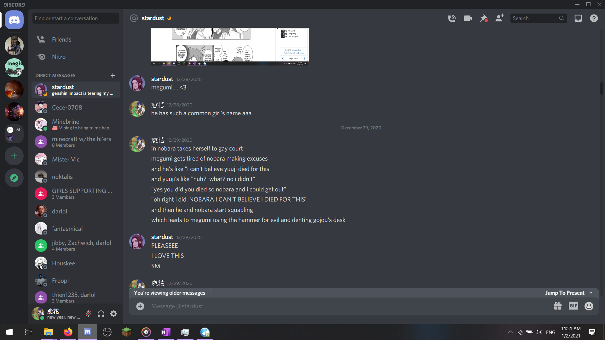

References: ¯\_(ツ)_/¯ᕕ( ᐛ )ᕗ （´∀｀） ( ͡° ͜ʖ ͡° ) (ﾉ◕ヮ◕)ﾉ*:・ﾟ✧ (◕‿◕✿) (≧ω≦) ╮(─▽─)╭ ( ô⌐ô) ¬_¬ （≧∀≦）(¬‸¬) （ ；´Д｀）(≖︿≖✿) `³´ ♡ 鼠雲甜花非開小心人化學 白曉婷 (´༎ຶ ͜ʖ ༎ຶ `) ²³¹⁰⁵⁴⁵⁶⁷⁸⁹ ♥️ ଘ(੭ˊ꒳ˋ)੭✧ ( *´꒳`*)ノ🌸🌼 ♪♫ _(：3 」∠ )_ ( •̀ ω •́ )y o(╥﹏╥)o (*≧ω< *)人( *ゝω≦ *） ≠ (✿◡‿◡) 『』「」
https://nanami-says.tumblr.com/arc-list jjk translation analysis blog
https://docs.google.com/document/d/1XNfBOxEYJdwCa4QAr3toHnE2BFy1Stt1PhkWhD9KEzc/edit#heading=h.sk58symb6op9 is literally a giant list of aus.
http://witterprompts.tumblr.com/post/146761794721/what-are-some-mythological-creautres-youd-like-to for mythical creatures
http://the-write-type.tumblr.com/post/146367868923/the-brightest-witch-studies-word-counter
Important ao3 html
- <a href="link" title="link title/description" tabindex="#">text</a> links to a new page
- title → shows a description/title of the page when hovered
- tabindex → tabbing order for people who can’t use pointer
- target="_self/_blank" → open in current or new tab respectively
- can also replace link w/smth to be downloaded and add "download" (no quotation) at the end
- <img src="url of image” align="right/left/center” width="% or #px" alt="img desc" />text you want aligned w/image can use w/e html as you go<br class="clear"> ← add to make text no longer follow/wrap around image
- width% is no longer a necessary thing to do on ao3 yaaay
- alt is for image ID for screen readers n slow internet
- <a name="name" id="name"></a> ← anchor text, name correlates to url hash, id is hover text
- <a href="#name">words</a> ← will launch you to the anchor.
- <dfn title="definition of word you’re trying to highlight">word that must be defined</dfn>
- <pre> → all whitespace w/in this tag will be considered semantically relevant (meaning it maintains tabs n stuff for things like coding)
- <kbd> → by default makes text w/in look same as <code>
- <cite> → default makes text look same as <em>
- <ins> → default makes text look same as <u>
- <video> / <audio> → what it says on the tin. audio and video embeds. between opening and closing content you put the fallback content, like an image w/an alt desc.
- <div> → will affect all the <p> <br> and other text blocks w/in its tags.
- some other nice things to know:
- × (multiplication) ÷ − ± (+/- sign) ² (^2) &sup#;
- ™ (™) ° (degree) № (that cool NO for number)
- 	 (horizontal tab) ­ (soft hyphen — that hyphen that shows up to break up big words at the end of a line) ⁠ ( w/o the space) · (middle dot)
- “em” as a unit (ex: style="width: auto; height: 2em") refers to the size of the text the thing is referencing. unfortunately, it only works with the "style" attribute, which requires css, so idk if it works w/default ao3 skin
https://www.w3schools.com/html/html_colors.asp → html colors
https://htmldog.com/guides/css/ → learning more abt css hh
{http://68.media.tumblr.com/3b88fe2019195e6edd19eeed367f81f9/tumblr_inline_otfzpiA5i21tv69p7_500.gif} is a sparkly no https://media.giphy.com/media/osjgQPWRx3cac/giphy.gif is a happy pusheen thanks and https://s-media-cache-ak0.pinimg.com/originals/59/e0/e3/59e0e3ad7135393ad7fe430405234067.png is that one pusheen heart that i can’t find a gif of no matter what
https://78.media.tumblr.com/9bc126da04bd4e43f22f378a06c27ec0/tumblr_inline_oixj9f1R2W1tv69p7_500.gif is the asexual into the sky
https://cdn.discordapp.com/attachments/347568404330446852/441590942538006538/Sparkle_Sparkle.gif is that sparkle sparkle gif
https://cdn.discordapp.com/attachments/347568404330446852/441591682304180225/The_Dumbest_Smiley_Faces.jpg is seo and chiyo making those dumbass smiley faces
https://cdn.discordapp.com/attachments/347568404330446852/452583708969664522/Emergersh_so_awesome.gif is the sparkle eyes gif
https://78.media.tumblr.com/046fc16a416a57af3a692e3d2a847d32/tumblr_inline_pa0qe8ML4G1tv69p7_540.png is the tiny heart i drew that used to be my ao3 icon https://media.tenor.com/images/76fb49c640ac86c71a022e2e2332a1c2/tenor.gif “it’s been 84 years” https://media.giphy.com/media/bnzH3tEHjdDuU/giphy.gif purple dancing animal crossing cat https://78.media.tumblr.com/19f99435c78dd9748db434812d8e9b8a/tumblr_inline_ouvhhfysAC1s8uzi9_540.gif i’m so used to giving n now i get to receive https://66.media.tumblr.com/56ffd6580ac570a06faafbe0da26590d/585c0194122fd494-99/s540x810/fa56a38ea1ac5df755cfd0bb7ce69b4869802fd0.gif fuck yeah soup.gif
https://64.media.tumblr.com/7f8b2bcc968b6662755baf7c3508cf73/tumblr_nshp2dKcyr1utmzuco1_500.gif burning elmo gif
- JJK. rock of ages. crack taken seriously. no ships, just the main trio finding a rock in the woods on their day off. itadori and nobara are like “oooo a rock let’s dig it up” and talk fushiguro into helping out with it. eventually, itadori’s like, “hey, nobara, you have a hammer; we can use that to leverage out the rock, right?” and so she’s like “hmmm okay” and so the three of them all pile up behind the hammer and start pulling on it, and they’re like “HUOOOOOOO” when they see that there’s still like HALF A GIANT ROCK TO UNCOVER” but then they keep hearing these sharp cracks. but nobara’s hammer LOOKS okay, so they just keep going with it until SNAP! the handle on nobara’s hammer breaks, and she beats up itadori until he pays her back. meanwhile, fushiguro, who has become surprisingly invested in this whole affair, summons his dogs or smth to go find him a really really big stick, and they do it, they come back with a really really big stick, and so they use that instead to leverage out the giant fucking rock together and they’re all like “yippee!!!” and so they hurry back to campus with their giant rock to show gojo-sensei (aka discount kakashi), who’s like “hooo that’s a nice rock kids let’s display it in the school” and they’re all like “yaaaaay” so they clean up the rock, have a real grand time, and they put it in a place of honor until admin, the killjoys, are like “hey, uhh, you can’t do this” and they’re like “WHAAAAAAT? NO GOJO-SENSEI SAID WE COULD KEEP IT” but then it’s too late and admin has already called in a disproportionately large truck to take away the rock and they watch it go like, “god this fucking sucks.” itadori and nobara are weeping. fushiguro thinks this is the dumbest shit to ever grace the planet. and the senpai are like, “is that seriously what they’ve been up to on their day off?” and yeah then it’s the end. anyway they also convince fushiguro to summon some of his shikigami to help them dig up the rock, like his bunnies n dog, and then he reaches into like the fucking unknown for a crowbar he’s happened to store in there for them to actually dig up the rock.
- BnHA. or JJK, but for now just b’nha. strawberry shortcake. todomomo, or fushinoba if the latter. momo’s parents died suddenly or something, and she’s trying to be strong about it, trying not to cry, but it’s hard. todoroki wordlessly brings her strawberry shortcake and just awkwardly tries to small talk her as she eats it, confused at first. and when she starts crying over the cake, todoroki’s just like, “shit. fuck. idk what to say. my dad’s shitty n all, but idk how i’d feel if he died. sorry i’m bad at empathy. sorry i’m just—” and then he sighs, feeling like he fucked up, but for some reason even she doesn’t understand, momo starts laughing. she’s laughing because she’s confused, she’s so, so sad, but it’s all so fresh, and here’s this awkward pretty boy, bringing her cake and trying to small talk her, to give her some sense of normalcy in a time where she feels so lost, like she has nowhere to go for advice, and there’s just so much to it, and he thinks he’s not handling it well! god fucking damn it, todoroki, it’s the thought that counts. and she starts kind of blubbering, and she’s just like, “i love you so much, you know that, right?” and maybe the reason he was the only one to go up to her, to notice that she’s struggling, is bc they’ve begun dating recently. maybe they’re adults, and she’s just moved into her own apartment to try and be independent no more rich-girl, and he’s the first one to stop by with the strawberry shortcake. - COMPLETE
- BnHA. kamijirou. actor AU. as an actress, jirou always held back with her designated love interests. she found it hard to take herself seriously, pretending to like someone when in reality she felt nothing. then she gets cast in the lead role
- BnHA. kamijirou. momo forbids jirou from saying the words, “i’m gonna kill myself” even as a joke, and so the first new coping mechanism for existing jirou latches onto? “i’m gonna marry kaminari.” it starts off as an outlandish joke, but then somehow, she starts developing feelings for him. oh no.
- JJK.Queen of the Night. nobamaki, side itafushi. vampire/myth AU. childhood friends itadori and nobara. nobara also has exceptionally sharp teeth. they’re probably like nineteen in this au, so like enough freedom to roam around uninhibited, but stupid enough to be dangerous. anyway itadori and nobara are dicking around in the woods together, being generally stupid and extremely fucking feral. and then, at around twilight, they stumble across this old looking castle in the middle of the woods and it becomes like. “i dare u to go in lel” “bet” and so they sneak into the castle only to find it looks hella rad inside and oh shit it’s occupied by vampires??? aka the zen’in clan, so we have like megumi and maki arguing at the top of some grand staircase in front of the foyer, and so like itadori and nobara lose their tiny little minds bc what the FUCK is going on. megumi and maki look at each other, then at the humans down there, then start bickering again in this sort of older/younger sibling dynamic until idk mai comes in. i want tsumiki to come into this fic at some point too but idk when. also since she’s not really a zen’in, she wouldn’t be a vampire. she might be a regular human? a fairy?? idk. anyway, nobara and itadori run away, excitedly running for their lives and they arrive back in town all exhilarated like “that was bonkers fucking yonkers” and they high five and sneak back into their places. i straight-up don’t know what era this is gonna be but it’s honestly whatever. anyway, uhh stuff happens i guess and they end up back in the castle for reasons. idk maybe the townspeople think they’re tainted or something now. maybe they agree that vampires hot, maybe they’re just curious abt the fucking eldritch horror they saw hanging out in the castle yard (aka gojou-sensei). and um idk what the plot’s gonna be. but it sounds like fun. anyway maki becomes kind of interested in nobara in particular bc holy shit those are some sharp teeth. through a series of hijinks, they probably realize everyone in town is some sort of supernatural creature, and that they, too, are supernatural beings. maybe it gets awakened on their twentieth birthday or something idk or maybe it depends on the clan i really don’t know. anyway this is my way of making nobara into a mermaid and yuuji into a demon for the au.
- JJK. a man without eyes [[saw plums on a tree(?)]]. probably no ships? also not really sure abt the plot this seems more like smth for a gifset. anyway summary would just be “[[saw plums on a tree.]] he neither took plums, nor left plums; how can this be?” and it’s essentially just abt how he finds these kids with all this potential
- JJK. i thought there was gonna be a princess in this tower but okay i guess, or my heart is my keep (and you are threatening me). nobamaki, itafushi, side satosugu because this is my life now. fantasy AU where megumi is stuck in a tower far far away, and nobara, maki, and itadori are the adventuring party sent out to save him or smth. maki and nobara are a knight princess and princess knight, respectively, meaning that maki is the princess of the knights and nobara is a princess who happens to be a knight, and they fall in love on the training grounds, sent to rescue someone in a tower far far away. gojou sets it all up for some reason because shadelord gojou replaces shadelord nezu. he makes yuuji go with them in his place to like “Test him” bc he’s busy or smth but what it really does is makes yuuji a third wheel. but like, an oblivious third wheel. they’ll be in like an inn, and there will be two beds, and he’ll be like “oh well there are three of us and two beds
- BnHA. reference. todomomo. tooru wants a reference for her drawings and enlists tdmm. - COMPLETE
- JJK. slow dance. itafushi. nobara walks in on the boys slow dancing in the dark kitchen at midnight. - COMPLETE
- JJK. someday, someone. itafushi. itadori randomly gives megumi the “someday, someone’s gonna love you so much” speech. - COMPLETE
- JJK. beholden. no pairings, just tokyo trio. summary: “beauty is in the eye of the beholder, they say. after shibuya, nobara finds herself mourning her beauty. but the boys have their way of cheering her up. ways that may or may not include dressing up as catboys (among other shenanigans).” - COMPLETE
- JJK. nobara takes herself to gay court. nobamaki. ofc. minor/side itafushi. also ofc. basically exactly what it says on the tin, which i outlined in this tumblr post 
- JJK. zenith, or star light, star bright (first love i see tonight). nobamaki, itafushi, side satosugu, and minor mechamiwa n okkorika. motha. fucken. CONSTELLATION AU. also inspired by night in the woods y’know the video game. basically nobara runs away from her life in the country to attend jujutsu technical college (bc aging them up why not) for reasons i’ll figure out later and will be hidden from the reader until later anyway. as a child she was in love with the night sky, especially with the constellation twins, mai and maki, and moving to the city of tokyo, even though they’re in a more rural area, the stars just aren’t the same. so in her first few days at jujutsu tech, she’s sitting at her window sill, sighing up at the moon and stars, and then there’s this meteor shower, and she’s just like “oh!!! that’s actually really weird; there’s not supposed to be anything like this happening” and BAM it turns out that something’s going on in the sky, and the constellations are coming down. except that it’s been hundreds of years since the constellations have been to earth, so they no longer know how to navigate this world, and anyway that’s how maki ends up in basically nobara’s backyard. the reason the constellations come to earth is revealed perhaps abt ⅓ of the way in, when we meet megumi, prince of stars, who’s had his heart shattered. though i think actually it might be better to have the fic start off with nobara still in rural japan, meeting maki, and getting to know her a little bit before they realize that they have to head over to tokyo. there, they find megumi and yuuji (maybe bc maki and mai were protectors of megumi up in the sky? twin guards? one was the eyes, the other the hands, and they worked together), and it pulls in this ptutu plot where yuuji’s gathering megumi’s heart shards. each of the constellations that fell to the earth has one with them i guess bc it turns out they were chasing them down when they were falling to earth
- JJK. tfw ur bf has never had cup noodles and now you guys have to go on a whole-ass adventure to the convenience store to buy him some. mechamiwa. basically just exactly what it says on the tin.
- JJK. liar, liar; heart caught fire. itafushi. “megumi only lies to people whom he considers incapable of handling the truth. so why does he lie to yuuji when confronted with the truth of his own feelings for the boy?” - COMPLETE
- JJK. the diner at the end of the night. no pairings, though implied itafushi and nobamaki. that fic based off mr. tran’s twilight zone diner college experience, full of hitchhiker’s references just because i can. - COMPLETE
- JJK. lost and found. itafushi. drabble abt megumi and attachment issues. - COMPLETE
- JJK. follow the rose red thread. nobamaki. red string of fate au centered around maki being able to see the red string of fate thanks to her curse vision glasses. perhaps a theme around seeing love as a curse? definitely going to want themes of feeling like you have to earn love and respect bc of her family history and stuff. - COMPLETE
- JJK. cry, baby, cry. itafushi. drabble abt megumi crying post-shibuya. - COMPLETE
- JJK. reform school AU. don’t know if there will be any pairings or not because to put it shortly, THIS is the fic that, if i wrote it under my usual name, would get me absolutely fucking cancelled because it’s kind of like… ugly, in the topics it deals with. basically, each of the first year trio has something they’ve been absolutely cancelled for. whether it’s worth getting cancelled over varies btwn the characters— nobara for punching a kid and being generally violent, yuuji for basically alleged rape and make no mistake he regrets it and the guilt hangs over him every single day of his life but it’s something he did when he knows he should have known better, and megumi for like idk. theft, perhaps? gojou’s there as a teacher and he’s been cancelled for committing murder. why are cancelled teachers teaching cancelled students how to be reformed and un-cancelled i don’t know. mostly i just want to explore nobara and yuuji’s relationship, how nobara pushes people until they spill things they would really rather not, that nobara herself doesn’t realize she really would rather not know, and how she copes with being friends with like. actual criminals, i guess. because she thinks of herself as a good person, hanging out with a good crowd. and how does she cope with the fact that one of her new friends, with whom she’s felt actual kinship with, has committed a crime she’s been taught all her life to be vigilant about. does she forgive him? that’s not really her place to do, though. she wasn’t the victim. she can’t apologize on behalf of someone she doesn’t even know, will probably never meet.
- JJK. flowers for megumi. itafushi, possible side nobamaki. ouran AU. megumi as haruhi, except he starts out as a trans guy in the egg stage, and working in the host club gives him a gender crisis, especially as he falls in love with yuuji (who’s the equivalent of tamaki, god’s most perfect himbo ofc) and realizes he’s bisexual alongside being trans. in general just a lovely exploration of realizing you’re trans and gender as a social construct. also maki and mai are there and they’re trans girls, but for the host club at the start, they’re just playing it off as being feminine boys, but as they get closer with megumi they start leaning into the idea of gender as a performance more and more until they basically are just out of the closet and living as girls their entire time at school. at home is a bit of a different experience bc… zen’in…. and that’ll probably be its own subplot going on as nobara and maki fall in love. divided into four parts, probably chapters, but we’ll have to see:
- she/her - the part of the story where megumi uses only she/her pronouns, or maybe she/they, since becoming a host they’d switch to using they/them as a host, but she/her in all other aspects of megumi’s life, and megumi joins the host club pretty fucking quick to get the plot rolling. that, or she/her will be just the prologue where megumi joins the host club. here will introduce the start of gender questioning and just the Gender Basics™ because yes this will have gender philosophy in it too bc i say so.
- they/them - the part of the story where megumi starts to reject use of she/her pronouns altogether. probably here start to have megumi examine gender on their own, rather than just absorbing thoughts n ideas from the zen’in twins n other sources. no new ideas will be constructed, probably, but the ones known will be revamped, redefined, and mixed together as megumi starts getting a more solid idea of their own gender. probably a focus more on gender as a social construct and therefore megumi’s relationship w/maki as a result.
- he/him - the part of the story where megumi goes cold turkey on they/them pronouns and jumps straight to he/him. here will definitely explore the construction of manhood or whatever, and more of gender as a performance, so focus will likely be shifted to his relationship w/mai. start asking what it means to be comfortable w/particular pronouns, and why don’t he/him pronouns fit the way he expected? start asking about the point of gendered pronouns in society — back to thinking abt gender as a social construct, and allow the characters to come to conclusions like that. megumi probably also takes on a new, masculine name at this point, for at least a little while, then decides he doesn’t like it as a lead-in to the final part:
- he/they - the part of the story where megumi goes back to using they/them in certain aspects of his life and also takes back the name megumi.
- JJK. itafushi. rent a girlfriend AU. basically gojou’s tired of megumi being bummed out about his sister tsumiki being in a coma, so he’s like “all right. kid, i’m gonna take you out one of these days. meet me here on this day i have some errands to do but it’ll be good yeah?” and megumi’s like “seems suspicious but whatever sure fine.” and on that day megumi takes the dogs out for a walk, then hangs out where gojou told him to be and… yuuji walks up to him like, “yo, fushiguro!! ready for our date?” and megumi is like. “i’m sorry. who the fuck are you.” and yuuji sweatdrops, pulls out his phone, and explains that he was booked for a rental date at this time with this person, and he points to a picture of megumi as taken by gojou. and now it’s megumi’s turn to be irritated, and he apologizes to yuuji like “i had no idea this obnoxious man set me up because he’s dumb” and yuuji just laughs it off like no problem, then offers to have a more chill hangout type date with megumi for the day, since he’s already been booked and paid in advance. megumi sighs and agrees, and they hang out and get to know each other at a dog park until the very end, when megumi gets a text from the hospital that tsumiki’s woken up. yuuji tags along to the hospital for some reason bc megumi doesn’t really care either way
- JJK. because if you look away, then i’ll miss you. itafushi. megumi yearns. - COMPLETE
- JJK. cherry bomb. itafushi, probably minor/side nobamaki. yes i came up with this idea because i have an obsession with the bandori cover of the song leave me alone. nobara’s bored, because megumi and yuuji just got together and are kind of in their honeymoon stage. she complains about this to the second years, and panda tells her, “you know what would be really funny? if you just embarrassed them every time they turned you into a third wheel.” and so she starts shouting “KISS KISS FALL IN LOVE” every time she catches them kissing in the halls and i mean IT WORKS THEY STOP KISSING IN THE HALLS AFTER THAT
- JJK. would you rather (be shoved in a closet with your crush) or (talk about your feelings in absurd detail for three hours)? itafushi. summary: “...Because it’s too bad for Megumi and Yuuji: Nobara is making them do both! And she’s not letting them out until they’ve laid all of their hearts out onto the table.” exactly what it says on the tin, except that it also turned into far too much philosophy about regret and what it means to be selfish ᕕ( ᐛ )ᕗ - COMPLETE
- JJK. azimuth. nobamaki, itafushi, satosugu, and other usual minor pairings. if i ever write a sequel to zenith that basically deals with nobara having left her old town behind without a word and never returning, this is what it would be called. since the brain doesn’t appear in zenith, he’d probably be the big bad of this one. maybe bring back some of the curses by saying that people saw a lot of weird shit happening in the sky, and so they’d make up a couple stories related to them bc that’s what humans do, and even though they probably fudge up some scientific explanation and story, that there are stories pertaining to it means that the legends give life back to the curses or w/e. plus as new characters are introduced in the manga, they might also be able to play a role. there’s no real plot yet bc i want basically everything to be resolved in zenith, but i don’t think i’m really gonna have time to resolve the grandma/small town what do they do w/o nobara other than basically let fumi back into the social sphere, so if i ever wanted to explore that, this would be it. maybe i will tragedize stsg? maybe i’ll implement the fact that the brain is technically yuuji’s mother? who knows! but it has a title. maybe title series “starfall”?
- JJK. salamander. don’t know abt pairings rn, but an exploration of regret and what it means to “lead a life of no regrets.” probably a more in-depth exploration of when a regret is a feeling, and when regret is a specific wish, how regrets come around, and commitment to your choices, even if you’re not necessarily happy with the results. is a regret a choice? can you choose to not regret something? are you lying to yourself at that point? is that bad faith? the title comes from the fact that i once saw the riddle, ““in order for you to move forward, i must be left behind. what am i?” and my immediate thought was “oh, that’s a regret.” but the real answer was apparently, “a salamander, which leaves its tail behind when in danger.” which i think is STUPID, personally, on a superficial level, but does a salamander ever regret losing its tail? it was for the sake of survival. can you regret being born? again, this depends on how you define regret. and anyway, the salamander can often grow back its tail. in giving up its tail, it also gains another chance to do things right (i.e. not run into danger and get killed). why would you regret that? because it’s painful? is it better to be alive and in pain, or dead and feel nothing ever again? i think that to commit to being a jujutsu sorcerer, you have to commit to dying. because the kids are so young, it’s very much in that “invincible” stage of life, so they don’t fully understand what they’re committing to. can they truly commit to something they don’t understand? maybe that’s why they have regrets. and i think that jujukai agrees with me to an extent that a regret is more a wish than a feeling. “no sorcerer dies without regrets.” and the examples are all kind of like “i wish i’d done this; i wish someone had told me that” kind of thing. all of these specific wishes. those are regrets. surprisingly, i think megumi is the one member of the plant trio most likely to not regret dying at any moment, at least not regret the death itself. yuuji comes close after, since i don’t think they really value their lives enough to regret dying. nobara would regret dying though, i think. yuuji would feel most strongly about his regrets when staring death in the face; megumi would probably feel mutely resigned, since yeah he has them but i think he also accepts them. yuuji i don’t think would want to accept his regrets.
- JJK. i found a heart and made it all my own. pairings don’t matter. maybe nobamaki since i need to write them more. soulmate AU. or is it? exploration of the tension between “soulmates are real, and there is someone out there who will naturally love you the way you need to be loved, and whom you will naturally love in all the ways they need to be loved, simply because that’s what it means to be soulmates” and “soulmates are made, not found.” maki thinks soulmates are stupid; she wants to love someone on purpose, not because something as stupid and unproveable as fate said she would. she values her autonomy in that sense, and she values hard work put into anything, most of all a relationship. she’s camp “soulmates are made, not found.” nobara is a gone, gone, gone romantic, obsessed with the idea of soulmates being destined to love one another, and she yearns to find her own someday. “i’ll know them when i see them,” she says. “or when i meet them and talk to them. but probably i’ll just see them and know.” and it’s like, a series of off days for the students, and the guys go to hang out, and nobara takes maki off shopping and stuff, and each segment covers a different part of the hangout formula— deciding to go out, the train ride out there, checking out the shops together, lunch, exploring the local areas, and the train ride home— as they argue on different points of their soulmate philosophies— what happens if you simply never meet your other half, what happens if you meet someone you’re more intuitively compatible with than your current ‘soulmate’ partner, what happens if you know the other person’s your soulmate but you don’t feel that spark, what happens if you get tired of putting in that work, what happens if you meet your soulmate when in love with someone else, what if both are true at once? (or, how will you ever know for sure that this person is your soulmate if they’re made not found? how do you know if you’ve “made it”?) thus arriving at my current preferred portrayal of soulmates, where yes, there’s someone out there, but free will exists and makes fate a fluid thing. fate is more like… a probability wave, of this projection of this most likely outcome based off the current state of the variables and your history of decision making. but because free will is still a thing, you can still do things that are ooc, changing the projections of fate, and your destined person can change if you change enough, too. like, can you imagine being soulmates with someone, but then free will is also a thing and when you guys actually meet, maybe your souls were made for each other at the start but your personalities sure don’t align. and anyway, it would be like six different outings all spliced together, so their conversations all happen on different days (since it takes time for people to warm up to other ideas), and by the end of it, they ARE in love. and as they come to more and more of an agreement on what soulmates are, i think it would be neat for soulmarks to start appearing on both of them— a rose on maki’s wrist, one of maki’s cool spear things between nobara’s shoulder blades— that grows stronger as they bond. a reflection of both soulmates being real, and that they’re made and take some level of effort to grow.
- GI. xiaoven, chilumi. red string of fate AU. in a “soulmates but make it take work” kind of way. canon universe. one day, xiao n venti wake up to see a red string of fate on their pinkies. they each individually ask like, zhongli or smth what it means, and zhongli is just like, “it doesn’t HAVE to mean anything. but the local folklore says it means the person on the other end of it is destined to be your soulmate.” and xiao is like “ew” and is totally allergic to the idea of the red string of fate and goes off to beat up some enemies or w/e to forget about it, and after a while it just blends into his life, and he doesn’t think abt it. he doesn’t seek out the other person; he has his DUTIES to carry out. venti is more like, “ehhhh?” n gets curious about it, which brings up the question of fate vs. free will. and ultimately, i rather want the conclusion to be, “some things are simply fated to be entwined. what that means is free for you to interpret as you will. whether that means you will fall in love, become mortal enemies, best friends, or simply save each other’s lives, no one knows, but you are tied together. freedom can have its limits and its boundaries. we are all bound by the laws of physics, after all. it’s all how you see the world: as your cage, or as your oyster.” to make them falling in love into more of a choice than an inevitability. anyway, venti brushes it off for a while, goes back to drinking, but eventually, his curiosity leads him to follow it all the way over to xiao, whom he watches almost succumb, and he plays the flute for xiao, saving him. xiao passes out or smth, safe for the time being, and venti watches over him out of curiosity until he wakes up. xiao scowls and kicks him out (bc he’s AFRAIIIID OF FORMING HUMAN ATTACHMENTS >:3c), while venti’s kind of like “only a matter of time ,’:3c” and we probably cut to another conversation btwn venti n zhongli abt how fate doesn’t always like to interfere with the workings of the world, but sometimes it makes decisions and ties people together, which leads into the “not necessarily falling in love” bit. uhhh stuff happens, and pining. xiao pines a lot. he’s a big pining baby tbh. venti is more willing to indulge himself in visiting xiao, and as time passes, he helps xiao realize the Meaning of Freedom™ and how the people of liyue don’t rlly need him watching over them so vigilantly anymore. he can let go. and so xiao allows himself to fall, and it’s hard bc at this point his job has become like his security blanket, even if it’s also killing him, bc it’s familiar and that makes it comfortable and bearable, but venti is there to catch him. and he is there for venti when he needs someone stable and there for him in his grief. for as the god of freedom, no one has ever thought that he might want something steady tying him down. and for them, to interpret their fated connection as one of a romance, that deep-hearted romance abt the connection of two people who cannot connect with anyone else in the exact same way that they so desperately need from one another specifically, is what lets them be happy.
- full notes on this doc here (IT'S NOT JUST A RED STRING OF FATE AU MOM IT'S SO MUCH MOOOOORE)
- the archons can see some of the particularly thicker threads bc everyone has threads connecting with everyone, but with regular friends like lumine n amber or w/e, it’s so thin it may as well not be there, and so the archons can only really see the important ones, which is why most people only really have one thread. only the god of fate can see every single thread
- venti being friends with god of time means that venti Knows everything abt this is just a matter of time. fate is pretty intertwined w/time, bc “face your fate” also means “face your future”.
- eahc of the side pairings in the fic will show off the different ways people can be entangled by fate. chilumi the lovers, xingyun the bffs, beiguang the rivals, aether n dainslief the mortal enemies, and xv themselves as just “personally meaningful in a way that is probably romantic, but it also might not be and they don’t really feel the need to label it”. the side pairings are just there to show xv that they don’t HAVE to be romantic; their fates are merely entwined, and they can’t really escape it. they have the freedom to choose their ending and their journey tho.
- we’re having a chilumi side plot because we say so. discount vixere but with gay now. chilumi is going to be bi4bi and they’re just in the background duking it out (Being into that) and just being in denial as xiaoven also do their denial PINING thing. they’re just all in denial around here.
- venti would probably get drunk w/kaeya n diluc and bitch abt how xiao just REFUSES to do anything abt this red string of fate shit like it’s not HIS fault they’re linked now
- we are also gonna have guili in this fic bc they were connected by the red string of fate, but they weren’t NECESSARILY romantically involved, it was all up to interpretation, so that’s why zhongli is qualified to give xiao advice on all this. guizhong’s still dead but like. it was there and we ship it
- WE ALSO WANT XINGYUN and THEY are connected by the red string of fate as either bffs or gay. they can be involved either way, when we eventually flip a coin on that. the coin says they’re just friends, which is so true of them.
- beiguang are fated rivals, which COULD be romantic, but they are simply fated to be rivals. rivalry has a certain homoerotic subtext to it anyway so it’s all good
- so chlm become involved vaguely in the plot when xiao is in huge “no venti allowed” lockdown, so venti just wanders around mondstadt, and then lumine hears rumors abt dumping ten pounds of dandelion fluff off the barbatos statue to find her true love, and since she’s desperate to not have it be childe, she does it, and venti follows her string all the way over to childe lmao. and then we periodically check in on chlm throughout as they progress to lovers naturally we love to see it
- xyn would be involved due to xiao n exorcism. since xiao can’t see any strings but his own, and since xiao also hates chongyun (sad), this would probably be at a point where xiao is off of “anti-venti lockdown” and venti starts chattering abt them to xiao bc xyn were somewhere they shouldn’t have been n xiao was like “what are you guys doing here it’s dangerous” “that’s why we’re here” “these foolish mortal children smh” “hehehe they were connected by fate too~” “hwat”
- they’d touch on beiguang bc of zhongli, who also sees all the strings, who’s like “look around liyue harbor; there are many pairs of soulmates who have learned to coexist.” but then after xiao agrees and leaves zhongli’s like “wait. the boy can’t see shit…” and he folds his hands and stares at his tea like “perhaps i should have pointed some out to him” but xiao is too prideful to go back and zhongli has to track his ass down and they run into beiguang.
- xiao has huge avoidance issues by going off to jueyun karst where he can be surrounded by his qingxin and watch the clouds and feel at peace for two seconds before he has to do his dance of death, but that still helps him ignore the red string.
- maybe venti knows his string and it’s spider thread thin, and he follows it eventually and inadvertently saves xiao, which makes the thread thicken a little bit, and by the end they’re connected by a yarn. but anyway, xiao can’t see his string until after he’s saved by barbatos, which explains how he knows that he has a soulmate, but not that it’s venti specifically.
- since venti just peaces out after all that bc he’s like “oh no it’s the BLOCKHEAD’S SERVANT” bc he was worried it was a mortal, which is why it took so long for him to follow it bc he didn’t want to get attached to a mortal, and so venti is disappointed like “i caught a glimpse and this guy is never gonna leave liyue so i’m gonna avoid that place for a while and travel teyvat in hopes that the string will fray and i get a new soulmate whom i can travel with”
- venti returns to liyue after a few hundred years bc it just doesn’t go away and ZHONGLI “DIES”. and now main story starts happening, and venti starts poking around liyue more and bothering xiao. “so, what are the adepti gonna do” kind of thing. xiao would obvs stubbornly try to stay in liyue bc hasn’t had character development yet. and venti would start returning more and more often, at first bc he’s helping lumine out (chilumi arc hehehe) where he watches chlm fight (flirt) from a distance. time also gets stretched a bit more for slow burn reasons so we have a few months btwn rite of descension n the rite of parting n stuff.
- chlm have a disastrous argument, and xv have some stubborn shit going on, so lumine n venti go back to mondstat and become better friends, which is how lumine finds out abt the soulmate shit, which is a dangerous move on venti’s part, so his very incredible reasoning for letting lumine in on the secret is: “i was drunk, and we’re friends, so i’m gonna have to trust you like diluc n kaeluc. ehehehe sorry don’t tell anyone” which gives feral lumine a feral crisis.
- there’s an overall question of “is fate an intangible thing/higher power, or is fate the connections/relationships btwn human beings, made tangible to some through red strings n stuff” and explain what fate means to different people, like mona, who doesn’t think fate can be changed at all.
- we might have scaramona to explore that fate being changed thing vs. fate being something vague and flexible. and i don’t think those things are mutually exclusive, but it might be fun to explore.
- the reason paimon isn’t around to learn of the red string of fate bc lumine just sends her off so she can unload on venti privately but then venti ends up spilling the beans all drunk. she spends all her money to treat herself after “that stupid idiot tried to drown all of liyue” and paimon goes to hang out w/amber personally, and venti’s just like “lemme join” and lumine is like “i am a millionaire, venti. you would not believe how many mora i got killing hilichurls n leyline disorders” and diluc gets another million mora. they’re probs on the second floor, wallowing away.
- xiao and childe absolutely hate each other. xiao sees that man and immediately glares and starts carefully sharpening his spear RIGHT IN FRONT OF CHILDE or like roatiting so that the light reflects in childe’s eyes bc he JUST ENDANGERED ALL OF LIYUE. childe’s having like an apology tea party w/zhongli bc zhongli needs the money, and xiao is there, polishing his spear like, “may i kill him, my lord?” over and over again, and zhongli has to constantly be like “no. no. no. no. i trust him not to do this again” childe twitches n xiao is like “now my lord? now my lord? now my lord?” with just the look in his eye.
- childe would try to buy xiao over to make the whole “can i kill him milord” thing go away, but xiao shoots that down immediately. anyway, then childe learns from zhongli how to win xiao over w/offerings, and then xiao would be like “whatever” abt him n not try to kill him anymore, while childe is like “we’re comrades now” “we are not comrades” “but we’re both separated from our friends right” n xiao is like “just bc we’re in similar situations does not mean we are comrades.” but childe takes that a win anyway bc “he admits we’re in similar situations hell yeah” and zhongli just watches all this happen. sips away at his fucking tea.
- then lumine runs out of commissions to do in mondstat, and she can’t keep day drinking with venti without all her mora, so at first venti’s like “wait i can just sing for money” but that’s not enough money
- (and also they’re living together in lumine’s teapot, bc she got that and then chlm got into a fight, n lumine fumes around liyue for a while but everything reminds her of fucking childe n madame ping gives her the teapot from the adepti, and she’s like “sick. love it. immediately gonna use it as i travel all the way back to mondstat overnight.” n venti’s there, watching her fume n going like “i see liyue everywhere, and it reminds me of xiao” and he runs away w/her)
- so actually during the teapot quest, venti’s drinking at a bar or smth, n so when lumine gets her teapot, she just yoinks venti out of the bar, pays the bill, and she goes “there’s a lot waiting for you back in mondstat come with me back to mondstat. does dvalin know you’re here? does jean know you’re here? did you steal from diluc again? i bet you did we’re going back” n venti has to sing for free at the tavern for a week
- the reason they don’t tp is bc lumine can’t use the tp points bc she lost that ability w/her powers n stuff and venti is a) too drunk to tp, b) enjoys the road trip, and c) prefers to walk around. also lumine is so caught up in her anger that she’s forgotten that venti teleported at their first meeting all those months ago.
- also it takes two real, human hours to strut from liyue to mondstat, which is about eleven days and an all-nighter in-game
- either lumine runs out comms n they have to go to liyue, or inazuma arc starts happening w/“we will be reunited”, but either way, they have to go there and meet people. and lumine stumbles across childe i presume bc he’s still there in liyue. they just ran into each other w/o wanting to.
- actually they go back to liyue to do the quest “we will be reunited” and lumine is like “ughhhhh back to liyue”
- the walk to the boat takes 31 in-game hours
- so they go to ningguang bc she’s the head of the country now, so they need her help to go to inazuma, bc mondstat has nothing for them. not even a single mora. (“in terms of mora. we have no mora.”) and ningguang begrudgingly sends them to beidou, which is how we will integrate the beiguang.
- if paimon ever had the ability to see the red strings, the GODS TOOK IT AWAY bc she’d be TOO MUCH. she’s SO BAD with secrets
- anyway, while adventuring together, lumine cooks a bunch of dishes for venti as practice, and eventually she makes him almond tofu and mentions she learned this one to meet xiao in the wangshu inn.
- lumine goes to liyue harbor specifically to seek out a way to inazuma, checks in w/adv guild, childe shows up and surprises her, and he gets promptly socked in the face. he probably catches her fist and they bicker and bicker and venti sweatdrops in the background with paimon.
- ningguang tells them to board beidou’s ship. beidou is like “we’re setting off in a month. you can hang out in liyue for a month, or you can board my ship and wait for a month” so venti n lumine are slowly meandering over to guyun stone forest to get to beidou’s ship, but guyun stone forest is canonically where xiao fights the most demons n stuff, and THAT’S how they run back into xiao
- by the way, so the reason some fates came up and xv become soulmates is bc the twins land in teyvat and the canon 500 years of sleep and stuff, and fates change so that xv become soulmates (bc lumine becomes integral to venti’s life, and the xv getting together, so the string shows up for xv when the twins landed in teyvat.) and they also opened up other doors for other people too, but don’t know it yet.
- love this. now we can’t get rid of lumine she’s integral to the xv romance plot now.
- but also now what about the flute moment??? that was so good aaaa. or maybe lumine coming in strengthened their bond, since before it was probably just “oh yeah coincidentally saved but we don’t rlly know each other strangers forever” stuff, but now their lives are just getting more n more entwined, so the red string is just getting thicker n stuff hehehe
- xiao is like busy cleaning out the stragglers in guyun forest, and the demon hotspots move elsewhere i guess bc that dragon still exists. he’s like doing a patrol or smth, and he was busy fighting smth in guyun and he’s like “what’s this arrow coming from?” and then a FERAL LUMINE jumps on the demon before his fucking eyes and he’s like “oh. YOU TWO.”
- childe gets intel that lumine’s gonna head to inazuma, so he follows suit. he’s been vibing mostly. the tsaritsa tells him to keep an eye on lumine like they’re not AFTER HER after her, but she has the POTENTIAL to be a huge problem, n childe’s like “well i don’t WANNA specifically,,, but what the tsaritsa wants the tsaritsa gets”
- like he was gonna send a letter saying “im shit at stealth” but then he remembers scaramouche is a dick, and so he’s like “mm actually yeah i can do stealth :)” and sneaks into beidou’s boat i guess
- so this is also the point where xv n chlm separate bc venti has a “vision” n he can’t go into inazuma as a vision user. and so chlm inevitably meet again on either the boat or in the stone forest, and they have some arc like in canon when inazuma comes out we’ll figure that shit out eventually. lumine is safe in inazuma bc she has no vision, and childe has diplomatic immunity. venti was kind of iffy on going anyway like “i went there a million times it’s good” meanwhile, xv.
- xiao wouldn’t wanna go to inazuma anyway and he has no reason to be there. so now xv gets time alone n chlm gets time alone :)
- back when lumine n venti are in mondstat, lumine asks mona if she can change fate and get connected to someone else and explore the idea of fate, mona has her opinions and says “no”
- the day they set out, immediately after beidou’s ship leaves, we have xv watching ningguang fussing over beidou’s bullshit like “that idiot what does she think she’s doing” in this rough, but weirdly affectionate way like “does she know what she’s doing? she just left that dangerous place and now she’s going back bc the savior of the harbor wants to go”
- xiao is there bc he’s “hanging out” w/ganyu or smth, and venti’s there to see lumine off, and now they’re kind of stuck alone together again
- while xv are alone in liyue, this is where we finally get to integrate xy doing their stupid dangerous bff stuff. they went off to like wuwang hill bc xiao has to work, n venti’s just vibing like “i need to do stuff”
- after the sendoff, xiao peaces out bc he doesn’t wanna see venti at all they’re not on talking terms, and so venti goes to hang out w/zhongli expecting it to be like “sup blockhead what’s been up for the last few years heard you retired :D” and then it ends up in an emotional venti moment where zhongli’s like “so i see you’ve found the other end of your string” n venti has his emotional moment bc “how does the god of freedom feel being tied to someone” n venti’s like “it’s not the worst, but i’m not exactly happy with it”
- n okay actually, so zhongli EMPLOYS THE HELP OF HU TAO BC HU TAO FRIENDS WITH XIAO AND WE NEED TO GO MORE INTO THIS FRIENDSHIP
- zhongli asks hu tao for advice on how to get xv back on speaking terms (later he’s like “hmm. this was perhaps a mistake to involve a mortal child in the intricate drama of immortals”), and hu tao is like, “you don’t have to get involved romantically. look at xingyun!” which is advice xiao has already received, but zhongli didn’t give any names, so it was useless to xiao, so this is useful to xiao.
- hu tao sends venti off on her fetch quests in exchange for her help w/the xv stuff, and venti is made TO WRITE A JINGLE FOR THE WANGSHENG FUNERAL PARLOR and then venti goes off somewhere to compose where there’s death and everything, and IS DRAWN BACK TO XIAO, and xiao has to be careful and not run away this time bc there are demons around and so he’s like “WHAT ARE YOU DOING HERE” to venti in an attempt to scare him away (to keep him safe uwu bc he’s PINING UWU) but venti just explains that this is hu tao’s doing and well. goddamn it hu tao. well at least she helped.
- but they’re on speaking terms again now! and it’s good, bc xiao has been dying to speak to venti again bc pining bitch syndrome, but he’s still very reluctant to give up his duties. and they start kind of indulging in each other’s company and talking.
- like xiao remains very stubborn about not wanting to see venti around, but he does eventually learn that fate has its ways to bring them together again over and over again
- so venti writes a sad song promoting the funeral parlor, but hu tao doesn’t like bc it’s her BRAND it needs to be CATCHY, so she FORCES venti to basically invent the jingle, which is why he stays in liyue for months, coincidentally meeting xiao almost constantly. like venti is constantly coincidentally going into demon-infested places, which is where they meet
- venti is hesitant abt falling in love w/xiao, but he’s not OPPOSED to it or anything. he ends up being damseled (maybe at least a LITTLE BIT on purpose) and getting repeatedly saved by xiao, who is probably NOT being endeared by all this at all. like, “god there’s a real human person not person whom i actually see myself protecting instead o just telling myself that i’m saving abstract people? horrendous. now i have to see myself as a person who does tangible good. how am i supposed to hate myself in the face of all these horrible voices now?”
- so venti’s staying in a nice place in liyue harbor, far from wangshu in bc he’s skeptical of the place where xiao is staying, and he’s doing shit being a rascal, n eventually, he’s probably exiled for a day to wangshu and bc he needs inspiration from a book, so he had to go to a poet at the inn, and while there, he finds xiao sulking, ignoring the voices in his head, and they have like a heart to heart or smth bc xiao is secretly warming up to him
- venti admits that he kind of wanted to go to inazuma, but knew to keep lumine safe, he couldn’t, which is tangentially related to the whole “i don’t really like being tied down to someone”, which xiao probably picks up on then bc he’s very sensitive to venti as a person, which is weird, bc he’s not usually speaking to people. but that’s just fate doing its thing, and he’s like “oh no. i’m in tune with this fucking fruit.” and he has a crisis to zhongli.
- anyway, xiao tells venti he thinks people have the right to choose what they want, blah blah blah quiet birds insp abt the whole choosing to tie yourself into a contract, question abt “whether choices really mean anything if not bound by obligation?” (“does a decision mean anything if you’re not obligated to follow through with it?”) which probably gives venti a lot of food for thought, and venti goes mad with philosophy for a few days bc it’s like “well you can talk the talk but can you WALK THE WALK”
- and then this is probably when chlm comes back from inazuma, for whatever reason we decide to bullshit. and now we must wait until 1.7 to keep planning this just bc it’s probably a good idea
- GI. XV. xiaoven. modern/college AU. aka “married for taxes au” aka the first/major part of leijyut au. venti is a fucking clown who is in love with xiao and because he is a clown, he asks xiao to marry him out of the blue when they’re not even dating, and he quickly digs himself even farther into this hole by saying it’s for tax purposes. xiao, who is also secretly in love with venti, goes to zhongli for advice, and zhongli’s advice is “kid, do whatever you think is right.” and so xiao agrees. to this marriage for tax evasion reasons. shenanigans ensue. pining ensues. venti throws an actual fucking wedding, which goes about as well and as horrendously as you’d expect. xiao keeps mentally beating himself up for taking advantage of venti’s “situation” (i don’t think,, he ever even fucking asks venti why he needs the tax discount so much, not for a LONG time anyway, when he’s ready to confront the fact that their marriage is a SHAM). they’re def adults in this au, and tuition is also cheaper if they’re married, which would probably be a more realistic reason why venti would need to be married than… tax evasion… but anyway, it’s good and it’s fluffy, and honestly it’s mostly them navigating their relationships w/each other and their friends, both mutual and non, as their marriage is like… “everyone knows it’s a sham, but legally they ARE really married. but it’s basically just a fake relationship.” but then people start going “are we sure about this? why are they putting so much effort into it?” and the answer is obvs bc venti is double majoring in music and theatre i don’t know what you’re expecting out of him. xiao is an angsty, angsty math major, who feels an INCREDIBLE NEED to convince everyone that this is a Real, Legitimate Marriage™ for a couple reasons probably all involving zhongli. one, he is for whatever reason convinced that zhongli thinks it’s real. like, maybe he forgot to tell zhongli it’s for tuition purposes (bc “tax evasion” is what venti tells xiao, and then together they tell everyone it’s for “tuition purposes” bc that’s what everyone keeps assuming, and it’s awkward to xiao to explain that he’s marrying venti for TAX EVASION), and he doesn’t realize that zhongli has probably figured out that it’s all a sham (like srsly c’mon you weren’t even dating you were just BROS (in huge scare quotes there) and now you’re getting MARRIED like that’s just not what real people who have no romantic investment in each other do, xiao. two, he’s scared the school will take his scholarship away if they find out he’s exploiting the marriage tuition loophole with venti, and that’s also bad for venti bc he’s the one who supposedly needs these discounts so badly. and three, zhongli WILL hurt venti if he touches EVEN A HAIR on xiao’s head, and xiao knows this, and he wants venti to be safe and happy, so this ties into “he doesn’t realize zhongli knows it’s fake but not fake.” anyway, they navigate their relationships with other people. xiao doesn’t really have a lot of friends, so venti pulls him along on outings w/his own various friends. he becomes friends with his mcdonald’s coworker chongyun, who ends up learning the most truth about the situation from xiao’s pov, probably against his will. venti keeps lying as easily as he fucking breathes, but xiao is a bad liar, and when he lies, they weigh on him, which is why he ends up dumping stuff on chongyun (the high schooler?). venti eventually tells zhongli the truth, and zhongli is like “fuckin thought so” n refuses to advise any further, and so then xv end up confronting their relationship and what they wanna be, and it’s a struggle for xiao to accept bc he’s LIKE THAT™ but they get over themselves. like xiao doesn’t even REALIZE he’s in love with venti for most of the fic. he just tells himself he’s doing it bc “venti really needs me, and i want to do good for people to make up for the fact that i am me, and i am a bad person” bc he’s SO ANGSTY AND DRAMATIC I SWEAR TO GOD. (venti teaches him to do makeup at some point, and he NEVER STOPS afterwards he becomes SO PRETTY) and anyway, after venti’s confession xiao can’t stand being in the same room as him so they get like a fake divorce and everything (that’s not legally binding bc tax reasons must still be done. it’s like holding hands when they’re mad at each other bc not doing so makes them sadder), and xiao has a crisis to zhongli (who is so so tired. being zhongli is SUFFERING in this au), has his “OHHHHHHHHHHHHHHH” moment, n then LOCKS HIMSELF IN HIS DORM ROOM FOR TWO WEEKS, REFUSING TO BE PERCEIVED BC HE IS LITERALLY THAT EMBARRASSED. HIS ROOMMATE HAS TO BRING HIM FOOD. OR ZHONGLI IDK BUT SOMEONE HAS TO ACTUALLY FEED HIM AND BRING HIM CLASS NOTES. and they sort it out eventually xiao just has huge avoidance issues and venti’s all “;-------------------;” for a while but they sort it out. probably in the restroom bc that’s the only time xiao leaves his dorm. or he accidentally locks himself out of his room bc he forgot his key card after using the restroom, and venti’s visiting one of his suitemates n they awkwardly sort it out lol.
- title is a play on shorthanding the pairing name to xv and roman numeral 15
- this is like a whole entire au w/multiple other pairings now
- full notes on this doc here (leijyut planning doc)
- GI. lost in the cloud. xingyun. high school chatfic AU. part of leijyut au. i mean we say it’s a chatfic, but really it’s an internet epistolary fic featuring chatlogs btwn xingqiu n his friends (across different mediums like phone numbers, discord, etc), forum threads (bc xq is trying to bring back early 2000s internet forum culture to parallel his guhua shit in canon lol), tumblr blog posts (by hu tao lol), and potentially even other simulated social media like twt and tik tok. xingqiu’s in love w/his childhood friend chongyun and wants to take him to school dances FOR REAL AS ROMANTIC PARTNERS but chongyun is just a little cloud head and doesn’t get it, hence the punned title lol. called a chatfic bc it’s probs mostly chatlogs anyway (though some things might not be explicitly stated until much later due to xq not wanting to leave a paper trail maybe?) bc i’m tired of seeing chatfics that are just bad excuses to bastardize the characters for the memes
- GI. smoke and mirrors(?). yantao. legally blonde/ace attorney college AU. part of leijyut AU. hu tao gets framed for arson at her school by the fatui. she meets yanfei, a prodigy lawyer fresh out of the bar exam, at xv wedding, and hires her to be her attorney. they fall in love as hu tao navigates a serious situation, takes care of her kouhais having high school drama troubles in the group chat, manages her own studies, and is there for xiao as he has his married-for-taxes thing. not many plot details atm
- GI. these wedding bells are made of plastic. chilumi. fake dating AU. part of leijyut au. lumine doesn’t wanna be single pringle at xv wedding, so she n aether fight over whose fake bf childe will be, and lumine wins. however, now she owes childe one, and so she goes to one of his cousin’s weddings in return, but then ahaha, childe has a big family and to his horror, there are six more weddings happening over the course of the year that he is now expected to attend with his “girlfriend”, and so lumine, out of the reluctant goodness of her heart, gets dragged into several other weddings and outings with him. he owes her big time, ofc, and the fatui are probably up to no good at the same time, so let’s just say they’ve got a lot to work through here hehehe.
- GI. innocent as a rose. xiaoven. canonverse probably, exploration of venti’s war crimes through xiao’s struggle to accept himself as a gentle person. also takes lines from baobabs, like “how am i supposed to be? i don’t have my thorns now” for that sort of thing. basically, xiao may or may not know the true extent of venti’s war crimes during the archon war, but regardless of that, he seems to be mostly over it and here for life n love or w/e, and so when venti actually opens up abt the extent like idk bonding happens or w/e i don’t have much here.
- GI. a bird in the cage. xiaoven. exploration of xiao and his relationship to freedom. a play on the phrase, “a bird in the hand is worth two in the bush,” though i don’t quite know how to tie the meaning of that idiom in w/what’s going on. zhongli doesn’t much like letting venti visit xiao, bc xiao acts just subtly different when he’s around venti, and it gives zhongli this strange feeling that he’s caging a bird. he asks xiao abt the contract n stuff, but xiao is just like “no my lord i am bound by duty” n shit “i chose this for myself” blah blah blah obedient servant shit n all. and the thing is xiao doesn’t really know what freedom feels like, so he doesn’t know what it’s like to long for it. he probably already has for so long, it’s become his normal. but venti, he’s like a bird who’s flown from his cage already. he knows xiao’s feelings, but he holds his tongue on it for the most part, because he’s not the type to push his ideals of freedom on other people, because then that’s not a free choice. and so now it becomes this goal of trying to nudge xiao into accepting he can be free, he can be a good person. and as much as it pains zhongli, venti is gonna have to be an integral part of this.
- GI. chilumi, xiaoven, side beiguang n xingyun. pirate/mermaid AU. childe is the mermaid, besties lumine n venti are the feral, chaotic pirates. beidou is a friendly captain of a different ship, which gives them a connection back to liyue, which is probably where they dock a lot of the time, which gives them a vague connection to xiao but he doesn’t rlly go into the harbor or anything. venti n xiao are still immortals, and venti just becomes a pirate for kicks. he makes the SICKEST getaways too, and childe being a mermaid lets him talk to the sea monsters n stuff to wipe out the ships/pirates or w/e. the abyss is in here somewhere, and aether was kidnapped by them and turned into a siren. at some point, lumine has to become a temporary mermaid (w/childe’s help) to go save him. childe guides lumine around the abyss n mermaid paradise, despite venti’s warnings, bc even though he’s never been there, he’s heard for maybe xiao that some shit’s gone down. the abyss in this au was old konreya or w/e, n becomes the equivalent of atlantis, and xiao had a part in the gods/immortals sinking konreya. like, venti n zhongli had parts in there too, but for here xiao is involved too for plot reasons :). bestie lumine n bestie venti must have a HUGE argument abt how venti can’t divulge any secrets, and that’s what prompts her to run away and turn into a mermaid. the reason aether is a siren to become the king of the abyss, but it’s why he n dain got into an argument n split up (bc he became permanently a siren), but we don’t know enough abt dain yet to do much abt it. the distinction btwn sirens n mermaids is just that sirens don’t like humans n mermaids are chill w/humans.
- the genesis pearl probably plays a role in this somehow but we don’t know how right now. like the other sibling got corrupted by the pearl to become king of the abyss, which leaves it up to the other sibling to save them.
- the whole mood goes off the 1.6 update n everything with the echoing conches n shit where lumine gradually finds out more and more abt what happened to aether while they were separated, and it’s sooooo angsty. but childe would be like lowkey there for her bc he understands what aether’s been through. childe’s survived that shit before and they can find solidarity for that
- also childe is covered in scars, and lumine thinks that’s fucking hot but won’t admit it. he’s also shirtless at all times. just because that’s how mermaids work
- sucrose n albedo are part of the crew bc venti was having a kinnie moment. does this make jean a part of the crew? JEAN IS THE CAPTAIN AND KAEYA N AMBER N EVERYTHING. they’re gonna be good pirates, like beidou, which is why they’re friends. kaeya is first mate; it’s why he has an eye patch it’s so good. DILUC IS THEIR SECRET LAND BENEFACTOR AND THEIR ALCOHOL SUPPLICANT. literally their entire crew was, “venti had a kinnie moment (w/sucrose n jean) and then they brought in everyone else” ooo and lisa is like the second mate or w/e. venti’s navigator, lumine’s a crewmate/navigator. maybe head of weapons/combat or vanguard. noelle is their cook who longs to be a bigger part of the crew. klee is head of cannons, naturally.
- xiao n the adepti are like, an abyss hunter from arknights, where they come from the ocean sort of, have sturdier bodies than human beings, fight the creatures of the deep, and have the ocean actively trying to kill them. he’s the protector of liyue harbor but via the ocean now. he can probably breathe underwater.
- ganyu gave into her human half bc being cryo archer means she’s not suited at all for that life. she’s only half duty bound, so she protects more from land and doing paperwork, or until smth rears its head. same goes for yanfei. this makes xiao lonely little boy in the ocean.
- the flute moment happens when venti goes to practice by the rocks in the moonlight, and xiao is like idk abt to die from either low tide or injuries or both, but venti’s music saves him. more parallels for later
- xingyun is on beidou’s ship :) bc beidou captains the liyue characters n jean captains the mondstat characters. not all of them ofc bc ningguang is beidou’s rich benefactor. they’re still pirates, but like white hat hackers n shit. xiangling is also part of the crew as the cook
- GI. chilumi. modern college AU. venti makes a tinder for lumine n chooses childe for her. things go, um, awry.
- GI. 小心. (和我小心? “be careful with me [my heart]”) xiaoven. canon divergence. because a gnosis in chinese is known as 神之心, i just think it’d be neat to have like a little canon divergence sort of thing where before venti’s gnosis gets taken, he goes to visit xiao (bc i think they’d be established in this au), and since he knows his gnosis is wanted, he leaves it w/xiao for safekeeping, which turns the title into a sort of pun— it becomes 魈(的)心, xiao’s heart, and he must 小心, be careful, with this literal 小心, little heart, that has been entrusted to him.
- and while xiao doesn’t take it as his own (keep it inside him and use it as a gnosis), he guards it with care (just as he does his own). or maybe they’re not established, and venti goes to xiao bc he knows xiao is an immortal who fights with his life and would keep it safe at any cost.
- and honestly, it’s sort of like venti giving up godhood to xiao, since venti doesn’t want to be an archon, and we could use the gnosis as like a way of symbolizing how xiao falls in love (learns to carry venti’s heart w/in his own), since venti has trusted it so barrenly w/him.
- and idk if xiao would give anything literal back to venti to represent his own heart— oh maybe this can be the fic where i use that one snippet of dialogue? “a life on its own is not enough, no, not for this debt. but if you paid for it in love, ah! perhaps then it will be worth the sum which is owed” that came to me as i was trying to sleep, abt xiao feeling indebted to Barbatos and wanting to pay it back somehow, not realizing he fell in love w venti
- and venti knows xiao has fallen in love w him; he's too emotionally intelligent not to, and he has a fondness for xiao as well, for the gentle soul he harbors beneath the hard exterior, and he falls a little bit in love w xiao in return as a result
- but anyway, if we did that sort of symbolism, that’d obvs lead the plot to xiao becoming the anemo archon, at least for a while, which might be interesting to develop into as he learns of freedom and develops his own philosophy, which i think would be different from venti’s. he’s like a little substitute anemo archon as the tsaritsa moves on through the rest of teyvat to gather the other gnoses
- maybe venti’s power runs out after a while, and he turns back into a wind sprite. idk just venti being smth xiao must now be very careful around and also his emotional heart
- i wonder what happens to xiao’s Vision (神之眼) while he holds venti’s gnosis?
- GI. xiaoven, minor/referenced chilumi. actually canonverse, but known as “the angst AU” even tho it’s rlly more of a hurt/comfort thing. after venti loses his gnosis, he goes to celestia to give up his godhood in exchange for freeing xiao from his karmic debt (bc he’s hella in love w/xiao), and from there he’s sealed away where the defiled statue is kept in canon. xiao, now with no idea what to do with his freedom (and probably not even realizing venti’s done this at first), is taken in by aether, who takes him along on his journey to save abyss!lumine.
- GI. fairy tale AU. probably a collection of oneshots.
- xiaoven cinderella au where venti is cinderella living under decarabian w/possibly the tsaritsa as his evil stepmom bc having signora and scaramouche as his evil step siblings would be really funny. guili just want xiao to be happy and throw him a coming of age party
- albether (n minor chilumi) rapunzel au where the twins are stuck in a tower together, and then lumi cuts her hair off and climbs down aether’s braid to find help. she meets childe, who’s a great fighter, so she plans on using him to help kill the queen/witch, but then they meet the royal alchemist albedo, and he gets sent off to save aether in the meantime/send him a message or w/e
- chilumi beauty and the beast au. lumine is a very feral beauty and childe is the beast hehe
- xingyun sleeping beauty au, except it’s true love’s first high five instead of true love’s first kiss. xingqiu is the sleeping beauty, and chongyun is like his best friend, and he has to go on an adventure w/xiangling, xinyan, and hu tao, who have to teach him how to give a high five. xq’s never had a high five bc he’s too ~regal~ or w/e and chongyun’s never had one bc he’s a cloud head
- platonic hansel and gretel au w/the twins and the evil god. venti eats the crumbs they leave behind, getting them lost, but then he helps them escape from the evil witch afterwards to repay them for the crumbs
- chilumi snow queen au. tsaritsa snow queen, childe as kai, and lumine as gretchen or smth. aether tries to convince lumine not to go after childe, but she’s so mad that he’s changed that she goes despite him.
- thomaya twelve dancing princesses au.
- GI. xiaoven. flip flappers AU. venti as papika (bc it makes way too much sense with the time travel and the age thing it’s like weirdly perfect?), xiao as cocona (mmm gay coming of age arc), which leads into probably zhongli as dr. salt? but then who would be mimi and yayaka? hu tao would actually make a pretty banger yayaka and we can just y’know delete the bit where yayaka’s in love w/cocona
- so now that i’ve seen like that 16+ hour analysis of pmmm by clearandsweet on youtube and now Know the themes around hope vs. despair and ideals of the magical girl genre, we can probably abstract this au out a bit more. like it’s obviously still a queer coming-of-age story about coming to life
- aa
- GI. dare to hope or weird autumn. xiaoven, side jeanlisa? nitw AU, with venti as mae, xiao as bea, and then jean n lisa(?) as angus n gregg, though that could probably be flexible. maybe chili? though zhongli venti don’t exactly have the dynamic of gregg n mae. oh. albether. where lumine is casey and part of the reason aether n albedo want to move to the city is to search for her.
- flip some stuff abt nitw around too, here xiao was the one who went insane w/the baseball bat in high school, causing xv to drift (bc of venti’s flightiness— while xiao did it bc he cracked under the pressure of smth, it might have been that he was in love w/venti n he saw smth happen to venti that was the last straw maybe? and venti knows this and is afraid of the depths of xiao’s devotion?). venti returns to springvale bc his father, decarabian (the mayor perhaps) has died under mysterious circumstances; xiao is the valedictorian who could never go to college partly because of his bad reputation (which venti remembers) and partly because his mother, guizhong, died senior year (which venti does not remember) and zhongli has like almost no financial literacy.
- venti lives with jean and lisa (if there’s gonna be exploration/allusions to homophobia, might be interesting to have closeted transwoman!jean here?) bc he can’t bear to be back in his old house, and he puts off selling it/going through his inheritance bc of the bad memories. he’d live w/aether, but it’s not the same after lumine vanished, and also he doesn’t know albedo (+klee), who’s moved in w/aether, as well as he does aether. zhongli might be aunt molly the cop, which would make for an interesting dynamic should venti ever choose to have dinner over at xiao’s place lol.
- or well actually, maybe he lives w/diluc, and jean is aunt molly. hmm. possibly have jean + kaeya fill in parts of a role similar to aunt molly in order to better bring out different aspects of diluc’s relationship to them
- sidenote on closeted transwoman!jean here — her younger sister barbara wants to study to become a doctor who specializes in trans healthcare in this au bc she wants to support her sister. not important to anything, just a little note
- they still have their shitty little band, once comprised of venti (guitar(/piano?) + vocals), lumine (bass), aether (drums). when venti returns, it’s xiao on bass now, which surprises him, bc he hadn’t known xiao could play. albedo does the band art, and while he was there, venti wrote the lyrics and music, but in his absence, albth n xiao did some on their own.
- quite frankly, either klee and/or diona might be germ. venti sees klee around a lot bc duh she’s under the care of albedo, who is aether’s boyfriend, whereas diona just seems like some… stray child, who eventually warms up to the drunkard venti and takes him to hang out w/her family one day, where venti learns she was adopted by diluc at some point while he was gone.
- if not that, then diona might be lori, the kid mae hung out w/on the rooftops n made to feel better abt not fitting in n stuff
- instead of sneaking off to a party to feel normal (like bea), xiao takes venti out to a party in the city for venti’s sake, since he knows venti misses the freedom he had in college, but ends up bolting when surrounded by people, and they have that talk abt proximity down by the river.
- when investigating the hauntings, albedo takes venti up starsnatch cliff, which they are both familiar for, surprisingly, similar reasons— venti used to run out there in high school to get away from home; albedo would go out there to draw to escape his neglectful home. he speaks to venti abt living alone for most of his life, though klee popped up at around the start of high school, and how drawing up on starsnatch cliff would distract him. rather than a talk abt the stars n stuff, they talk abt where life comes from, whether they were created or evolution just happened to luck out with them, and perhaps albedo speaks of fairy tales related to flowers, and how he doesn’t believe fairies exist, but he knows that the flowers do and that people made up stories about them to feel less alone in the world → “i believe in a universe that doesn’t care and people that do.”
- xiao takes him to the cemetery, where they do dig up the old grave; aether takes him to the historical museum.
- tbh a big part of the reason i’m so into this au is the idea of venti n the line “But when I die I want it to hurt. When my friends leave, when I have to let go, when this entire town is wiped off the map, I want it to hurt. Bad. Until that happens, I want to hope again. And I want it to hurt. Because that means it meant something.” because oh, to learn to face the music and dare to hope again.
- rather than the little doodle journal mae has in the game, venti writes poetry to Cope™
- something something venti trauma around nameless bard (himmel?) death instead of baseball bat maniacism. venti being a new name he gave himself upon entering college? himmel as his old legal name? venti starting off as a nickname in high school before he fully committed to it in college, hence why xiao might go, “is that what he goes by these days?”
- GI. xingyun. insp. two weeks in hawaii, the line “caught us eating ice cream in your room at three in the morning, ‘cause i’d hate for her to not want me around her daughter, and my heart stops every time.” xy are having a sleepover or smth (maybe at xingqiu’s place?) and idk maybe xingqiu wakes up, maybe he can’t sleep. either way, he ends up waking up chongyun for some late night mischief (aka eating ice cream in his room at three in the morning), and they’re chilling and they’re chatting, and xq may or may not be dropping his stupidly obtuse hints that. y’know. he’s in love w/chongyun. and i mean, not only is chongyun a cloud head, but also muddled w/groggy exhaustion, so ofc he’s not getting it, but y’know, xq’s literally losing sleep over his feelings at this point, s he’s about to just outright tell chongyun, but then, they get interrupted, and xingqiu gets in trouble for eating ice cream in his room w/chongyun at three in the morning, and maybe it ends w/just that snip of xingyun mischief and yearning, or maybe it’ll go on until xingqiu manages to PULL HIMSELF TOGETHER!! and confess to chongyun, who is very caught off guard and possibly confused, and he has a gay panic moment (loses his cool?). anyway, then they get together and it’s great xingqiu likes to fluster chongyun by calling him his boyfriend~~~ esp in front of xiangling, who is very excited for them hehe
- GI. albether. wrong number AU. so yeah another epistolary fic love those little bitches. aether texts a joke question to a friend whose number he rattled off from memory (bc he just got a new phone and he seems the type to memorize his phone numbers), but he doesn’t realize he got a few digits wrong, and the person on the other side, whom’st he realizes very quickly is not his friend (venti? might be venti tbh) bc they sent back a whole-ass essay full of thought-provoking points in response to his two second joke question, and aether decides, “what the hell, why not” and they basically just start exchanging long, thoughtful, and emotional text letters, never even knowing each other’s names for quite a long while until eventually, aether gets curious enough to ask. but anyway they,, obviously get to know each other intimately through this exchange of digital letters (they might honestly switch to emails at some point, since that seems like it’d be easier for albedo) and they obviously,, also inevitably fall in love. and so one day aether gets sick of merely yearning and venti’s just like “why don’t you just go visit him lol” n aether’s like “GENIUS” and so aether broaches the topic to albedo who’s just like. chill abt it. he’s like a city or two over anyway; aether just has to take the train over. and there’s like a couple rapid fire texting sequences btwn aether n lumine (n venti possibly) as he gets nervous abt meeting albedo for the first time. they’ve also agreed to send images of each other at this point, which thinking abt it, was probably the moment aether fell in love w/albedo, and while aether sent an informal selfie probably (of which he probably takes like a zillion bc he’s like that), albedo either sent a formal portrait (like college or lab id), a sketch he made himself, or a polaroid taken by none other than klee. and while i doubt this fic would ever really cover albedo’s point of view, i think seeing aether for the first time like that, in a selfie where he’s smiling like the sun and presenting himself how he wants the world to see him, charms him in some way. it might not be the moment he falls irrevocably in love— that’s probably a long ways off after the end of the fic— but it speaks to a subtle shift in how he views aether from someone who sparks his intellectual curiosity and finds interesting and pleasant to be around to someone whose company he’d actively seek out. anyway, epistolary, so it ends with aether texting albedo as he leaves the train, asking him where to look, and it ends with just “found you.”
- GI. hope as stitching on fabric. xingyun. from 希望的希 etymology coming from that of embroidery, stitching on fabric. xingqiu tries to define hope for himself and why embroidery might have come to mean hope. perhaps have the story sort of follow how he’s been reluctantly pulled into his family’s silk company and he’s left wondering why he feels so jealous of chongyun’s freedom to go adventuring. like, he still sneaks out to do his vigilante stuff, just he’s being dragged into business stuff more often now too. and they’re getting older, too, and his parents are starting to talk about ~marriage~ and stuff, and it’s not that xingqiu is particularly opposed to the concept of getting married— if he had to say, he’s either ambivalent or has just kind of always assumed it’d happen some nebulous day in the future (that never comes to be the present)— but something about it just rubs him the wrong way. it bothers him even more when he’s bitching abt it to chongyun while at wanmin restaurant, and chongyun mentions his parents have been trying to drag him into similar discussions, but xingqiu can’t quite pinpoint why these things bug him so much. xiangling isn’t getting bothered by these talks by her dad (she has a girlfriend maybe? or her dad just doesn’t see the point in bothering her abt it yet), and neither is yanfei, or hu tao. maybe xinyan, since she grew up poor and her parents wanted her to grow into a phoenix according to her character story, but xinyan is used to resisting those kinds of pressures, so when xq bitches to her abt it, she’s like “haha tell me about it. don’t let it get you down though, dude!” and sure, maybe yunjin is getting bothered by her parents to the same extent as xingqiu (which could get jossed when she gets released lol), but really it doesn’t affect xingqiu the way it does when the person being pressured to marry (n settle down?) is chongyun, and chongyun isn’t even BOTHERED by these talks nearly as much as rich boy xingqiu, SO WHY IS IT BOTHERING HIM SO MUCH??? and that’s what makes xingqiu realize he’s in love w/chongyun (and has been for he doesn’t even know how long because no matter how hard he tries, he just can’t pinpoint the exact moment his feelings shifted from best friends to a crush). he’s jealous not of chongyun for his freedom, but of everything that shares its time n simple existence w/chongyun during his adventures. and that is such a disgustingly selfish revelation to xq, and i want it to happen as he’s like, fixing his jacket bc he got into a wild adventure w/his friends that resulted in him needing to mend it. that’s why it’s “hope like stitching on fabric.” you stitch the fabric because you want it to be better in some way because you care about it. hope is borne from desire. and he wants to spend his life w/chongyun. and here, xingqiu finishes his stitching, ties the thread off w/a little knot, and cuts the thread on his teeth like a heathen. or maybe w/a pair of tiny little scissors bc he’s a fancy little rich boy after all. and he purses his lips, holds his jacket on his lap, as he stares off at the moon through the window, with its light streaming through onto his bed. and he just lets that realization sink in. he wants to spend his life w/chongyun. he could do this for the rest of his life, and while he knows it’ll be rough at times, it would satisfy him. (and he thinks to himself, “wait. if i’m in love w/chongyun, does that mean i wanna…” n he thinks abt kissing chongyun, which is a horrible decision really bc as soon as he realizes he wants to, he can’t really un-realize it when he’s spending time w/chongyun, can he now.) and so begins xingqiu’s agony of existence. bc now that he can recognize the desires underneath his jealousy, he knows what he hopes for now (chongyun as his boyfriend/life partner/whatever really), and like. he can’t just not pursue his hopes and dreams, right? what kind of fucking protagonist doesn’t follow their dreams? but also, he’s kind of a self-important writer bitch, so he’s gotta be Subtle abt conveying his changed feelings to chongyun, but the problem w/that is that chongyun just doesn’t fuckin get it lol. realizing this, xq goes to his friends, and they plan a grand exploit which definitely sounds like it’s gonna go down in the books as an epic adventure, but obviously goes awry in some wild way, putting them in actual mortal peril, and at the end of it all, xingqiu just spits it out. but as they plan, xq allows himself to really feel all this hope, like it’s all coming together. mm i feel like i’ve lost the point of this fic.
- GI. fellas is it gay if it’s in a gay bar but you’re only the security guard? xiaoven. gay bar AU. - COMPLETE
- GI. written in stone(?), or more likely blank slate or clean slate. ganqing. college/modern AU. magical realism tossed in for kicks? ganyu n keqing both frequent the same little café that has like, chalk drawing walls or w/e n allows customers to doodle on the walls n stuff. draw n erase as they all please sort of thing. anyway, so they frequent this café and take the same table nestled in the corner btwn the window facing the street and the chalk wall (so that ganyu can stare daydreamily out the window at the incoming spring w/her chin propped up on her elbows as she’s trying to mentally calculate her workload and the stuff she has left to do, only for her mind to sort of drift away to other things and so that keqing can keep her eyesight good by taking advantage of the natural light and potential fresh air), and one day, ganyu runs out of space in her notebook/planner, so she borrows a bit of chalk and uses the wall instead. they’re mostly just little notes to herself, a to-do list analyzed and overthought a little, and she loses track of time, and she has to hurry and pack up all her things to get to her next class, meaning she doesn’t have enough time to properly erase the chalk wall. she apologizes to the café workers for this, but they don’t mind bc the chalk wall is meant to be like, a collaborative thing btwn guests n strangers and all, but anyway. keqing comes into the café next (probably passes by ganyu right outside lol), sees the to-do list or w/e, and she’s like “oh, this was written by a fellow student” bc AHA i got this— they’re taking the same course (a polisci class?) taught by the same prof (zhongli probs lol), and they share a lab while attending different lecture times (keqing comes into the café from that class while ganyu has to run off to it?)— and she recognizes the assignment names. and she’s like “aha, a fellow student. hmm, well…” and like idk maybe the thing ganyu was writing was an argumentative essay outline, and it’s abt like the importance of rex lapis’s role in developing liyue or smth, and they have opposing opinions. keqing looks at ganyu’s outline, sees what she considers to be a weak counterargument, and takes up the chalk and starts marking up the outline w/her own questions and arguments, not really expecting the other person to see it or respond or anything, but she’s pleased w/the fact that she’s done it bc she feels more confident abt writing her own essay now. anyway, so then ganyu comes in again the next day and sees all the annotations on her essay outline, and she thinks abt them, takes a picture, and erases them to rebutt them again on the chalk wall, editing her essay to strengthen her arguments there, too, since it’s due soon anyway. keqing comes in, sees the argument, scribbles rebuttals, edits her essay, and after this both girls turn in their essays at like midnight. usually keqing turns hers in early, but she RESUBMITTED hers before the deadline bc she was just. very passionate abt her chalk wall essay opponent lol. anyway, keqing comes into the café again the next day or so and is a little disappointed to see that the staff have cleaned off the chalk wall, as they do once a week or so (essay due friday most likely lol), and the person whom she did the essay thing on the wall didn’t write anything since then. so a few days pass, they get their essay grades back, and keqing, ever the competitor, decides to write on the wall, “what did you get on the zhongli essay? i got xx grade, which i have to say is in no small part thanks to you giving me a nuanced look into how the opposition thinks, so. thank you for that.” right next to a doodle of ganyu’s constellation that ganyu had done earlier that day bc she had a bit of downtime. and ganyu comes in the next day and sees the note, and she borrows the chalk, and she’s like “i also got xx grade, thanks to the way you challenged my arguments. i found your opinion that we have been overemphasizing rex lapis’s contributions to liyue and the greater teyvatan history to be very thought provoking, even if i ultimately completely disagree, but i never did get to hear your thoughts on how humanity could have been expected to do those things w/o the help of archons” or w/e bc i guess this is like. lowkey magical realism now or smth, though rather than having ganyu thousands of years old, she can still be half qilin but college age/same age as keqing and have been raised in a traditional household sort of thing. benign magic sort of thing. maybe ganyu IS STILL thousands of years old in this and is attending college to get an idea of what life is like for young people these days. i don’t know. the point is that ganyu compliments keqing’s perspective, even if she doesn’t agree w/how keqing thinks things would have worked out, which sparks further conversation on the chalk wall revealing that they actually have very similar life goals and long-term desires. they settle into this sort of routine where they talk on the chalk wall through the week, and then it gets erased over the weekend, and they start anew on mondays, and they get to know each other through the chalk wall and sort of fall in love w/the way the other portrays themself through words (their innermost selves or w/e). meanwhile, in the lab or discussion they share together or smth, they’re pretty frequently butting heads. i feel like keqing might almost start a fistfight, but the ta talks them down from it, and it’s not like, an overwhelmingly unpleasant experience, but they’re definitely wary of each other and have kind of low opinions of each other’s personalities lol. anyway, one day towards the end of the semester, keqing gets tired of all this through-the-wall middleman nonsense and suggests they meet up where they usually exchange letters one of these days, and ganyu agrees, and they each dress up a little (but not too much) to make a good first impression and it’s like, “YOU??” and like the fic would basically be abt how gq think they have rlly clashing personalities (their irl conflict) but are actually way more similar n compatible than they expected (their letters showing their inner selves and also talking to each other in more good faith than they typically did in class) and coming to care for each other like that. they probs also fall in love w/each other at least a little in their irl meetings too, but they’re in denial abt that. but truly the inherent romanticism of being academic rivals lmao.
- GI. best friends (or lovers!). xingyun, but in like a qpp kind of way. an exploration of what it means to be the most important person in someone’s life and what it means to build your life with someone. how do you define a relationship w/someone when it’s kind of ship-of-theseus’d itself into smth else?
- GI. yantao. fairy tale AU!!!! first pitched to star over a letter lol. kind of like snow globe fairy tale vibes, where you have a little house in the snowy wood where hu tao lives along until yanfei wanders in, lost and possibly enchanted to look like a reindeer (or xiezhi, upon which she’s based hehe). she stays w/hu tao until the snow melts, but then winter seems to last forever, and then hu tao realizes she has to break the enchantment over yanfei for the snow to melt and spring’s arrival. and like, she’s a witch, and yanfei is an expert on fairy law or smth, and they combine their skills and knowledge to do the thing and bring spring to the forest again woohoo!!
- GI. can’t resuscitate a person who was never born. t4t bennefischl. arranged/political marriage AU? def royalty au lol. title from jukebox the ghost’s “the stars”. basically, fischl is a princess, but no one seems to see her as one; on her sixteenth(?) birthday, she is to meet her future bride, which she does so with many reservations. the engaged couple are left alone in a room together to talk privately, and the first thing fischl says is that despite her appearances, she is a princess, thank you very much, and her name is fischl, despite what other people say. “and you are…?” she says to her apparent new fiancée, who sheepishly shrugs and runs a hand through their hair, singed short. “bennett,” they say, “and i’m a boy. though, thanks to my bad luck, no one ever seems to see that.” and fischl feels light inside for the first time as she realizes she has a kindred spirit. and she swiftly stands up and says some shit like, “come, boy, and together together you and i shall make the world see us for who we truly are” etc etc and yeah basically
- GI. disjunct. thomaya. oneshot, probably. thoma character study on the nature of being biracial and not looking like it at all, of looking like an outsider when technically, you know you have a right to your own heritage. but do you really? these people who have lived here their whole lives don’t trust you the way they do people who look like them. will they think you’re cherry picking aspects of their culture for your own enjoyment? that’s not what you’re doing, but it’s hard not to feel their judgemental stares. if thoma thinks back, he can remember even ayato didn’t really consider him one of their own before he got his Vision; after all, while it was a kindness to say, “if you don’t want to get involved, you should leave now”, it carries with it this feeling of, “this is not your problem, for you are not one of us.” ayato’s obvs not like that anymore, but it’s been different from his relationship to ayaka from the start. ayaka, who was probably somewhere btwn ten and twelve when her parents died while ayato was like 14-16, didn’t have so much bias in her when she first met thoma, and so as all three grew up, she was the one most easily accepting of him as a full member of the kamisato clan, even choosing him as her fiancée when she came of age. and it was a shock to a lot of people (including thoma, probably), bc ~omg the princess picked not only a peasant but a foreigner too omg~. and sometimes, thoma wonders if she feels the burden of being related to him, bc he loves her, and he doesn’t want to make life harder for her. but she insists that she’s fine; the fact that he’s mixed and looks foreign is no more a burden for her than it is for him, she says. (which is true, because it does burden both of them in reality, and this is ayaka’s way of telling thoma she sees his struggles (even if he doesn’t) and is willing to share in them.) and then the traveler lumine sweeps through the land, and after the vision hunt decree is abolished, she asks him one day if he would ever want to move back to mondstadt. after all, living in inazuma as a foreigner is a huge pain. it gets better once people get to know you, but getting people to give you that chance in the first place is hard, and you’re constantly having to earn people’s trust in order to get stuff done bc so rarely does one person’s trust significantly affect another person’s when just getting started. and thoma’s like, “nope!” and lumine doesn’t believe him, so he takes a bit to explain it all— how while mond was nice and it was a pleasant place to spend his childhood, inazuma is where he has built his life, made his home. (he glances over at ayaka, chatting w/someone who came to visit the commission, and feels a lovely swell in his heart of smth) though he doesn’t look like the locals, he feels the pull in his bones towards this place the same way beidou feels the song of the sea tugging at her heart. while freedom is a nice ideal, it was loyalty (related to the concept of eternity) that gave his life purpose, and while he does admittedly want to visit mondstadt again (see his mother, meet up w/old friends again, etc), if he had to choose just one forever, it would be inazuma. fic probs snapshots a few different ages during which a few events happen or w/e. perhaps titled “for without doubt” bc “for without doubt, how is there faith?”, and it’s pretty clear that thoma got his vision bc of his faith/loyalty towards the kamisato clan, and so like. faith in one’s self kind of thing idk. - COMPLETE
- 13 — arrival in inazuma, taken in by kamisatos. almost gets deported when out searching for his father (bc the political groundwork for sakoku decree is already getting laid), but kamisatos come fetch him in ritou before he gets deported and fight for his right to stay in the country. —finished
- 14 — ayaka/ayato’s parents die; thoma receives his Vision. ayaka 12, ayato 16. after they realize he has a Vision now, he begins bodyguard training, and this is when he basically just goes from being this random little servant boy working for his room and board to the clan’s retainer —finished
- 15-ish — sakoku decree put in place. thoma starts taking care of more than just cleaning at the estate and begins taking care of other jobs around the estate and feels the struggle of making connections w/people. maybe some conversation w/yoimiya where she tells him that as long as he’s his chill, easygoing self, people will warm up to him eventually —finished
- 17-ish — ayaka (15-ish) invites thoma to like, the cherry blossom festival or smth. like, she catches him while he’s outside learning the polearm (from ayato? >:3c) in his spare time and asks if he’d like to accompany her to the ~festival~, as it’s expected of her to bring like, a personal servant or something, and the one she usually takes or w/e has requested a day off then or smth, and so he thinks Nothing Of It lol. basically a cultural festival, and he gets a lot of odd looks from the people at the shrine/event bc He Looks Out Of Place, though ayaka (n ayato?) don’t really seem to notice, so he focuses on keeping them safe n doing his retainer duties or w/e. this also marks the transition from calling ayaka, at least, ‘young lady ayaka’ to ‘my lady ayaka’. should probably also be ayaka’s first time at this festival with a Vision
- 19-ish — thoma’s in ritou on a business errand, and he notices that the atmosphere is different than how he remembered it when he first washed ashore. and he feels this sudden and powerful pang of homesickness as he wonders how his childhood friends are doing these days. he sends letters to his mother still, but their correspondence has grown sparse as the sakoku decree tightens its hold on the country. smth smth differences in how the merchants stuck in inazuma see themselves as outsiders (and are thus never integrated into inazuman society) vs. how thoma sees himself (as someone who is a part of this place bc like… idk hard to put into simple words lol). —finished
- 21 — at some point when ayaka is 19-ish, she chooses thoma as her fiancé by gifting him one of her fans. it’s like, “lady ayaka, now that you are of age, it is time for you to choose a spouse” and ayaka flutters her fan a bit as she hides her face a bit, then calmly says, “okay” as she closes up the fan, pads towards the back where thoma’s watching, and places the fan in his hands to the ~ASTONISHMENT~ of like everyone, and thoma’s like, “M’LADY???” n ayato’s like “well she chose someone everyone go home lol” —finished
- 23 — vision hunt decree put in place. a bit before or after, thoma asks if ayaka ever feels a burden in being related to him. he’s gone from some random servant boy to the princess’s fiancé, and there has been pushback from the elders ever since the day they got engaged, which is why they aren’t yet actually married. cue “i’m no more burdened by it than you are” and idk maybe something abt that. omg what if she asks him if he wants to leave inazuma for a time, and smth flares up in his chest (setting his vision alight huhu), and he cups her face in his hand n strokes her cheek w/his thumb as he says “no, of course not” all softly like, “there are people here i want to protect, to whom i am loyal to my dying breath.” and ayaka smiles softly at him and then they KISS AAAAAAAAAAA —finished
- 24 — inazuma act ii in canon; lumine hangout quest stuffs except instead they talk abt ayaka and mond n his relationship to inazuma. tbh he probably lasted that long through the vision hunt decree bc he had so many connections and people willing to cover for him every time the commission was in town. —finished
- GI. say hello to lisa, or kiss code. jeanlisa. secret agent/spy AU. jean is a secret agent/spy and is looking for her informant, lisa, for like whatever reason. idk how secret agent aus work.
- GI. joy of my life. xiaoven. canonverse, probably. I LIED WHAT IF IT WAS A SOUL EATER AU. insp. that one poem raven wrote abt joy for her graduation “‘tis no wonder she is loved / ‘tis no wonder she is dear / ah! there she is / the Joy of my life” bc i was translating it 『難怪她被心愛，難怪她被珍惜。啊！她接近於！我生活的樂趣』with 樂趣 (lèqù, noun form of joy/pleasure) being kind of a pun on 樂曲 (yuèqǔ, musical composition). n so like YEAH venti is the joy of xiao’s life (duh), but i kind of wanna explore what the alternate reading (yuequ) might mean. like what’s the metaphor there. like, yuequ is like, a song, a tune sort of thing. the point of it being like, kind of punny is to tie the music together w/the joy, so i guess this could be like a 5+1 things abt how venti’s music has noticeably affected xiao’s life or smth? idk might be better as a short oneshot/drabble, or a series of short vignettes where it’s just a fleeting look into xiao’s pov of venti (and he’s gone, gone, gone), with one for each line of the poem. kinda sad that i probably won’t actually include the poem or mention it in a/n bc 1. that would mean asking raven permission as a courtesy and im not stronk enough for that, and 2. since it’s also an original poem, i’d have to explain its source to the audience, and then i’d wanna also explain some of the nuances to it, but then that gets too much into my private life, Which Shouldn’t Be Put On The Internet. if it’s a soul eater au, then it also becomes a play on the final lines of se, that SoMa Moment™ where soul is like “it’s bc of you that i stopped running away. even this music is something we composed together”
- GI. ardency. yantao. honestly don’t really have a plot for this rn but insp by the fact that ardent actually means to glow or shine like fire, which i hadn’t known bc my only exposure to the word was via pride and prejudice’s “i love you most ardently”. so like. i guess an exploration in how both yanfei n hu tao are kind of weirdos bc they’re such passionate people with kind of oddball interests, but yanfei is a bit more accepted/less judged by society bc her work/passions aren’t as stigmatized. and they find love in one another bc yanfei doesn’t think there’s anything to judge badly abt hu tao, nd hu tao is just in love w/the wilder, weirder side of yanfei, which tends to scare people off from getting too close/personal w/yanfei.
- GI. Lighthouse. xiaoven. beauty and the beast AU/canon divergent retelling. title drawn from an ocean vuong quote abt monsters [xx] and how lighthouses are both a warning and a shelter at once. first sentence or summary “xiao doesn’t mean to kill the child.”, referencing qiqi’s backstory. essentially, xiao accidentally kills qiqi and must be shut away Somewhere™ by zhongli as a result. i presume the other yaksha are still around and alive at this time, which is why this doesn’t, like, destroy the balance of liyue or anything. also know that zhongli seals xiao away Out Of Love, and xiao is completely and totally obedient n willing in his punishment, but this doesn’t necessarily make it Right? not sure where that would go but i’m obsessed w/it. anyway, meanwhile, venti is dreaming, bc he’s entered one of his Long Slumbers, and i guess being sealed away means that xiao occupies the same space as venti’s dream realm for whatever reason. i don’t know. does this need to be explained, or can we just suspend our disbelief for this? thank you. xiao knows he’s in a dream, but venti is probably unaware at first, like not until he starts noticing things shifting (as they do in dreams) or xiao just straight-up tells him. this is also kind of dumb as hell, but at the same time i’m obsessed with the idea that xv just share this dream space which just so happens to look like a castle by the sea (which has a LIGHTHOUSE TOWER, which perhaps either venti or neither of them are allowed to enter?? >:3c), which also contains like a magic mirror that would allow them to see what is happening in the real world. ANYWAY, obviously they are both stuck in this dream world castle thing together… mebbe… although ACTUALLY, what if zhongli simply put xiao to sleep as the whole Sealing Away thing to hunt down like nightmares or some shit (bc xiao would have otherwise insisted on being,,, as they say euphemistically,,, put to sleep, although it would be ~fun~ to keep his dead or alive status ambiguous for most of the fic >:3c), and the abandoned castle in the woods venti can’t leave is actually his nightmare. but xiao doesn’t realize this for like idk various reasons i guess, which is why venti’s dream (nightmare) becomes kind of his base. he probably takes on a more monstrous appearance when hunting down nightmares, like y’know yaksha mask and stuff, but does he take it off when he returns to the castle by the sea where venti is? probably not at first, since he is first committed to his duty, and he probably doesn’t want to really see the things he’s doing (relying instead on his other senses + vision) (but also: he is too ashamed to be seen [as human?]) bc even though nightmares feel and taste foul upon his tongue, the actions themselves remind him of his time under the evil god, and wearing a mask and pretending (believing) he’s a monster makes it easier on him. meanwhile, can venti even leave the castle by the sea? the castle, perhaps, but definitely not its grounds— that’s why it’s his nightmare; as idyllic as the castle by the sea might appear, it became a cage the instant he was unable to leave. it should also remain hidden to the reader that where they are is a dream at all until near the end when they KISS and like i guess xiao eats the bitter parts of venti’s nightmare, transforming it into something light that he can wake up from. anyway, so bc of that, the castle lighthouse by the sea has day/night cycles that happen at random bc they are in a dream, and xiao comes and goes as he pleases to be the conquerer of demons/nightmares and all that stuff. venti stays in the castle and like, composes music, plays for the little woodland creatures from um. the woods right behind the beach or something. anyway, xiao probably doesn’t know who venti is, like, he probably thinks there’s just This Guy here for WHATEVER reason like maybe he doesn’t even realize he’s sharing a place w/venti until some time in. the dihua flute thing hasn’t happened in canon at the point where this fic starts, THOUGH HONESTLY… IT WOULD SLAP REALLY HARD IF XIAO WERE TO REALIZE THERE WAS SOMEONE ELSE IN THE CASTLE BY THE SEA WHEN HE JUST DRAGS HIMSELF BACK TO THE SHORE AND COLLAPSES AT SUNSET/MOONRISE ABT TO DIE BUT THEN IS BROUGHT BACK FROM THE BRINK THROUGH— YOU GUESSED IT— THE SOUND OF A FLUTE PLAYING IN THE DISTANCE. in this case, from the castle by the sea he’s been inhabiting (perhaps the lighthouse itself? will have to think abt the symbolism of that tho). and since this is The Dihua Flute Moment, this is pretty much the moment where xiao and venti first Meet each other bc all other times before were like, brief meetings in group settings. so here they meet each other as individuals. xiao obvs doesn’t know that venti is the anemo archon; venti, knowing stories of the yaksha and liyue culture in general from being friends w/zhongli, sees xiao’s anemo vision and also chooses to keep this information to himself, lest xiao start treating him with more reverence than he deserves. so anyway, they start this kind of cohabitation thing going around. xiao comes home to the castle by the sea, and venti, lonely little venti, tries to get to know him, tries to get past his prickly exterior. it takes a while, but eventually, xiao starts tolerating him more and more, though he never removes his mask. it’s almost like a phantom of the opera kind of thing; the mask just stays ON. except venti respects xiao’s boundaries like that, and it’s through time as they get to know each other, as venti starts being vulnerable w/xiao, the mask starts to fade around the edges. like y’know how the mask just teleports onto his face n stuff yeah yeah yeah that but slowly. xiao doesn’t notice it at first, esp since it just goes fully on when he leaves to do his nightmare eating stuff, but at some point, he starts feeling safe enough w/venti to let half his mask slip, and he actually sees venti clearly enough that the rest of it fades away bc he’s just so surprised he forgets to maintain his walls. and like… they see each other for the first time, and for a moment it’s just surprise, written all over both of their faces, and then xiao just excuses himself to run off and eat nightmares again bc oh god oh wow those were a lot of feelings he was having just now what the hell is happening in his chest that felt nice actually and he doesn’t deserve this; this is his punishment and he’s a sinner and so he should go atone for his sins and suffer etc etc. and he’s away for longer than usual, and venti finds himself missing xiao’s quiet company. but anyway, xiao returns in the dead of like… “””night”””, slips past wherever venti has fallen asleep to have time to himself in the lighthouse, actually, bc both a shelter and a warning. there, the mask comes off again, and this becomes normal when he’s alone, though it remains on in various shades when he comes out and sees venti again bc ofc he comes out and sees venti again. he finds himself missing venti’s peppy company, after all. there’s this connection that’s formed btwn them that he hadn’t noticed at the time but now tugs at him, draws him to venti like a moth to a flame. (he’s falling in love, but still slowly at this stage hehehehe). anyway, venti starts successfully convincing xiao to be more chill, since while yes, vanquishing nightmares is his duty, he can’t properly carry it out if he’s just gonna keep destroying himself like this. come here and hang out in the garden w/me, dummy. and yet slowly, xiao starts to piece together venti’s character, and now that they’re spending more time together, he realizes that venti can’t actually leave the castle grounds. he’s trapped there. and slowly, this idyllic little castle by the sea gets realized as a nightmare, and bc venti has been opening up abt stuff, xiao has pieced together that this is the god of freedom’s nightmare, that venti is the god of freedom. and like. blah blah blah learning to accept that you are seen and loved all the same, the inherent tenderness of constancy and acceptance has happened btwn them all this time, so they’ve fallen in love and venti is just waiting for xiao to make the first move. and so— and this is critical— the only way either of them can leave the dream realm and wake up in teyvat again is to kiss so that xiao can take the weight out of venti’s now-bittersweet dream. i know this is a written medium so this can’t be shown, but KNOW that i am picturing the home they made together in the lighthouse castle by the sea blurring and swirling and fading away as they like kiss (i am feeling Extremely Perceived rn and i don’t like that lol). and then they part, and xiao feels venti’s hand slipping away as his fading voice says goodbye and thank you for the sweet dreams, and xiao is helpless to see him go or however you word that sort of thing. it looks/feels like that one idle w/the anemo pixie thing, and he is alone in his own empty dreamscape for a while, for he hasn’t had any desires in so long that he’s rather forgotten how to dream. and then, he is pulled out of his slumber back into the waking world, where he is greeted by definitely zhongli, though i’m not sure abt the other adepti. i have no idea if the other yaksha are still alive at this point who knows. anyway, xiao returns to the waking world, to his regular duties of destroying the remnants of old gods, and slowly (as he YEARNS), he develops that canon dream of being able to dance in a field to the sound of venti’s flute once more. he doesn’t see venti again for a few years (though that means very little to either of them as immortals), when they finally meet again when venti comes to liyue to visit zhongli, and the fic ends when their eyes meet (bc they meet face to face!! and xiao is not wearing his mask!!!! and he’s not running away!!!!!!) and venti smiles at him.
- GI. ganqing. cowherd and weaver girl AU, kind of. setting is more of an ancient china/liyue vibe. keqing has never really thought much of the adepti, immortals, and divinity in general until one night, when she heads out to bathe, she sees a qilin seemingly spun from frost descend from the heavens and transform into the most beautiful girl she’s seen in her life. their eyes meet and keqing’s breath catches, qilin girl gracefully and delicately approaches blah blah blah. kq stands her ground (weird around obvious divinity) and ganyu introduces herself. she’s an immortal, mostly, who spends her days spinning the threads of fate for the actual god of fate to weave into lives and destinies, and perhaps kq scoffs at the idea, for surely immortals have better things to do w/their time than sit and spin all day. smth smth ganyu comes to appreciate the wonders of humanity (their creativity, resilience, etc) and keqing comes to appreciate the work of the divine. they fall in love, get married, and live happily for a few years before celestia takes notice of ganyu’s absence, since a day in celestia is a year in teyvat sort of thing, and command her to return. ganyu tells keqing the news, and keqing gets protective of her love and vows to find her in celestia even if it takes her whole life. in order to do that she needs a Vision, which kq thinks is DUMB bc why must humans prove themselves capable before the gods will listen to them, their own subjects? in the end, if anything it really is a showcase of the power of humanity— she’s done smth w/her own strength so incredibly powerful it was impossible to ignore, basically FORCING the gods to notice a mere mortal. she still scorns the concept but must buy into the system in order to get her wife back. so keqing earns her vision (which is delivered by ganyu for a brief moment where they may reunite) and kq fights her way up to celestia to demand the gods either stop lording themselves over humanity, or do something FOR ONCE abt all the people praying in vain every day for their guidance and mercy on their lives. and also let her wife live as she chooses dammit. blah blah blah stuff goes awry, kq gets kicked out of celestia, but ganyu grabs her hand as she falls, and the two tumble down to earth as shooting stars. in their landing, they lose their Visions and ganyu is made mortal, but at least they are reunited and know they have the power w/in themselves to change the world whenever they’re ready to take it on again. and they both live happily ever after.
- GI. smoke gets in your eyes, or highway to hell. it really depends on whether it’s a dramatique and angsty tone, or a morbid romcom. modified canon setting where everyone with a vision has something unique given to them, in this sort of “with great power comes great responsibility” kind of way. BESTIES HUXIAO with side/minor yantao, xiaoven, and ganqing. canonverse/canon divergence. so ever since hu tao got her Vision, she’s been able to see a timer that counts down to people’s death day. but the one day, her beloved yanfei dies (and her body vanishes?) way way earlier than she’s supposed to, so she journeys into the afterlife in search of her and find out what malicious things might be happening underneath the surface. along the way, the other adepti get involved. keqing vanishes much like yanfei, which draws ganyu’s attention. xiao gets involved bc adepti business (visiting zhongli when ganyu n hu tao are talking abt this stuff?), and hu tao makes him let her see his death timer (bc out of respect, she doesn’t check mortals’ timers w/o their permission, and the adepti are able to hide theirs from her regardless), at which point she realizes he was supposed to die centuries ago (bc haha dihua flute incident :^)) and she’s like, “all right. something’s going on where someone’s targeting the adepti, probably because SOMEONE is not dead when they are OVERDUE.” which also kind of implies that qiqi should get involved, so who knows, maybe it’s not that xiao was supposed to die centuries ago but qiqi stuff instead and they target the adepti anyway bc they were the ones who killed her in the first place? either way, the powers that be decided to prey on the youngest (and so therefore presumably the weakes) of the adepti: yanfei. now, xiao isn’t close at ALL w/yanfei, but once they realize he’s tied up in all this, he gets involved in the rescue and puts in his all. (and i mean, if this is gonna be post-2.7 chasm quest, then maybe he’s familiar with yanfei and appreciates her as like his little cousin or smth, but wouldn’t have thought of her first if he was gonna try to kidnap someone close to him for ransom.) anyway, ganyu stays behind in the harbor to keep watch as hu tao n xiao head into the underworld to find whoever the fuck is trying to mess with the adepti. they have a LOT of close calls, but hu tao’s experience and xiao’s adeptal nature save them time and time again. they see horrors beyond mortal comprehension, face their greatest fears, see people who have long since died like guizhong and hu tao’s grandpa, and also the nameless bard at some point so that xiao can have a jolt of deathly cold shock at the sight of him, which hu tao then will ask about during their fireside chats that they start having after a few days of this, where they also try to piece together what’s going on. (blah blah blah insert xv here bc i am a measly worm.) but hu tao is hopeful by nature and xiao is already traumatized as hell, so they weather the storm together and become besties. the closer they get to the depths of hell, the more vulnerable they get in their heart-to-hearts. hu tao finds out who venti is to xiao, who also comes to accept his feelings for venti and is talked into doing smth abt it when they return by hu tao. i’d like to think that xiao brings his flute w/him into the afterlife bc hu tao told him to bring smth that would ground him to the land of the living. they survive off of burnt offerings from ganyu and zhongli, since they can’t eat down there but still need to live. hu tao uses her knowledge of The Rituals™ to set a number of their obstacles to rest. she understands The Rituals™ and all, but smth abt seeing them play out so literally hits different. i think this sort of journey through ungrieved souls and such would also allow hu tao to mature out of her current style of funeral director, where it shifts away from “YEAH PARTY!! SALES!!!” to smth more down-to-earth but still jokey, like ask a mortician caitlyn doughty. meanwhile, what’s happened to keqing and yanfei is that they’ve been kidnapped by the demon king of hell. they try to escape together, but realize that while yanfei has a bit of knowledge she’s picked up from hu tao, they still don’t have anywhere near enough knowledge of the bowels of hell to actually do that, so they’re kind of stuck where they are lest they Die For Real. however, that doesn’t stop them from being proactive abt their capture bc now yanfei can see the final judgements of the souls they meet, and so they start piecing together the story of the demon king of hell and what the fuck is going on. the demon king of hell is actually just remnants of an old god xiao conquered forever ago and it seeks vengeance on him bc xiao did not submit to his karmic debt. anyway epic final battle probably, and then everyone returns to the harbor safe and sound in the end and recovers from their incredible trauma the end. but yeah adding on to the modified canon thing, hu tao can see people’s death timers, yanfei can feel the weight of a person’s guilt upon her shoulders. i wanna say that xiao can hear the regrets of the damned n dying, but that’s already basically canon. keqing might be able to see a little ways into the future so that she can optimize her plans, or have it such that when she plans things out in her head, she can project how they’ll play out as she’s modifying them, essentially seeing the butterfly effect play out. who knows!! i kind of want each person’s Thing to be a thing where they learn abt other people in this potentially invasive way (so maybe w/xiao it’s everyone’s regrets, not just the karmic debt, that he hears, n perhaps he struggles to control this, he prefers to stay away from people. hu tao has no regrets, so she’s easy to talk to n actually pretty fun to be around).
- GI. xiaoven. insp. silver spoon, but not an au of it like originally pitched on paper lol. more like canon divergence here. xiao runs away from his perceived life failures and finds work on a farm, where he falls in love w/carefree farmhand venti, who teaches him to love himself. as they get to know each other, xiao realizes venti is also running away from problems of his own, and OH WHAT IF WHAT PROMPTED XIAO TO RUN AWAY WAS THE QIQI INCIDENT??? and so this was set before canon, and venti is running away from a mondstadt that has found out he’s their archon and believes him, and so he’s trying to get out of that spotlight. and xiao doesn’t know the simple farmhand (w/whom he is literally falling in love) is literally the anemo archon AND the flute player who saved his life quite recently actually owo. and this stuff DOES all come to light! when ganyu finds them. see, bc the flute incident was so recent, zhongli became worried abt xiao and thus has just started to order medicine to ease his karmic debt/burdens a bit more, and he tasks ganyu with delivering it to xiao, since he can’t come into the harbor and stuff. however, ganyu can’t find him for Quite Some Time (bc he’s running away and can’t return bc he thinks he’ll die if he comes back to his duty after abandoning it), but when she does eventually find him, a lot of stuff starts coming to light n just yeah hehe
- GI. a year without autumn. initially meant to be xingyun, but that has been SUPER DUPER sidelined in favor of the auntie shenhe & nephew chongyun dynamic lol. insp the book i read in middle school by the same name. the two of them are on the hunt for like some ghost or whatever, and they have to stop by wangshu inn. xingqiu has to stay down for a bit for whatever reason, so chongyun takes the elevator up, but the elevator is actually the thing that’s been cursed this time around, so when he takes the elevator up, he time travels a year into the future. he makes a reservation for their room that night, then takes the elevator back down. xq is done w/his thing, and they take the stairs up bc xq wants to race or whatever, but when they get up, for some reason their reservation isn’t there! bonkers and wacky. xq laughs it off as chongyun having his head up in the clouds again, and they don’t worry too much about it, but then the next day, they run off down the stairs to do smth, only for chongyun to realize he left smth behind in the room, so he tells xq to scout ahead and keep any demons he meets preoccupied, and he takes the elevator up, gets his thing, and then glides down to where they’re meant to meet up. except, the place they were supposed to go doesn’t look anything like how he remembers it. there’s this dark malaise tainting the air, and xq is nowhere in sight. mostly, he just stands there, dumbfounded for a moment, until suddenly, xiao appears. conflict conflict conflict, chongyun doesn’t realize he’s gone a year into the future, xiao thinks chongyun is stupid n not worth his time so he chases him out of the area. with nothing much to do now that the adeptus has kicked him out, chongyun heads back to wangshu inn bc he figures that xq probably forgot smth too but they just didn’t cross paths and he should just wait there. however, when he goes up the stairs to verr goldett, he doesn’t see xq anywhere, so he just asks verr, who gives him this quizzical look. since cy didn’t specify who the other party was when booking a room for two, cy explains that he’s staying here rn w/xq, room whatever, but verr is still confused like, “you booked this room yesterday morning, but it’s remained empty since then. i figured it was just some sort of ritual or w/e since it’s been like a year since the incident in the marsh.” and chongyun’s like “huh? what incident in the marsh? where’s xq?” and verr purses her lips and is like, “it’s not like you to forget these sorts of things.” and that’s when chongyun finds out that xingqiu’s been, like, super ill or something. probably like a magical coma that doesn’t work like real comas do but it’s Fine. point is, he’s been out one year w/o xq, and things have Changed™. so he goes back to his room for a while, and it’s the same room as a year in the past bc it’s just easier to not have chongyun gaslight himself for literally no reason, and he looks through his exorcism book and can’t seem to find anything. he sleeps on it, then returns to the harbor, where again, a lot of stuff is different. yun jin has taken a break from the yunhan opera house (bc no more xq to bring her tea leaves); feiyun’s business has taken a dip; hu tao no longer really associates w/the liyue quartet bc it was mostly her n xq’s street rap battles that kept her endeared to the others; xiangling is… xiangling is the closest to normal, but grief still weighs on her visibly; and xinyan is just gone, off on a voyage w/beidou. so anyway, the whole disaster that got xq knocked out and kept out was actually initiated by shenhe, probably by mistake? like cloud retainer allowed shenhe and ganyu to meet at last, and ganyu encouraged her to visit the harbor and make connections w/people, where she met her other clan members, learned where chongyun was and was encouraged to go find and mentor him, since he’s out on an exorcism trip w/his best friend xingqiu, but while for once xq was onto smth w/the demons and stuff, shenhe was too powerful and still too indelicate w/human life and just yeah she fucked up there. chongyun runs into her (in the city?), and he doesn’t recognize her, so he just politely and profusely apologizes until he realizes oh shit is this his aunt that his relatives have been speculating about for a while now?? at which point he starts apologizing even more, and shenhe just stares at him, face unreadable, so chongyun thinks he’s fucked up, but before he can think to say anything, she says smth abt how he’s acting strange; he never looks at her without scorn, never speaks to her with such kindness. and chongyun’s just extremely confused bc to him, this is his first time meeting his aunt, and now might be the moment when it dawns on someone that this might be time travel shenanigans. like, none of this situation has felt real AT ALL to chongyun, who lowkey thinks he might also be stuck in a dream by a demon or something. but like before he reaches the time travel conclusion, he’s like “wait you must be the demon keeping me in a dream” or smth and they fight or smth (shenhe wins easily). basically the point of this is to have chongyun accept that he’s not dreaming and for shenhe to know that this isn’t quite the same chongyun she’s used to. (which is kind of a relief, bc at some point, someone’s gonna have to bring up the fact that adeptus xiao is rumored to eat dreams, but chongyun would just be like, “……………no.” lol) since neither of them have any idea what’s going on, shenhe takes him to cloud retainer, who finds it most fascinating, indeed, and tells them to retrace his steps, at which point they return to wangshu inn, where they take the elevator up and travel yet another year into the future. shenhe senses something about the elevator, but she can’t quite place it. NOW xq is probably back out of his magical coma for like who knows how long, but when he sees chongyun and shenhe he’s like “oh god chongyun what are you doing with that violent woman” and chongyun’s like “huh?” but shenhe knows what’s up and she just gives him a glare, and xq just scoffs and leaves w/o saying goodbye, probably saying smth under his breath that’s like, dismissive of chongyun or w/e (maybe smth abt how it was a bad idea to come back here at this time of year considering the incident’s anniversary or w/e) and yeah this is how chongyun finds out that even after xq wakes up from the magic coma, their relationship would STILL be permanently altered! anyway, it wasn’t too obvious in the one-year-future bit, but now that they’re two years into the future, chongyun suddenly notices that xq looks older. and when he looks in a mirror in wangshu inn, he realizes HE looks older, too. and NOW it dawns on him n shenhe that there is time travel going on, meaning chongyun’s native timeline is a year before shenhe’s native timeline. chongyun asks shenhe what xq was referring to when they briefly crossed paths in the inn just now, and shenhe finally tells him the details of The Incident in the marsh bc like. she’s the only person who really can actually explain it to him, since it was just her and xingqiu out there, and xq was in a coma (and isn’t speaking to him now). and chongyun’s just like, “………oh………” bc he REALLY LIKES this aunt of his he’s spent the last few days getting to know, but he understands why the versions of them from a year ago would have handled all this poorly. and like, shenhe would accept it if he stopped liking her after learning this, but chongyun is a hopeful boy, and he still strongly believes that all this can be fixed or averted like… somehow. anyway, so chongyun gets to have like, a heart-to-heart w/shenhe or smth abt the whole situation, bc to him, only like a week has passed AT MOST, but now here he is, seeing what his relationship to xingqiu might look like in two years, and that TERRIFIES him. he has to like, examine his whole relationship to xingqiu now, and what xingqiu means to him and what he wants to mean to xingqiu. and like, idk abt romantic feelings, but chongyun DOES know that no matter what they are, he wants to be together w/xingqiu. like maybe not lovers, he’s not sure enough in his own feelings for that, but together. and shenhe, still not too familiar w/humany things like feelings, listens, but is unable to really give him advice, but that’s all right, since he mostly just needed to talk to someone about it. so at this point, they probably realize that the elevator was the catalyst to the time travel, and now chongyun is faced with a few options. 1) he can stay here in this timeline two years removed from his original one and try to fix things now that he knows for certain that at least xq is alive and awake. however, all he can really do is try and hope he can fix everything that apparently happened in these two years that he has no memory of bc he didn't personally live through them bc Time Travel Bullshit Or Something. 2) go back one year and try to fix things before xq wakes back up, which would probably be easier, but still not ideal bc he would still have a year's gap in his memory; or 3) try to save his own timeline, but they don't quite know how to do that, since the elevator takes you Exactly One Year into the past and present, and obviously chongyun’s had a few days pass in the future, and for various reasons, it's probably best that they don't go an extra year into the past and relive it just for this. in the end, it’s getting late, and so he n shenhe sleep on it. the next morning, they take the elevator back to shenhe’s timeline, bc chongyun knows that no matter what, he at least knows for certain that he doesn’t wanna live in a timeline where he and xingqiu aren’t friends anymore. they take the stairs back up, and they have to exorcize the thing in the elevator that is carrying people through time. shenhe stays at the top to do her half bc that IS her timeline, after all, and chongyun does his half on the ride down, bc he rather likes his aunt, and he’d like for them to have a good relationship from the start. he doesn’t know how he’ll solve the xq accident thing, but he has to try. ANYWAY, so the elevator breaks on the way down, and so they have to cut the rope, resulting in it dropping a little bit below the one year mark before the exorcism is completed and the time travel aspect of the elevator is gone, meaning that chongyun can now run out to where he was supposed to meet xingqiu originally, out in dihua marsh, where xingqiu is like, “ah, my dearest chongyun!!” and then chongyun IMMEDIATELY gets to exorcizing the demon that was like, Actually Lurking there, and since despite years of practice, it IS still his first time executing it for realsies, so he almost slips, but then shenhe finally enters and they finish it off together, and now shenhe gets to meet chongyun for the first time due to time travel shenanigans hehehe. and so chongyun gets to start learning under shenhe, and he n xq have bff/maybe someday more adventures, and everyone lives happily ever after the end. [for more details abt timelines n what the other future people are doing just look for them in the discord dms w/star lol]
- GI. same old laotong. yantao, with minor ganqing perhaps. probably at least somewhat insp. by snow flower and the secret fan? either way, title is a play on the fact that laotong literally mean “old sames”. summary: “<em>laotong</em> come from the time when marriage was the familial duty to connect lineages, not the emotionally intimate affair we know today. two girls whom the stars proclaim to be compatible sign a contract, vowing to know each other better than their own future husbands, providing each other with the love and support they need to survive. </br> yanfei’s laotong partnership provides her with the deep-heart companionship she craves, but there’s another dimension to her feelings for hu tao that threaten to swallow her up if she doesn’t figure out what they mean and make her want. is this perhaps why they describe having a laotong as being ‘emotionally married’…?” anyway, yanfei and hu tao are laotong, and they grow up together and are very close, and then it starts having gay undertones, and so like idk cue yearning and careful navigation of this kind of intense emotional connection before slowly, the relationship becomes undeniably and irrevocably romantic, possibly without either of them even saying an outright word about it outside of closed doors. the way the girls get matched up as laotong is via granny ping, who decides that since yanfei is part adeptus and will likely have a longer lifespan than most mortals, hu tao the funeral director’s granddaughter is a good match for her, since exposure to the fragile mortality of humans early on should acclimate yanfei to the idea of death being a normal part of life and all. but yeah so yanfei’s father takes her down to the harbor to meet w/granny ping to arrange their laotong pairing, and it’s yanfei’s first time down in the city or something. the reason yanfei wants a laotong so badly is bc she was told that laotong is like getting emotionally married (to which her dad laughs and says that marriage as a matter of familial duty rather than an emotionally heartfelt choice is an old concept by now), and that laotong are meant to support each other and make each other happy throughout their whole lives, and didn’t she sign a contract saying that she’d live as happy a life as possible? and so her father relents, seeing that yanfei is serious, and they go down to the city blah blahb lah. taofei sign the contract, and soon after, yanfei’s parents embark on their adventures across teyvat, leaving yanfei in granny ping’s capable hands and yanfei a lot more time to spent w/her new laotong. the first time yanfei meets hu tao, though, she’s getting into a Scrape, but manages to weasel her way out of it with the help of yanfei figuring out and exploiting some loopholes or whatever lol. yanfei usually likes to stick close to granny ping to study hard, which is why she doesn’t become that close w/the liyue quartet like hu taowuwu. they definitely have like, a super gay sleepover like in snow flower one summer— probably the summer they become real adults, actually— which starts to shift yanfei’s pov on the whole laotong situation. she thinks it’ll just calm down again, but when it doesn’t, she grows worried and decides to go to her cousin ganyu for advice, since she’s noticed something similar happening between her and that new yuheng recently, this emotionally charged relationship that, while obviously complex in nature, also seems to have a deeper connection going on. ganyu gets flustered when yanfei asks her abt it, then admits that she's not quite sure of it herself, but it's the sort of relationship she's wanted for a long time now, but she's insecure abt whether or not it'll work out bc they started out with such opposing viewpoints what if keqing just doesn't see her that way… this probably happens after rex lapis’s death. oh maybe the gay sleepover happens when his funeral preparations are going on, and they find comfort in one another as they grieve. and then yanfei pauses and ponders for a while and has a good long discussion on what feelings mean in which contexts and why they mean the things they do. probably at some point after their relationship irrevocably changes into smth more romantic (ardent?), or maybe after rex lapis’s death, before they learn it was faked and all, yanfei quietly asks hu tao if she’d like to live as long as an adeptus does. it’s an offer, something her mother had taken up when marrying her father, and now with the death of the geo archon, yanfei feels a little frightened of losing other people who’d become assumed constants in her life, like her parents or hu tao. but hu tao is like, “nope!” bc she’s happy to live as long as fate has allotted, no more and no less. and then it gets into the idea that as people, they have to make the most of their time alive because they have to make it mean something on their own. this is why adepti are so venerated, why their lives mean so much to those they watch over and guide: although they too will someday die as well, they have a long, long time to make something of themselves, define themselves. but yanfei, you are human too, and you promised your father you’d live as happy a life as possible. do not dwell on the sadness of death, for the land of the dead is not a lonely place. the land of the living after the passing of a loved one doesn’t have to be lonely, either. everyone dies someday, and while i hu tao will be crossing the border without looking back the moment i arrive, know i will look forward to the day you join me as well. and then yanfei cries, overwhelmed, and tackles hu tao into a hug, and they KISS for like the first time probably bc the times before were probably more like, subtle hints or weren’t on the lips or w/e. this kiss is more like a declaration of intent, one that essentially makes good on all the promises they made in their contract all those years ago, because although one side was written on regular red paper, they chose to paste it atop/combine it with joss paper (y’know, the paper that gets burned at funerals to send things to your ancestors in the afterlife) to acknowledge the fact that one of them is nearly immortal and the other, a regular girl who will die someday, and they use joss paper so that they can carry their promises even into the afterlife. like yeah that’s probably seen as bad luck, to make the promises of a lifetime on the stuff you burn when you die, but hu tao is already a transgressive person so it’s Fine, Actually lol. - COMPLETE
- GI. i would if i could (but i can’t so i don’t). xiaoven. abt how they both hold back for what they believe to be each other’s sakes, resulting in this kind of unspoken line they each want the other to cross (just desperately so), but xiao is repressed as hell and doesn’t think he deserves to ask anything of venti, who has already given him so much; and venti doesn’t want to feel like he’s asking anything of xiao bc he fears that his godhood will be the only reason xiao acts at all, and he’s not the god of freedom to order things of people. like after a few centuries of yearning and pining and complaining to zhongli, they ofc manage to carefully, painstakingly cross over the high walls they’ve built around themselves for each other specifically (hence completing the quote— “i would if i could, and i can, so i will”), but… well, maybe it can be a twoshot LOL. first chapter “but i can’t so i don’t” and it focuses on the repression and the yearning; second chapter “and i can so i will” and it focuses on how the world changes around them, and they must change with it, and with those changes gives them the ability to finally admit their feelings for each other lol.
- GI. adulthood. hu tao character study(?). possibly minor yantao. titled after the jukebox the ghost song and its line, “from adulthood, no one survives.” abt hu tao’s grandfather dying and her journey into the afterlife to find him in vain. ofc this earns her her vision, and she becomes the peppy funeral director we know today, which quickly gets her a poor reputation. she then meets the other kids in town (liyue quartet/quintet if you include yun jin), and since they’re kids, they don’t really care that she’s weird bc that just makes her fun, so even though she’s a middle teen now, she feels free to act as she wants. then, she meets yanfei, who, as a young prodigy studying to be a legal advisor, begins to work closely w/their funeral parlor bc paperwork and stuff. yanfei feels kind of like a stick in the mud to hu tao at this age, who, while doing all the rituals correctly and with the sobriety they deserve, is still genuinely too irreverent for it to feel like she understands the intent of the rituals— she’s just doing a damn good job playing pretend bc she’s a damn good actor/mimic, but she doesn’t fully understand why people grieve or mourn or have rituals around death at all. she’s still rather childlike in that regard. yanfei, whose passions stem from understanding the law and the people, must understand the intent behind each law, or else she cannot be a good legal practitioner, and this difference btwn understanding the intents behind each of their passions is what puts the two of them in a mild conflict of just not really understanding each other. then, as she comes of age, rex lapis dies, and the role of his funerary rites is thrust upon hu tao, with the help of zhongli and yanfei, ofc. the traveler is probably there too, but they’re off doing fetch quests as wangsheng prepares other rituals. because yanfei is part adeptus, the loss of rex lapis hits her much more personally than other people bc he was like her beloved uncle, and hu tao sees her truly grieve for the first time. they’ve grown to get along by now, since yanfei can at least see that hu tao can do things seriously when the time calls for it, but bc they’re friends now, hu tao wants to provide some sort of comfort to yanfei as she grieves, which she only knows how to do through a joke. however, it’s not the right moment for such a thing, and yanfei lashes out, asking hu tao how she can’t understand what’s going on here. and hu tao is just like, “well, everyone dies someday; he lived a very long and fulfilling life. that’s worth celebrating.” but for all that yanfei knows this to be true, it doesn’t seem to alleviate her grief. so now the time has come for hu tao to start examining her philosophy on death, start figuring out why people grieve at all. while she can also reflect on how she copes with this sort of thing herself, and she starts to realize that she’s still very much a child in how she grieves. she realizes that grief is just another form of love, that mourning, while sad, is how people express that love. the rituals people perform for the deceased extend beyond just the funerary services she provides: they start from the moment the body is discovered. while she’s right and people DO need to lighten up abt death/post-mortem discussions when everyone is still alive, safe, and well, the rituals she oversees are an expression of love. while she knows what exists on the other side of this world, she’s been treating the knowledge more flippantly than she’d like to admit, using it as an excuse to keep people from properly grieving (which also makes her realize she never understood the spirit of some of their funerary rites— like that one comment she made abt tossing a few bodies into the crematories at once to make them go by faster; post-chara dev hu tao would def cringe at that memory).
- GI. eimiko. gamer AU. ei n makoto are partners for some competitive game and they're meant to go to a tournament together, but then makoto gets pulled off to do smth else, so ei must enlist the help of her neighbor girl gamer girl yae to be her partner instead. meanwhile, her kid brother scaramouche is jealous bc he wanted to take over makoto's spot instead, and so he joins the fatui to sabotage the event, and by kid brother, i mean he’s like ten or twelve years old lmao.
- GI. xiaoven. reincarnation AU of sorts. insp silhouettes by jelly, aka the fic that used the long, empty paragraphs to impress upon me this Very Particular Vibe that i then integrated into my own writing style. xiao’s a young working adult or smth in the modern world, feeling sort of adrift in the world, when he begins to dream of different times, of different lives, where he chases the particular sound of a flute that he can never seem to perfectly recreate himself, and this boy, it seems, with bright eyes and a mischievous smile, whom he swears he’s never met before but a part of him aches for every time. and venti (bc ofc it’s venti) never seems to be much more than a brief glimpse, maybe a laugh or a fleeting touch, before he vanishes seemingly into the wind. xiao drifts through the waking world, quietly observing the people he knows and the lives they lead, talks to his mentor zhongli a bit, but never in much detail. he’s simply too shy to. there are legends of a time when teyvat had magic which xiao has never cared for before, but when one day he sees a glimpse of the boy in his dreams on the cover of a mondstadt history book, he finds himself pulled in. and so he finds himself devoting more and more of himself to learning more abt this song and the boy from his dreams, but they never seem to relate to each other (bc this is a part of liyue’s history, not mond’s), until one day, ganyu points out how unusual it is for xiao to be interested in smth outside of liyue. xiao probably dismisses her, but the idea of it sticks w/him nevertheless, and it starts bugging him, too. and like, in silhouettes, at least there was a tangible endpoint of “get annie out of the crystal” but if venti just fades into the wind, i have NO idea how the power of love might get them out of this tbh.
- GI. hear me out on this one— early-to-mid-2000s fandom AU. though i guess since this pitch is no plot all vibes it really could be any fandom BUT IT’S FINE bc it’s funny. it would be kind of fun to do stylistically, since it would probably be best presented as digital epistolary and to my knowledge, most fandom at the time took place on livejournal, yahoo groups, mailing lists, and geocities, absolutely NONE of which i was there for. lj was like, the personal socializing/posting site for fandom, though you had communities which acted kind of like forums. from what i’ve observed, yahoo groups functioned basically like lj communities, except it didn’t have the option of having anonymous message boards like lj’s failfandom-anon. geocities and personal fansites i think were where webrings happened, and they were highly customizable and hard to find. anyway, it would be really funny if each of the seven nations of teyvat were like, a different major archive covering different aspects of the same fandom, and each of the archons was like, the archive’s owner. star said she Knows ganqing would be on opposite ends of fandom drama, and i agree, which means in this case they are mods on zhongli’s fandom archive, and zhongli has gone like radio silent and no one can contact him, which is bad bc he owns the servers, and now liyue archive is starting to realize that they’re gonna have to take the reins to preserve the archive or move it to a new domain. i’m not sure how to chart out the differences btwn humans n adepti into this kind of situation— maybe bnf and nnf? would be interesting to have this take place around the time of strikethrough then— DOES THIS MEAN ZHONGLI GOT HIT BY STRIKETHROUGH??? GRANDPA WHAT ARE YOU DOING— where you have that transition of power away from bnf with the emergence of ao3, whose equivalent in this au would be something like teyvatarchival or smth. omg the adepti are mods on the liyue archive who were handpicked by zhongli (and are thus usually bnf, but in the case of xiao, not all), whereas the qixing are mods on the liyue archive comprised of people who applied for modhood and were voted in by lurkers/readers and have thus risen to namehood. anyway, so their conflict is over who is gonna take zhongli’s place as the maintainer of the archive, if they’re gonna migrate and if they are then to where. and also osial n the old gods or w/e are well-known fandom trolls who WILL try to attack the archive if they hear wind of it (CHILDE…), so they also have to act fast before they lose all their shit permanently. which i guess really just makes this a retelling of the canon liyue arc set in a pre-ao3 internet fandom era. if this becomes a series i want it called smth like teyvat.livejournal.com. does this imply that khaenri’ah was, like, a rogue fan site that hosted all this stuff the powers that be (celestia) didn’t like (y’know, like the controversial porn that was most frequently targeted and purged) and issued a very publicized takedown notice that became very controversial w/in the teyvat fandom that no one dared speak out abt un-anon bc like… well that’s tptb. we don’t wanna get smote too. i feel like the archons being archive maintainers while celestia are tptb has absolutely FASCINATING implications as well, like the seven nations of teyvat are, like, showrunner-sanctioned archives, and the archons have the power and ability to actually talk to the creators. who knows if they’ll listen, but they have the POWER to do so. (though i guess it would probably make more sense that it’s more like tptb are fully aware of each of the seven archives and has contacted them personally w/a list of rules they must abide by in order to avoid receiving a takedown notice, and also an nda agreement to not talk abt their contact, although eventually the fact that the archive maintainers are in contact w/tptb does transpire n become common diffused knowledge sort of thing) this DOES mean that venti has like eighty sock puppet accounts to avoid holding power over the people who use his site, which he inherited from his older brother at a pretty young age (fifteen, sixteen? he’s probably like college age/just out of college in this au) when the fandom was in its infancy— he probably just inherited a domain name that coincidentally became coveted by the fandom and got involved from there. ei and makoto shared an account bc ei wasn’t invested enough in the fandom to make her own acct, but she still wanted to participate in smth her sister loved albeit lurkingly, until smth happens irl that pulls makoto away from fandom (most likely an accident fully incapacitating her for an unknown period of time) and ei must take on her sister’s online identity whilst also keeping their kid brother from getting in trouble online. and like, just thinking abt this as an au is so funny to me. the liyue quartet would be there, writing fic online as like the ABSOLUTE YOUNGEST people on the site at 16-17, and they understandably hold like zero power as a result. all the power n drama would be happening btwn fully grown adults in their late twenties/early thirties, which sounds batshit to me, a twenty-year-old in fandom, but like, bored housewives, man. zhongli’s like some middle-aged widower who is chill with fandom bc he’s too old and wise to have shame. it would probably be weird if ganyu n xiao were his actual children, but he absolutely had an influence in their online life growing up by virtue of being the guy who runs the liyue archive. xiao lurks on the mondstadt site w/o an acct even though he knows he can just make an acct n lurk like a normal person bc some of the stuff hosted there (probably produced by venti lol) got him through his shitty high school life. albedo n xq collab on fan content. inazuma probably does the fandom event roundups and hosting actually, like big bangs or smth, probably known for hosting fanart? liyue is known for hosting the fic. mond is known for hosting the podfic/fan compositions n stuff. sumeru is known for meta essays HOSTS THE WIKI HOW COULD I FORGET THE WIKI, natlan is known for hot n spicy debate n forums/the anonymous message boards. fontaine will probably be the video hosters (unless that was liyue for its money, in which case inazuma → fic n fontaine → fandom calendars n stuff) and god knows what snez will be known for. like obvs all the archives have a bit of each, but they have reputations for each different type of fan content/interaction. oh my god it would be really funny if visions basically translated into the type of fan content each person made. fanfic writer childe…
- GI. take the lead. xiaoven. centered around the idea that since xiao is so emotionally stunted n inexperienced, he defaults to venti taking the lead in their relationship. venti doesn’t mind at the start, but they’ve been having their thing go on for a long, long time, and xiao’s still so reserved and shy abt taking initiative (typically only coming when called or when arrangements have been made beforehand; asking, at best, when venti will return instead of asking him to stay), and truthfully, venti’s getting a little weary of/from it. he mentions offhand that xiao should take the lead sometimes too, bc this is a partnership, but they can’t really be partners if he keeps defaulting to following venti around. n xiao probably bristles or smth at the idea, but venti coaxes him into it bit by bit until one day, venti is very surprised (and very delighted) by the way xiao seems to like, idk, come out of his obedient shell and make a move or smth first. like he probably went to ganyu for advice/hear spelled out how one would take initiative in a relationship (since i imagine xiao’s not that great at doing something the first time w/o explicit instruction and/or getting supervised the first few times to adjust to doing a thing) and from there developed the,,, confidence(?) or w/e to be like “all right the world won’t end if i take the lead/control of smth bc despite his absolutely nuts self-control, i imagine trauma makes him worry abt losing it anyway. like venti comes to pass through liyue, and instead of having to play hide n seek to find xiao or w/e, xiao shows up when he crosses the border, n when venti says smth teasing n flirtatious, xiao maintains the same level of composure instead of flustering, probably tosses smth teasing back at him n then takes him out somewhere. n then they probably make out or smth idk it’s fun but mostly i’m interested in the tension btwn xv when venti is defaulted to the lead bc xiao likes to default to following n venti’s got that “well he’s free to do whatever he wants” kind of thing going on even when he doesn’t particularly like what the other person’s choice is until basically, he gets sick of it lol.
- GI. bride of childe. chilumi. crackfic kind of at least bc the idea came to me at almost two am when thinking abt bride of discord. lumine has to marry a fatui harbinger in order to gain audience with the tsaritsa, and they gotta make it a convincing marriage too, for all their time in snezhnaya, or else miss skeptic the tsaritsa is gonna catch on. shenanigans ensue. - COMPLETE
- GI. still, the winds change direction. xiaoven. title taken from the anemo ascension gem flavor text. thinking abt that one lore meta post i saw the other day abt that one npc who stayed in the village waiting for the girl for decades (which was how he got his vision) but never thought to go looking for her (bc his ambition was to wait for her) until he got it back (and his ambition was realigned/re-realized as “i want to see her again and marry her”). venti’s been hanging out in liyue as of late, and a while after meeting him and getting to know him and learning abt his ideals of freedom, xiao notices that his vision doesn’t work as well/the same as it used to. and it’s frustrating and it’s dangerous, and he can’t seem to figure out why until one day venti sees him fail with it, and xiao explains what’s going on and venti tells him that it’s bc he’s changing on a fundamental level. his desires and ambitions are shifting, and since his vision was granted in response to one particular desire, it is no longer resonating as well. and this fucking terrifies xiao, of course, bc 1. how is he supposed to do his duty w/o his vision to support him and 2. what the fuck what does he want now that he didn’t want before. and venti tells xiao not to force it, and when it stops working altogether, zhongli tells xiao to put it down for a while and so, reluctantly, he does. with liyue harbor now in the hands of humanity, xiao is given free reign of his own life, but uncertain and afraid, he doesn’t know what to do with himself until venti invites him to go exploring the world with him, since his time in liyue is coming to a close. and so xiao goes, following venti wherever he goes, falling in love along the way and coming to terms with his own freedom, and allowing himself to grow into his desire for this kind of life, not realizing that venti is an integral part of that picture until finally, the idea of returning to liyue they’ve been playing around with for a while at that point starts becoming more real. like the idea was always they’d drop xiao off in liyue, and venti would go back to mondstadt for a while and then just get back to his wandering, and there’s just smth abt that idea as time progresses that makes xiao’s stomach form kind of a pit until one day, he manages to pin down the fact that it’s the idea of venti going away, leaving him to be free but on his own. and that’s when his anemo powers come back to him, his vision falling back on his lap as he realizes he’s in love w/venti, and he clutches it in his hands as he confesses all this, the wind swirling around them to a completely stunned venti, who in all honesty had been falling in love w/xiao’s gentle nature, which had been showing itself throughout their entire journey, but he’d resigned himself to letting go after it was over. and he’s stunned for so long, xiao thinks he’s scared venti off, so he turns to leave n give venti his space, but venti catches his hand and on NO uncertain terms confesses his own feelings back, and then they KISS atop like a blustering hill or smth. - COMPLETE
- GI. xiaoven. seems like a drabble idea (ohno.jpg) but basically would just be like, either established or will-they-won’t-they xv xiao is like 『我愛你』 to venti under his breath one evening or so, when they’re hanging out at wangshu inn, probably under the impression that venti wouldn’t understand liyue tongue bc they’re always speaking in common (and he almost certainly speaks no mond language himself), and also so quietly he’s probably also doing it in like both the hopes and the fears that venti will hear it (bc it’s such a VULNERABLE admission!!). unfortunately, venti both hears AND understands xiao (bc he’s been around teyvat many times, has known many, many people; he most certainly knows smth as basic as “i love you” in most of their languages), but he decides to play along w/the idea that he doesn’t understand what was said and is like, “what was that? i didn’t hear you~” n xiao tells him it was nothing, n venti puts on a smug sort of face n is like, “oh really? bc it sounded to me like you said—” //oh god i’m too much of a feeble worm to put the imagined idea to paper… lol
- GI. xiaoven, minor guili. 1800s sponsor and their pet artist/musician AU. kind of crack! kind of not, as per usual, has that sweet sweet sadness to it. probably a twoshot or smth. SO venti comes from a rich mond family who fell from grace after his mother the matriarch vanished when he was young, so his controlling, tyrannical uncle took over the family and fucked shit up politically or whatever, and so like he ran away from home or whatever
- GI. xiaoven. modern AU. ish sort of kind of. venti hopped between schools a LOT growing up, attending for maybe half a year at most, and at some point, he went to the same high school as xiao, where they sat next to each other in lit class. venti never paid much attention (though he still got passing grades, at least in that class), just had extravagant doodles on the back of his worksheet, drawn from memory. he n xiao never really talk, but at some point venti mentions he’s not too worried abt his grades bc he figures he’ll drop out and busk or open up a tattoo place or just anything as long as it’s artsy. xiao dismisses him as just another high school failure when he stops showing up one day, and then we skip to when he’s in college. maybe he’s doing an exchange thing or w/e, but anyway, he ends up deciding to get a tattoo for whatever reason, and ends up stumbling across venti again, now a real tattoo artist who does really good work, actually, that seems so pretty it glows or smth. xiao’s a diligent college student, a math or engineering major or some intense shit like that, although he does do dance on the side as maybe a minor or whatever, which is probably part of why he needs the tattoo to be somewhere no one usually sees. anyway, he doesn’t recognize venti at first, but is extremely surprised that venti remembers him, down to the class they shared two or three years prior.
- GI. xiaoven. drabble probably. based around the concept that so often we feel like pain is the only way people will ever grow, but when pain is all you’re used to, it can actually be softness, comfort, and happiness that allows them to grow, and in this case, for xv to fall in love.
- GI. xiaoven. experimental style fic where venti is the narrator, but the focal character is xiao, and written stylistically similar to my diary, where it proses for a while, then meanders for a while through thoughts and reflection on the situation, then remembers a snippet of dialogue it forgot and covers that to recontextualize what happened afterwards, and then goes back to prose before getting distracted and then getting lost in thoughts and at the end of the day it feels like it takes so many words to describe what’s going on lol. fic would probably be abt venti trying to crack open xiao and figure him out and stuff w/o pushing him into territory where he’s uncomfortable or feels forced to open up
- GI. seven star school. or smth along those lines. ganqing. lowkey a barbie princess charm school AU. so keqing has been given a scholarship to a fancy private boarding school where all the royalty and rich people w/political influence attend before becoming people of political influence, the seven star school, or the qixing for people who won’t get that reference. although hesitant to attend at first, having a disdain for the monarchy as a concept, keqing accepts, knowing that education is important and that this school will give her the privilege and connections she needs to accomplish her actual goals down the line. there, she meets ganyu, a princess, and they don’t really get along at first due to clashing ideals, but when keqing gets in a number of scrapes which endanger her grades, the headmaster zhongli (or maybe ningguang who knows) assigns ganyu to be her personal princessy tutor. keqing things it’s stupid, that she can teach herself and handle all her classes just fine that was just a fluke it’s whatever, but ganyu, despite feeling extremly slighted by kq’s dismissal, stands her ground, asserts herself (much to kq’s surprise), leading kq to relent to the idea of being tutored by ganyu, and hey she finds it’s not so bad after a while hehe. and then one day, they continue hanging out after the designated tutoring time is over, just a little while longer bc they were practicing the art of conversation and stuff, but they got INTO it and ended up having a heart to heart in the library abt the sort of things they wanted for liyue in the future, where their ideals come from blah blah blah, right up until closing time. they’re like sitting together with a stack of books beside them and a window facing the sunset on the other end, and they’re just lost in each other, this own little world w/only them, when finally whoever’s running the library is like, “excuse me… we’re closing now. sorry to interrupt your study session.” and they’re like “OH. SORRY. it’s fine we were supposed to end a few minutes ago anyway” (they were supposed to end like an hour ago lol) and they scramble out. and then keqing is like, “well. that was a very… productive session. but, seeing as i believe in the value of praxis, it would be remiss of me to not put what i’ve learned to good use, so… may i see you home?” as an excuse for them to keep talking together, and ganyu is like, “of course you may, lady yuheng” or lady keqing idk BUT YEAH it’s good they’re good and if keqing really is a secret royal then she’d probably give up her princesshood and install a democracy anyway
- GI. pretty boy detective club AU. featuring trans aether! :D bc the pretty boy detective club has such incredibly trans vibes to me. in this situation, aether n lumine would be the same person, as lumine transitions into aether, which i personally do find to be an interesting take on the twins. but anyway yeah, aether as the protag girl with the pretty eyes, funky fresh new anemo boy and canonical detective heizou as the pbtc president, and xiao, venti, n kazuha filling the various xcz
- GI. you-ology. yantao. title taken from loveology by regina spektor, and the fact that it sounds very similar to “eulogy”. what if at yantao wedding, their vows to each other were kind of written in the style of eulogies LMAO. that’s actually such a bad joke i’m obsessed with that.
- GI. chilumi. modern high school AU. their high school is having a valentine’s day festival, and bc lumine is pretty and popular, there have been people leaving love letters in her desk ~secretly~, and aether walks in on someone doing that to his sister’s desk, and is like “ugh” and takes it out as lumine comes in and she’s like “hey isn’t that for me? what’s it say?” and aether reads it, realizes it’s someone asking to meet up for a fight, and, to deter her from going (to keep her safe bc big brother instincts ofc), he’s like, “someone wants to confess to you. don’t go behind the school tmrw after school.” but then for reasons, lumine ends up back there, childe pops out like, “oh girlie, you came!” and lumine is like “is this the love confession??” and then they fistfight and fall in love
- GI. chilumi, side xiaoven. mafia AU. the fatui/liyue cast run a café on one side of the town; the mond cast run a coffee shop on the other side of the same block or vice versa the exact shops don’t matter. aether is part of the mond mafia (and yes we made it the liyue/mond casts separately so we can star-crossed lovers our xv), while lumine is entirely oblivious. she got her café job by pure coincidence; the fatui were trying to get information on aether, but she just has no useful information. she’s like the only non-mob member at their front, and childe assumes she is part of the front, and gives her the weirdest orders, and she’s just like, “There’s something wrong with this man. who orders one black coffee with a shot of blueberry in it?” diluc is the mob head of mond, jean is pretty high-up, but she only joined to protect her sister and doesn’t wanna get involved w/the darker underbelly. venti’s like their jester, except that he can also snipe from like, at least 200 feet away. xiao was one of his targets at some point, but then when he focused the scope on him, he fell in love, and ended up just staring until xiao got away. xiao’s probably some hand-to-hand dirty work combatant and also childe’s contact who receives childe’s coded orders bc i think it would be funny to have xiao do some sort equivalent to the “now my lord?” joke. ningguang runs her own mini-branch of the same mob. they probably own a chain across town or smth, but that’s like the qixing and stuff. albedo probably makes the explosives, also to take care of his kid sister. sucrose is probably uninvolved, like legitimately, and babysits klee. kaeya is a triple agent. who is he loyal to? great question! *crickets* venti takes a stealth picture of xiao and shows it to diluc and is like “HOW DARE YOU ASK ME TO KILL THIS GORGEOUS SPECIMEN OF A MAN. I DEMAND YOU END THIS TURF WAR SO I CAN MARRY HIM.” and diluc is like “first of all, would he marry you? humble yourself, jester. second of all. hang on, where did he go back in after?” and that’s how they find out where the rival mob’s front is. chlm have to get fake married on zhongli’s orders, but lumine thinks it’s a real wedding bc she’s not part of the mob! but anyway, they need to have this elaborate fake wedding so that they can steal some important government information or w/e idk point is that aether catches wind of it, suspects smth’s up, and bursts in like “i OBJECT” as the rest of the mond cast do their own version of a heist against the liyue mob, and there is definitely gonna be xv moments going in that fight scene, but anyway that’s how lumine finds out that she’s gotten involved in the mob, and this wedding is a Sham™ and is Betrayed™. also bc the rival gangs are rivals on principle, there are times when cross-national friendships walk down the alleys in broad daylight to this dingy little hut and play cards together bc they’re friends still. anyway, aether’s plan for distracting the liyue mob during their heist is to dress venti up in a suit and propose to xiao to cause as big and confusing a scene as possible. and the thing is, xiao VAGUELY knows venti bc he saved his life at some point, when he was bleeding out in the alley by sniping some dudes who would’ve killed him. probably bc they were also rivals against mond or w/e khaenriah dudes! i guess! this also means albedo is like, a defector, or has a different mob allegiance from his mother. anyway, obviously the xv proposal is just for the chaos. also kaeya is loyal to mond more than anywhere else bc he likes and respects their coffee the most. jean’s coffee is da best or w/e. lumine quits her job now that she knows that the café is a mob front and also breaks up w/childe (who was actually starting to fall in Real Love with her, ofc) and gets a job at the MOND COFFEE SHOP bc aether objects in street clothes, so his secret mafia stuff is safe.
- GI. xiaoven. princess tutu AU. venti as ahiru i know that for certain, where he starts off as a wind sprite with a little wish to save the prince (zhongli?), and then gets transformed into a Real Boy whose appearance is modeled after the beloved tragic character in celestia’s final unfinished novel, and he therefore has a lot of insecurity around his appearance and being perceived as attractive bc haha this is not his true face~ anyway xiao is obviously fakir, which, put that way, makes it make so much sense that zhongli would be mytho except for the part where zhongli just does not have the VIBES. WHO would be RUE
- GI. xiaoven. hunger games AU. bc that one chlm hunger games fic w/the bg xv that tastes like xv written by someone who likes but does not brainrot on xv has given me some Thoughts. venti is obviously a winner from a previous year’s games; it wouldn’t rlly make sense to have them be from the same district + do the canon hunger games story, so we’re just kinda stealing the setting. zhongli is xiao’s former district victor mentor, but i still want xv to have some kind of connection, so idk give them some kind of element gimmick so that there’s an excuse for venti to get involved/invested in xiao. xiao’s basically just a career tribute from a district that doesn’t typically do career tributes (bc his mom aka his prev master trained him growing up. bc child abuse.). anyway yeah so he wins and is suuuper traumatized, so i imagine their hunger games au would be more abt the post-games stuff where they learn to Cope™ together.
- GI. xiaoven. modern AU, kind of social media AU? anyway, venti is some internet “celebrity” if you could call him that, popular in a particular sphere online, and gets canceled for something both outlandish and pretty sensible at the same time idk rn. his real crimes are probably swept under the rug in favor of something really stupid at the same time. point is that he’s super fucking canceled (to be called ‘trashed’ in the story to give it a degree of separation from the real world), and shit’s looking grim for him as he drinks all the live long day. then, he stumbles drunkenly into liyue one night and meets xiao, a terminally offline guy who has no idea who the hell venti is. they fall in love, move in together, and gradually, xiao starts helping venti emotionally and socially recover from being totally and utterly trashed and dependent on the internet, and yes this does mean that xiao gets to be the “i could fix him” diseaser, which i’m kind of fine with, and this seems like a Really Dumb And In Poor Taste Fic To Write tbh, so we’re just gonna like, leave it at this lol
- GI. xiaoven. crack modern AU. bestie hu tao gets xiao to watch shoujo anime with her, which FASCINATINGLY, has him starting to behave like an uwu shoujo maiden, which makes hu tao go, “no no no, xiao-xiao, you’re the stoic love interest in the uwu shoujo manga! not the uwu shoujo maiden!” and then xiao is like “then who’s gonna be the uwu shoujo maiden then?” and hu tao scans the room and spots venti and points RIGHT at him like, “THAT GUY!” and xiao looks over at him and receives the Instant doki-dokis and is like, “HU TAO YOU’RE POINTING AT HIM” and she’s like “whaaaat? it’s not like he can hear me from all the way out here lol” (venti, with his sharp ears, can absolutely hear hu tao, even if she wasn’t already being kind of obnoxiously loud lol) and venti looks over and sees the squabbling, laughs a little, and files the image away for later. then it turns out that xv are in the same class or whatever and have to sit next to each other bc alphabetical seating but by first names for some reason, and they fall in love through a series of slice-of-life shenanigans.
- GI. but when you said my silence was golden. title obviously referencing that “but when you said my silence was golden, i was unable to reply that speaking was priceless” bit of my unsent letter to andy. speech and debate/4n6 AU. retelling of the speech n mr. n incident w/mond crew, featuring venti as the teacher who got fired w/admin refusing to elaborate on why, jean and the knights the newspaper kids who first got hit with the censorship, and ofc celestia is admin. and like, they lose, of course. why wouldn’t they. this is a story about kids uncovering the truth behind how the adults in charge sometimes have interests that conflict with their own, and how sometimes, they can enforce changes upon you that you cannot fix even together bc the system is literally built against you. how can a story like that ever have anything but a bittersweet ending? and the final chapter would probably be the final school board meeting before the school year starts again, and everything is still uncertain, they don’t know if venti will get his job back or anything. and then it cuts to an epilogue where jean is in college and meeting up w/venti for coffee bc ofc they kept in touch, and they talk abt life. jean mentions that barbara ended up drifting away from speech afterwards, focusing more heavily on choir instead, and she doesn’t blame her sister for that. the epilogue basically just reveals that they’d lost, but are never disheartened by the experience. i think that's important, that they take it as a lesson to always fight, even when you really can't change anything, bc what’s important is that you cared enough to try and fight.
- GI. know you. kazuhei, past kazutomo. heizou finally gets to meet kazuha and hang out with him for a while, and asks kazuha for his story, why he became an outlaw and stuff, since all he really knows is what he’s heard from general kujou. there aren’t many records on him past a certain age, certainly not in the months leading up to his escape. and kazuha tells him the story of his dear friend, the way he fell in love, and was content with just what they had w/o words (probs bc he was looking for the perfect moment + phrasing to say it anyway, y’know, to make it poetic), which meant that his confession was left unsaid when his friend was tragically killed in the duel before the throne. and then he wandered, and he mourned, and he’s been letting go as of late, but loss is a feeling that never leaves you. even if you have finished grieving, something is still lost. and heizou Gets That, and he wants kazuha to know that— he explains his motives for becoming a detective and how he got his vision, and the kind of grief he went through. first over his friendship, then over his friend’s very life. and kazuha listens carefully, and when heizou’s done, says smth a little poetic about people who meet through unfortunate? sad? grievous? melancholic? circumstances and come to nest together to weather the exhausting storms of their own lives together. and it’s pretty, and there’s a pause where heizou simply stares at kazuha, not in his sharp n cocky analytical way, but in this profoundly quiet n enlightened way. and then kazuha stands up and says that’s what he would have liked to say to tomo, had the time ever been right. and then he bows to heizou, thanking him for the company and lovely experience, but beidou is expecting him back at the alcor soon, so this will have to be goodbye. and that is how heizou falls in love.
- GI. vxv, like sharpened teeth. xiaoven. (technically venxiao.) summary: “xiao’s neck is <em>sensitive</em>.” yes the title is a visual pun on the way the letter v looks like a canine tooth + vxv is shorthand venxiao(ven). anyway, this is apparently going to be The Saucy Fic Of The Summer bc the image of venti moving in to kiss xiao’s neck n xiao just jolting n tp’ing away bc holyfuckinggod that is a very sensitive area has been living rent-free in my head for the last few days - COMPLETE
- GI. xiaoven. (technically venxiao.) something that i’ll probably never write bc it will almost certainly want to include smut in it: bdsm AU. saw art of muzzled xiao on lofter in the xv tag (o-oh it’s on tumblr now…) and thought abt how sometimes, i feel like some kind of goddamn animal who should really be muzzled or some shit like that, and went, “oh. oh my god.” this would require FAR too much research that idk if i have the mental fortitude to do that lol. anyway, modern au xiao unrepresses himself enough to go to a bdsm dungeon (probably thanks to hu tao, all things considered), gets paired up w/venti, who doms him. i feel like i’m inflicting psychic dmg upon myself writing this down i swear to god. anyway xiao develops a guilty pleasure, deals with that as they fall in love, i don’t know, i’m done inflicting psychic dmg on myself with this bye [resource]
- GI. xiaoven. exploration of demisexual xiao. lots of people who visit wangshu inn wanna fuck him, and he always refuses. he cites his karmic debt, though that doesn’t always fly as well as he wants it to, since a good number of them are vision holders. in reality, he just doesn’t wanna have sex with them bc he’s not attracted to them, plain and simple, and he has the means of just shutting down anyone who gets too insistent. (he doesn’t like being touched for more reasons than just his karmic debt and youth deprived of autonomy.) he doesn’t get close to humans, doesn’t really have friends among the adepti, especially now that the other yaksha have died— and they were more like siblings to him anyway— and so when he finally experiences venti’s music, then gradually develops a connection to venti beyond “guy who saved me w/his music” he starts… feeling things for the first time, and it is terrifying and absolutely fucking mortifying. he wants to do what now? with his what? no. absolutely not. that’s undignified. but he does, and it makes him want to have the earth swallow him up every time venti flirts with/shows interest in him. anyway, venti never asks him for sex bc i imagine he’s more of a sex-favorable asexual who’s down for a romp just bc it would be fun, meaning that once a relationship gets going, the onus is once again upon xiao… to initiate intimacy… (and i think that, unlike the prev two pitches, this one should be squarely xv not vx lol) venti is delighted to oblige n xiao finds that touch aversion is indeed smth he can cope with~
- GI. xiaoven. modern AU. venti is internet famous, you could say, for his singing voice. known as ‘barbatos’ online, he probably started off w/covers, then started sharing his original compositions. but, as this is probably going to be my way of voicing my thoughts on how internet communities treat their beloveds and the dehumanization of popular figures w/in said communities, his popularity obviously proves to be a lot for him, from being recognized in public to the creepy messages he receives on a regular basis to the straight up misinformation spread around him online. as time progresses, he privates his older videos with his face in them, gets less chatty in his descriptions and social media, until one day he just chooses to ghost the internet, deciding he’d rather be a college dropout busking on the streets than deal with the absolute dehumanization that goes on online. like oh yeah, there were good parts to it too, but at some point you just have to start compartmentalizing, and venti, as someone who is prone to identity issues already, finds he can’t handle that. and so this is where we start, probably, with venti busking out in the streets of liyue and xiao biking to class and getting distracted by venti’s music and eating the concrete pretty hard lmao. venti stops, makes sure he’s okay, xiao apologizes n is like, “sorry, the song… no, your voice, it sounded familiar.” and venti freezes as his blood runs cold, but then xiao’s like, “…nevermind” n offers to make it up to venti somehow. venti, who is starving and desperate and also not against freeloading in the slightest, agrees, even if this seems like a former fan that he should definitely be wary of. and like. they start to fall in love, though venti continues to hide his identity from xiao, and he hears about barbatos’s influence on xiao’s life in high school and early adulthood, getting him through a shitty time in his life (his mom guizhong died, his father zhongli went into debt, and he had to pick up odd jobs, lying about his age even). he never paid much attn to the singer outside the actual music, but he still has an mp3 player full of his music from those days, ripped straight from youtube, which venti finds extremely funny for reasons he doesn’t tell xiao, n xiao doesn’t press. n thinking abt this one krbk post, maybe xiao was an anonymous internet vent poet in his high school days (gay crush on aether, perhaps?), and venti, oh how he loves poets, liked his work while he was still online but hasn’t seen anything from him since he left like, tvitter (tvatter?) or w/e. xiao definitely had a period of time where he did his anonymous internet poetry thing abt barbatos falling off the face of the internet, but venti doesn’t know about that. anyway, xiao is a lot less poetic in person and out loud, but anyway, at some point, xiao figures out venti’s internet identity, and venti nearly takes off or smth, n in a desperate attempt to keep venti around, he confesses his own online identity or something. i don’t know ♡
- GI. ganqing. 5+1 things. summary: “five times when ganyu wished she knew what she was, and the one time she realized the answer was staring her in the face all along.” 5 times ganyu wished she was either full adeptus or full human, and the first time she realized she was happiest as both
- GI. is it the shame? of course it’s the shame. xiaoven. *deep sigh* i don’t think they’re ever gonna stop contaminating my brain at this rate, but anyway. the mortifying ordeal of xiao being a 2000 year old adeptus, who thinks there’s nothing left for him to learn about himself, realizing. … well now that i’m fucking describing it on paper i’m too embarrassed to write it down. anyway he realizes he has. a praise kink. and he’s just like, “oh! oh no.” because that is, as i said, absolutely mortifying.
- GI. xiaoven. modern/college AU. there was a saying that xiao's [father? mother?] used to tell him growing up: "when people fall, they fall hard." he was told it meant that once you make a mistake, you will feel it [or smth idk smth abt how when you fuck up it's hard to fix things n go back to who you used to be], and that is why xiao has worked hard all his life to not be a fuck-up. / however, a series of mishaps sees xiao dropping out of jueyun university [or smtg] and transferring to a little college in mondstadt, where a chance meeting with a busking musician teaches xiao that there's more than one way to fall. / or perhaps, even, to fly.
- GI. musings of a young scholar in the akademiya. honestly it would just be a place for me to type up/archive all my thoughts on dps calculations, although the idea to do this in particular came from the way i pretended to be a scholar in the sumeru akademiya trying to explain elemental gauge theory, down to how to cite the kqm as a group w/o breaking character/the fourth wall directly, since it would be an extremely meta work lol. i think a lot of it would just be thoughts on the element system in genshin from my perspective as a young chemist going into teaching, how it might fit in with real chem n physics n stuff hehe
- GI. what’s in a name? pretty sure i used this title already for a gnshn fic but it’s not like it’s been written so like first come first serve bitch. thoma & fischl, minor (or probably blink n you’ll miss it) thomaya, bennefischl. summary smth like: “a lot can change in ten years. thoma doesn’t know quite how to bond with his now-teenage now-niece fischl, but somehow, it’s all in the name.” hell yeah it’s got trans fischl in it :^) and thoma is probably cis. maybe i’ll leave it up to interpretation, but i’m more fond of this idea when he’s cis. anyway, based around the thought that both fischl n thoma go by different names now (before being amos + thomas). i think fischl might’ve considered “amy” as a new name when first transitioning (perhaps it was a childhood nickname of sorts), but it felt more like… perhaps a costume is the right way to word it? a reflection of the version of herself where she didn’t feel like herself, and the much fresher ‘fischl’ allowed her to feel like her identity was starting anew. on the flip side, “thoma” is still very similar to “thomas”, but as explored in disjunct, it doesn’t feel like it fits him anymore, so like fischl being called amy, it just feels a little jarring, but not fully incorrect. anyway i have no idea what would end up happening, but i DO know that he’d definitely bring her the latest volume of flowers for princess fischl from inazuma bc he knows it’s her favorite, and that’s what breaks the ice.
- GI. xiaoven (likely technically venxiao). based off the idea/line, “you’ll come when i call, right?” as you can tell by this being redacted, obviously played in a nsfw context lol. xiao’s mortifying ordeal of being fucked by a god with a penchance for mischief lol.
- GI. pure identity. xiaoven. definitely titled flifla “pure ___” style. not technically a flifla au, but def insp by its ep. 7, where papika splits into the different personas. summary: “<p>There’s something strange happening with Venti on his latest visit to Liyue. His appearance keeps shifting, and with it have been some… <em>unusual</em> personality changes. Xiao, already struggling to navigate his nebulously-defined relationship to the Archon, is subsequently forced to address his own selfish desires in order to fix things.</p><p><em>(Or: five times Venti tries to change himself in the hopes that Xiao will love him, and the one time Xiao is able to say he’s already in love.</em></p>” established pseudo-relationship that they’ve never defined out loud maybe? might end up making this one marked as “chose not to archive warnings”. JUST REALIZED THIS QUALIFIES AS A 5+1 THINGS. smth smth hand-wavey ley-line disorder happens while venti is visiting liyue, and he ends up shifting form and personality several times, very distinctly, and basically just puts xiao into Situations™ where he has to address his own feelings/desires for venti. smth smth venti identity issues, n in his pining after xiao, the ley line disorder basically has him changing forms (n personality along with it) in an attempt to get xiao to like him back, unaware that xiao already has some really really repressed feelings for him anyway. anyway, different forms probably include, venti the bard/undercover archon, archon form (that one is definitely gonna be played as the equivalent to devlish papika, where they’re alone in a room on the bed together), wind sprite, since those are his canon forms, but since it would probably be good to explore a few more facets of him, could also have like, a literal breeze, or the nameless bard, which i know is what venti already models his appearance after, but let’s just say the ley line fixes the last few missing details. wind wisp would probably be the last one before the switching gets resolved, n archon form as second-to-last. forms should go from breeze → undercover archon venti the bard → nameless bard → archon form → wisp → ~cured~, and the personas, if you can call them that would roughly correspond to ??? (maybe mischief/persona he usually has as venti the drunkard bard?) → savior figure → war criminal/archon war venti [who let(?) his friends die/leave (from his persp anyway)] → barbatos → identity issues venti → ~cured~ and by ~cured~ i mean the acknowledgement that these are all but facets of venti’s character, and none of them define him fully. anyway, starts off w/the playful (drunkard) wind calling xiao’s name, (maybe even calling him “my love” lol) bc that’s the persona he usually uses to get people to like him, but when all that does is confuse xiao, who finds no charm to fall in love with a disembodied breeze, venti materializes in his usual form, except instead of a harp or lyre, he carries a flute w/him specifically. and xiao sees it and freezes up, bc they never acknowledge the dihua flute moment— he’s never brought it up, out of fear that venti had forgotten it or didn’t find it as personal or meaningful as he did— and venti presents himself as someone who can help xiao, save him from himself/his own karmic debts, if he were to simply lay down his burdens. essentially, venti is trying to make himself seem needed, which he will accept in place of being wanted as himself. but xiao, while feeling the tug of desire to lay down his burdensome duty and dance in a field of flowers, he looks his way, swallows hard, and refuses. the people need protecting, he says, and i do not wish to leave them in harm’s way, which basically just acknowledges that he is capable of having desires, at least ones that aren’t selfish. and from there, venti says smth along the lines of still fighting in a war, and his appearance changes to that of exactly the nameless bard— the teal in his braids darkens to black, and his eyes turn blue and take on a slightly harder look— and essentially shows his power as an archon, how he’s not as weak and helpless as he likes to position himself, and offers to clean up the last of liyue’s problems for xiao, so that he may be free from his duty, perhaps. essentially, this is the side of venti that wants to protect xiao, wants so desperately for him to be free, so that they can be together, because he also knows that he can lose xiao so, so easily. and for as tempting as it is, xiao still says no, because he doesn’t want venti to carry his burdens for him. these sins do not belong to venti, don’t belong to him, either, but he has willingly agreed to take them on anyway. (subtly, it is xiao wanting to protect venti as well.) and there’s this unreadable, almost hurt look in venti’s eyes, and he approaches xiao, reaches out to touch him w/his bare hands for the first time since their meeting that day began, and he shifts into his archon form? or maybe he just sinks down into the grass and asks xiao to lie down with him, which xiao does comply with. and they talk about xiao’s self-denial, like, just straight-up, venti is like, “sweet adeptus, why do you deny yourself [pleasure/relief]?” and xiao, quietly, is smth like, “i don’t [think?] i deserve such things.” bc it’s not that he doesn’t want it, but to ask for it, or even accept it consciously when it’s been offered to him, feels like too much, almost a sin, when he sees himself as undeserving of goodness bc of his past. which triggers venti’s next transformation into his archon form, and next thing xiao knows, he’s staring up at venti, who has him caged in w/his arms, and venti says smth like, “i think you deserve it.” the archon form is, as i mentioned before, the part w/the kinda… you know what, i don’t think they can really be called horny vibes specifically, but the weight of intimacy btwn them is nearly crushing in the atmosphere. smth smth this form comes from the impression that xiao is a rather submissive/obedient character who also denies himself things that would make him feel good, so venti basically offers himself up? i guess you could say? as a willing sexual partner to someone who would both never ask for it first, nor accept it if it was offered lightly, or even in earnest by his usual personality bc xiao thinks venti deserves better, and venti doesn’t wanna push him into smth he’s already refused. and venti definitely says, “i love you” here at some point, and both characters can feel it in the air, how much he truly means it. and xiao is kind of stunned silent by the situation and is overwhelmed by the types of desire that come with it, so much so that it basically forces him to accept it rather than just notice n reject/suppress it, but he still shakes his head no or answers in confusion, bc he’s just really not sure what the hell is up w/venti in this situation, n even if he’s the one pinned down or w/e, he doesn’t wanna take advantage of the situation, which is what has venti sigh n turn into the aforementioned wind wisp. the wisp is essentially venti defeated, and he sighs abt his pathetic nature/abilities, n xiao carefully holds him in both his hands n is like, “but i care for you just as you are. [bc i love you]” bc his character development is abt accepting his own desires n voicing them. and wind-sprite venti stills, quiet for a moment, then, in a magical transformation of anemo glitter and wind, he turns back into himself— for real this time and not the savior undercover archon bard— and drapes his arms around xiao, maybe buries his head into his shoulder or the crook of his neck, and asks him if he really means that. and the words sit heavy inside of xiao’s throat; his hands hover just shy of hugging venti back n holding him in his arms. he’s afraid of admitting to his earnestness in the face of very much the real venti, of showing vulnerability to anyone, but slowly, carefully, as if the archon was made of spun glass, he holds venti close n says yes. - COMPLETE
- GI. what queer sins taint thy soul? xiaoven. college/early adulthood roommates AU. featuring demisexual xiao C:< anyway, so xiao has gone through his teen years identifying very solidly as just totally asexual. he’s now in his early 20s, finishing up college and rooming with one of the people in (the already graduated, mind you) zhongli’s year, venti, who is still finishing up his first degree even though he’s in his mid-to-late 20s. they have been roommates since xiao’s second year of college, after zhongli his senpai graduated and basically passed along his ex-roommate lol. this entire time, venti’s ended up growing on xiao, kind of like moss, and they’ve ended up fairly close, all things considered. venti sleeps in xiao’s bed sometimes, in an arguably no-homo way. anyway, similar to the other demisexual xiao pitch in that he starts realizing he wants to have sex with his roommate, which is obviously pretty mortifying, but the difference here is that the modern au gives him a slightly different framework than canonverse. here, he has a sexuality that he’s given name to and is part of his identity. it has been part of his identity for a number of years by this point!! it’s comfortable for him!!! and now it’s like, “what am i, some kind of teenager realizing things about myself?? i’m too old for this.” and then it kind of becomes, “am i actually asexual, or have i just been repressed my whole life?” which is also kind of worrying, bc like i said, it being a part of him for so long means he’d gotten secure n comfy in it, and redefining/rediscovering oneself is scary. anyway, he probably ends up talking abt the asexuality identity crisis thing w/venti late one night, though obvs he doesn’t specify who caused it (tho i imagine venti would find the whole thing extremely funny after the whole thing is resolved lol), and venti talks abt how identity is fluid, and who we are changes every day. something something, “is change really that bad? no matter how much you change, i’ll still love you”. idk, just a bit fixated on the way my own relationship(?) to sex has been shifting since the xv era began n i’ve been developing this desperate need to express it through writing somewhere. - COMPLETE
- GI. pure instinct or pure impulse. probably the first title, but that one also gives the impression that it’s gonna be porn, which is simply untrue. anyway, xiaoven. insp. by flip flappers, but again not actually an AU of it, instead taking place in canon with its plot inspired by its second episode this time. basically, venti tags along with xiao into a domain he has to clear out, but once inside, the ley line disorder turns them into kemonomimi lol. and this is shocking and mortifying and everything for xiao, but venti? he’s kinda just vibing (yes, like papika) as he just starts idly chewing on shit bc bunny. but anyway, xiao is Suffering™ in his newfound catboy form, mostly bc now, like cocona, he is undergoing the mortifying ordeal of resisting animal instincts. i would’ve called them carnal instincts bc cats are carnivores but then i remembered. anyway biting is probably going to be a recurring motif or some shit in this one. no idea how they resolve it, btw! definitely gonna end up in some Situations™ that will have this fic warranting an unresolved sexual tension tag. but anyway, since this is probably either a prequel in actuality or in spirit to pure identity, smth smth xiao n self-denial, they get the domain stuff done, and then they leave n the relief of being themselves again lol. if i make a series on these flifla insp things, then perhaps title the series serendipity
- GI. kokosara, but featuring the wacky hijinks of third wheels GOROU and YAE as they try to set up kokomi and sara, because gorou is the very involved, if slightly disapproving, third wheel, while yae is the very involved and ambivalently approving third wheel, and they hate each other, but hot damn are they gonna get involved in the kksr relationship if it’s the last thing they do
- GI. you hear those wedding bells ringing, ring-ting-tingling too. (or something like that) thomaya and xiaoven. i’m probably going to be the first person to be writing a fic with that specific ship combination seriously but whatever!! sequel to for the birds. probably majority, if not entirely, thoma’s pov. anyway, so when ayaka gets an invitation to venti’s wedding, thoma finally gets to visit mondstadt again as ayaka’s +1. he’s never met venti before, and ayaka is obviously completely unaware of the fact that venti is barbatos the anemo archon, so it’s kind of like. they show up. thoma gets to see his mom again, catch up with her, maybe hand off the latest volume of flowers for princess fischl to his niece before it has its international release. and then, he actually meets venti, probably underneath the statue of the fruity lord barbatos before the church, and that’s how he finds out that god is getting married— ayaka, you didn’t tell me that you were friends with god. bc in inazuma it had been like, "oh i got a wedding invite from that nice bard from mond. that's nice. let's go thoma!" and then thoma at the xv wedding: "was anyone going to tell me that god was getting married, or did i just have to tag along as my fiancee's +1 and find this out for myself" and anyway, then venti is like, “FINALLY someone NOTICES! literally no one is taking my wedding seriously because for some reason NO ONE believes i’m the anemo archon! by barbatos, they’re lucky my beloved xiao doesn’t like large crowds, because if they would just listen to me, we could’ve made this, like, a whole new festival and national holiday…” and thoma looks at jean n diluc, who just shrug and are like, “we don’t know how nobody’s noticed either.” and thoma simply concludes that his time in inazuma has opened his eyes, bc literally how is no one else seeing this. he believes the funny little bardman. anyway, itto is also there, but he’s ushi’s +1, bc he was xiao’s therapy cow that one time in the chasm. anyway, hijinks obviously ensue. the wedding itself takes place under an arch set up on starsnatch cliff, and thoma watches yearnfully as his fiancée ayaka alt sprints up the hill.
- GI. beiguang. secretly married outwardly rivals beidou n ningguang got separately invited to a wedding, and they each said they'd bring their wife along, and everyone is excited to FINALLY meet their mysterious wife they keep mentioning, but then at the wedding they don't see anyone unfamiliar, so they're like "hey beidou/ningguang, where's your wife?" and they just scoff and point at each other, shocking everyone in attendance
- GI. love is better left for the birds. xiaoven, est. ganqing and yantao. due to Reasons™ (probably xiao being annoying about his Yearning™, gq and ynt team up to set him up with venti, and then venti finds out somehow and is like, “hang on, i want in on this too. i wanna help me matchmake us.” and the fic is basically just them bullying xiao, lovingly, bc he would sooner explode than confess unprompted or bc his cousins or his bestie or god forbid keqing of the qixing tells him he should. yanfei has like, this immaculate and intricate 24-step plan that she never fully explains but it takes into account everyone else’s crazy plans, like when hu tao n venti tag team this shit. hu tao pretends that venti died, and it’s time for his funeral, and oh no gotta have true love’s first kiss to revive him~! and venti helps out by pretending to be a corpse. “you have to kiss him to bring him back to life.” “i’m not doing that in front of all you people.” “ah, but you WILL do it!” and venti gives his position away by failing to muffle his own giggles, and xiao tps away like “i should’ve known hu tao would’ve never gone against the rules of life and death”. ganyu is all starry-eyed wanting to help xiao bc her relationship w/kq makes her so happy, n she just wants her cousin to have something like that toooo bc she is too good for this. keqing would want no part of any of this nonsense ofc, but everyone else is so invested that she ends up getting swept up in it anyway. she’s like, “i have work to do. work that does not involve getting a repressed 2,000 year old adeptus laid.” but then ganyu pleading emoji works when she asks her to do a very specific role in yanfei’s 24 step plan bc kq’s fatal weakness is her beloved gf. and also bc ganyu told keqing that she can like, go shopping for all their disguises, and they have the equivalent of a mall montage in the street market, and venti is like, “i can finally wear those cool liyue qipao with the slits all the way up the legs.” not sure what was stopping him before! probably zhongli, but in this case, he’s just standing outside of wangsheng like an old man, watching the whole gaggle of them go tramping down the street as he thinks, “hmm. something’s up.” and then does NOTHING about it bc gq are there, and “ganyu and her gf will handle everything.” he’s like, “i know that ganyu might have a soft spot for yanfei n hu tao, but surely keqing will be the voice of reason. surely this will not be cancelled out by the mischief of venti and hu tao because yanfei is a Good Kid™. however, peepaw fails to take into account the fact that keqing is very gay, and her whole plan is “dress up venti and then let him loose in wangshu inn.” she hands him some poems for him to recite, and they are all the sappiest love ballads liyue has ever come up with. xiao sees Exactly what they’re doing, watching them scurry about suspiciously, and decides it’s not worth the trouble after the funeral incident early on n goes off to fight hilichurls. at some point, xiao goes to wangsheng to be a whiny little yearning bitch, and yanfei is counting on zhongli to keep him occupied while the rest of them do setup in the city. also she corners xiao at some point and takes him to gay court, but the actual resolution of the whole thing is that he starts avoiding them all so hard as they make base in wangshu inn that he needs a whole nother gay flute moment in the marsh, and yanfei is like, “yep, exactly according to plan! *shuts book*” “YOUR ELABORATE 24 STEP PLAN INVOLVED XIAO ALMOST DYING?????” n overall, i imagine that gq+ynt+venti have the collective subtlety of a whirling hurricane lol. anyway, there’s also a gq engagement scheme subplot now, lowkey courtesy of beiguang, and also ynt get fake married at wangshu inn in order to force xiao into a Social Situation where manners dictate that he has to partner up with venti for some reason. beidou n kazuha are kind of involved, but more in like, a bystandery kind of way. beidou maybe delivers messages upon request but doesn’t know or care abt the context. they’re playing cards while kq walks by with a tower of shopping bags that hu tao made her carry instead of helping, n kq is stubborn n prideful in her strength so she does it. kazuha sits on a warm rock and makes leaf music and incidentally sets the tone and mood of the setting. zhongli joins him n beidou for tea while some shenanigans happen, and they chat about meaningless things. it also necessarily needs a xingyun subplot at this point, just happening in the background, which is easily accomplished by roping chongyun in via shenhe, who gets roped in via cloud retainer, who inserts herself into the drama after a visit from ganyu or something. like, ganyu goes to cloud retainer with the most BAREBONED OUTLINE of the current situation bc she KNOWS that if she gave her more than 0.0004% of the details, she WILL go absolutely overboard. but cloud retainer has like, INHUMAN senses when it comes to drama, so she figures it out probably, and she goes to shenhe and is like “this is a chance to learn of human customs from ganyu and yanfei” who like, doesn’t really think this is how it works, but if cloud retainer says so… and like cloud retainer doesn’t even care abt shenhe learning smth she’s just nosy as hell but doesn’t want to overtly involve herself bc that’s beneath her. but then like, kq goes to visit cr as like her future mother-in-law for advice on the Engagement or something, and cloud retainer ends up designing the engagement ring (cor lapis stones of varying depth of color arranged into the shape of a QINGXIN bc it is ROMANTIC and SWEET and peak flower x rock pairing in genshin). anyway, so xyn end up attending the fake ynt wedding at wangshu inn probably lowkey by coincidence, bc it was planned in the span of three days and a very shoddy front for xv matchmaking and not at all meant to be a real legitimate wedding, and chongyun’s just like tails.jpg “HU TAO IS GETTING MARRIED???” zhongli is teary-eyed at the fake ynt wedding and he gives a speech entirely unprompted and unrehearsed like “🥹 i never could have expected that id be here today to witness this union of love especially involving two people so close to me- [goes on to give long meaningful speech]” and everyone else involved in this plan is like, “did we tell him to do that?” and like. zhongli knows it’s fake. he just likes giving speeches. ganyu would absolutely get SUPER into the fake wedding planning w/yanfei bc they’re cute like that. they are both so so so invested in this it’s great they do it in like three days. at some point, probably at the fake ynt wedding, xiao is hiding in the corner and says smth abt this all being hu tao’s idea, how dare you do this to him hu tao, n hu tao is like, “huh? this wasn’t my idea.” “what do you mean? this has your mischief written all over it!” “this was ganyu’s idea” and xiao feels just this INCREDIBLE SENSE OF BETRAYAL that it was GANYU out of ALL HIS COUSINS AND RELATIVES AND FRIENDS who’s leading the charge on this. shenhe/kq/hu tao are like, the errand girlies, w/shenhe roped in at cr’s request bc ganyu wouldn’t tell her all the details, and shenhe would just report everything point blank to cr. like, all ganyu says is that there’s some plans involving xiao n that one bard who used to come visit, n cr INSTANTLY knows exactly what ganyu is talking about n is like, 👁️ 👁️ ❓ ADEPTI DRAMA!??!?! “AH YES THIS SITUATION. WORRY NOT GANYU FOR YOU MAY LEARN FROM ONE’S PAST SHORTCOMINGS.” “you’ve tried to do this too????” “GANYU WHOM’ST DO YOU THINK IS RESPONSIBLE FOR REX LAPIS BANNING BARBATOS FROM WEARING THOSE QIPAO WITH THE LONG SLITS UP THE LEGS?” [ganyu.exe has stopped working] “ALLOW ONE TO PROVIDE YOU WITH ONE’S EXTENSIVE DOCUMENTATION ON THE INCIDENTS SUCH THAT YOU MAY LEARN FROM THEM.” bc cloud retainer’s drama folders are exactly why she doesn’t let anyone into her abode. it’s just eighteen filing cabinets on various adepti drama incidents, sorted alphabetically and chronologically, among the various dubiously working gadgets. cloud retainer is definitely also inviting herself to the ynt wedding, which is probably why xiao is crouching in a corner trying to hide from it all in the first place.
- GI. hurricane. xiaoven. titled after the hush sound song. corrupted venti convinces xiao to abandon his duty and run away with him. something something conflict btwn the desire to be a good and pious servant whom rex lapis obvs approves and is proud of, and his own heart’s desires. and it’s about the fear of disappointment, and this choice where both outcomes will result in some sort of disappointment— either from zhongli or from xiao, in himself for being so obedient when he’s always wanted to be free. and that struggle probably shows on his face very obviously to venti, who ends up cradling xiao’s face in his hands, n is like, “do you need help sorting out your feelings?” or something idk, n xiao nods, n so then venti kisses him -w-
- GI. thomaya. hallmark movie AU. country boy thoma and city girl ayaka. ayaka was in the city bc ayato inherited their parents’ ranch and now runs it officially, but sent ayaka off to college in the city to get a good education and like, either help him run the ranch better or get a better life outside of their dinky small town. anyway, so ayaka returns back home for da summer after studying hard through all her previous breaks and graduating with honors.
- GI. opulence(?). beiguang. ningguang character study about ningguang, despite being raised very poor, growing up to be this very very classy woman, and the kinds of pressures she must have been subjected to, either by herself or by external forces, to perform that kind of high class. how it got her to the position she’s in today, and so the demand to maintain her class as a result. and how despite the fact that she’s the most powerful person in liyue, it’s hard to shake those pressures, even when she’s alone. essentially, an exploration of how i was raised with the expectations of behaving like a high-class woman, both in english and chinese, and how difficult those desires can be to shake now that i’m a queer adult. probably also similar to joy’s struggles with wanting mom n dad to accept/approve of her relationship w/her gf; ofc since this is bgng n all, ningguang WILL be falling/have fallen in love with beidou, and it’s, like, not exactly a match approved by the general concept of propriety. but that’s the thing: the people themselves don’t care if ningguang n beidou are together, just the imaginary audience ningguang carries with her everywhere. and for as much as a struggle it is at the start, she gradually starts teaching herself, just as she taught herself much of her own resourcefulness n classiness, how to let herself be happy with this relationship. title may or may not draw from the contrapoints video of the same name.
- GI. xiaoven. time loop AU. takes place during the archon war. they can’t get out of the time loop until xiao receives an anemo vision (signifying desire for freedom) rather than a geo one (signifying a desire for absolute devotion) uwu
- okay so this is probably gonna be used for the “four authors, one pitch” thing i’m doing this summer w/navi n friends huhu
- GI. silver spoon. parental!zhongxiao. modern AU. about the disconnect btwn parent and child who lack the skills to verbally communicate. twelve-year-old xiao is adopted by zhongli (n guizhong) after being in the foster care system for four-ish years. he’s obviously traumatized, n zhongli isn’t always entirely certain how to approach xiao, but his wife guizhong seems to be good with him. until she suddenly passes away about a year or two later, leaving the father-son pair alone and grief stricken. xiao withdraws more. zhongli has no idea how to connect with him or share burdens. and then, as time passes, they go through the major plunges of their griefs, and this silence btwn them becomes normal. xiao’s a good kid, he stays out of trouble n gets good grades even though he stays at school late, at least. but he n zhongli exchange but a handful of words to each other every day bc it’s hard for xiao to express himself. like, he had a traumatic upbringing, and then right when he seems like he’s gonna get enough distance from it + the self-awareness to articulate himself, his new mom dies all of a suddenly, n he just. does not know how to talk about it. he starts eating at night, after zhongli has gone to sleep, picking leftovers out of the container w/a pair of chopsticks as he sits on the counter. he starts asking zhongli what’s for dinner that night every day, for want of something to say to his dad. neither of them ever know what to say, but gradually, it becomes clear that they have ways of communicating their care for one another, from zhongli’s nightly headpats to xiao leaving his dirty silverware on the table/counter after he eats dinner. maybe at one point, venti gets brought home as a school friend or smth, n he n zhongli get to chat a bit abt xiao’s reticence n the subtle ways he shows he cares.
- GI. xiaoven. modern AU, probably technically part of teyvat.livejournal.com au. short oneshot based of xv2023 wk day 2 prompts “muse” and “i’ll love you in every universe” wherein venti visits his recent boyfriend xiao’s apartment n sees his room for the first time n surprised to see a fan poster/print of his own old logo as barbatos— an identity he abandoned several years, probably around a decade, ago— as well as a closet full of jewel cases of cds burned with every single one of his old songs he had ever uploaded online (the mond site should probably be called either “favoniuscathedral” or “angelshare” tho maybe just call em each after their countries n have the subsections titled after points of interest lol), carefully labelled and organized according to time period released, style, theme, etc. n xiao does NOT know that venti used to be barbatos, so this comes as quite the shock to venti, who jokes, “wow, it looks like i have competition, heh~” or something, n xiao just kind of pauses, stares, then quickly averts his gaze when venti actually looks back at him in concern. n xiao is like, “that artist disappeared off the internet a long time ago. but… their music meant a lot to me when i was in high school” and he digs out his old mp3 player from his sock drawer and shows it to venti (it is also full of a bunch of venti’s old songs) n he’s like “i downloaded all their music when i found out the domain was going to expire in a few days’ time and burned them all onto cds in case my old laptop and cdrive [their equivalent of google drive lmao] ever failed me.” n there’s a bit of a pause again, n xiao puts away the mp3 player again n casually says that barbatos’s music is part of what motivated him to actually pursue dance after high school, and venti is like. touched. moved. flattered! and he blurts out, “that was me. back in high school— i wrote and sang all these songs.
- GI. thief of hearts. beiguang. thief AU. yes, the title is stolen from that one thief au i pitched for snk five or six years ago. anyway, basically, the crux gets hired to steal some macguffin idk hijinks ensue.
- GI. beiguang. zombie apocalypse AU. probably beidou pov. since this n the prev pitch came bc i’m thinking of applying to a bgng au zine, this should absolutely be a oneshot, even tho there’s a lot of cool worldbuilding that could go into it. anyway, beidou n the crux have managed to scrape together a survival gang, n they happen upon the famous-in-the-pre-apocalypse-era politician ningguang, whom’st they are VERY surprised to see still alive. she’s the only one alive in the area when they find her, n for reasons, the crux ends up hanging in her makeshift bunker (though i guess they expected her to have smth better, she probs sacrificed her own jade chamber equivalent to save some other people), n ningguang n beidou have to share a room for w/e reason. they end up chatting late into the night abt their backstories, realize they have more in common than they realized, n it relieves some of the hostile-ish tensions present btwn them at the start. n then they fall asleep w/a new perspective of one another the end.
- GI. includes at least one catboy :D. xiaoven, but it’s not really About That. definitely an AU but it’s also so absurd and messy that let’s just get right into it. BASICALLY, a meta fic where genre-aware venti realizes he’s in a mid-2000s yaoi fic, n he has to figure out how to use the power of love to save their lives instead of dooming them. this is all because i read this one yaoi zine and now i’m legally insane abt it, but i guess to be fair, there’s also some insp drawn from the prince by abigail thorn. false summary: “a series/collection of loosely connected xv oneshots. // chapter navigation: // [[Read More…]]” actual summary, placed in the bookmark commentary section that gets linked via the “[[Read More]]” in the summary and at the first a/n at the start of the fic w/a giant READ ME in the hopes that people will click on it so that i don’t have to break kafaybe: “this is a fic about genre-aware venti stuck as istaroth's yaoi blorbo in the mid-to-late 2000s.” thematically, it’s about internalized homophobia and accepting one’s own queerness as not a death sentence, but something to celebrate. DEFINITELY a “author chose not to archive warnings” kind of fic. has this kind of timeloop vibe to it bc each chapter/arc is like, a snippet of a different false/hypothetical oneshot (or maybe i can plagiarize from myself!) that (probably?) that gets cut off at some point? most of the narrative happens in the a/n as conversations btwn venti and the “author” (aka istaroth) after the “author” notices smth going on w/her writer’s block or w/e, discovers venti in the a/n (and up until this point, it has been kept from the readers why some of the a/n are in <code> tags (that’s venti, usually commenting on the events) and some aren’t (that’s istaroth, usually replying to comments ffn style via the a/n at the start)). venti, at the start, has only just become aware bc of god of time roots or w/e idk he just does he’s the blorbo who has come alive bc he is now the vehicle istaroth uses to explore her own queerness out of sight of society (aka celestia) via yaoi. anyway, basically, most of the first few a/n are written by venti, but eventually he gets in contact w/the “author” and demands to know why they keep making xv suffer like this (bc a conclusion i came to when reading the yaoizine is that. yaoi is very miserable, which helps differentiate it from the Vibes of things like BL. but, it’s that misery n toxicity in relationships that compel people, bc through the misery, there’s like, this endless hope and longing within for stuff like beauty and connection. but it’s beautifully delicious dramatic irony to the reader, who Knows that there will be no happy ending really, bc their fate is simply to be miserable, yet endlessly hoping that maybe things will get better, maybe they can fix this if they just tried— and that is the appeal. yaoi is miserable, yet it has this dramatic irony around hope that makes it cathartic). this goes on for several chapters, cue metanarrative abt “author” coming to terms w/their own relationship to queerness (thus carrying on the time-honored tradition of exploring one’s own sexuality through gay fanfiction fuck yeah). eventually, the way they get out is that the “author” accepts that they can be queer and have happy endings too; life does not always have to have a tragic end even if it feels like it now, even if it feels like that’s all society will ever let us have. we are not doomed to the fates that others seem to write onto us. having the “author” be istaroth would be really cool, since canonically, she’s kind of his mom in that he split off from her as a thread of the thousand winds, and similarly, by having him be her blorbo in this metafic, onto whom she projects her own fears of fate, feels fitting. bc this is a deeply meta narrative that can only be brought to its fullest potential on ao3 (rather than printed media or like, basically anywhere else), this also kind of brings up the question as to how to deal w/comments n stuff. the answer is, ofc, to just answer them in the a/n at the start like it’s ffn, in-character as the “author” aka istaroth. the summary should imply nothing abt the metanarrative, but the tags absolutely should without just saying everything outright (i.e. relationships is only xiao/venti, but istaroth is included in the characters, as is “metanarrative” in the freeforms on the work itself, while the bookmark has its bookmark tags tagging the whole thing more rigorously/honestly). all this is bc i want to force the audience to realize that they are participatory in Art, not merely casual observers or consumers of it. equal parts fanfic and performance art BABEYYYYY. anyway, back to the author/istaroth having Queer Revelations through her conversations w/venti, definitely steal that “there’s definitely a gendered aspect to my fascination w/[xv smut as a concept]” monologue i had at nat last september. there’s also, like, some mentions of batshit stuff istaroth is up to irl that speaks much more to her queerness (dealing with stuff like comphet, or gender dysphoria, or both! probably more too!), and depending on the point in the fic, she might force venti ooc in their a/n dialogues in order to tell her off (bc she’s actually telling herself off blahblahblah). also we need to have at least fake one oneshot where xv are catboys in maid costumes, and it would be SO CRINGE bc of how completely over-the-top and earnest it is. it’s not the happy ending (bc venti is allergic to cats), but i guess it would be good practice for istaroth to, like, test out self-indulgence in a fluffy, rather than angsty, way? it fails as the happy ending that lets xv escape bc it lacks the catharsis she was trying to get from the tragic endings bc there’s very little struggle or even plot to the maid café catboy xvs. also poor xiao he’s just the other half of the ship in this fic lmao. also smth smth, the hypothetical fics always end right before venti can take the story into his own hands, and there comes an argument w/istaroth abt it n the idea of agency, and “you’re not supposed to take control of your own life! [how are you supposed to know what you really want when you haven’t lived that long to know what you like?]” as a reflection of the lack of agency a lot of queer teenagers feel like they have. considering how sexual yaoi tends to be, probably would also have at least one argument abt top/bottom dynamics n stereotypes like, “i don’t mean to sound ungrateful or anything, but why is it that i’m always on the bottom” → criticism of the expectation for queer relationships to look a certain way, discussion abt how the point of sex and intimacy is not guilt or shame (where does that even come from?) or control, not necessarily abt reproduction or w/e, but like, usually it’s supposed to be fun and enjoyable. why shouldn’t it be? also, unrelated, but it would be really funny if this was basically The Fic where i get to subvert the usual xv roles, and xiao is an accessory to venti angst while venti is an accessory to xiao smut. it would probably work!!!! xiao doesn’t rlly get to be self-aware, n assuming i finally shed the shame or w/e to Write The Sex, then the hypothetical oneshots n stuff could probably pull that off!
- GI. ganqing. AU where ganyu is still half human half qilin but she's been enchanted to be stuck in her qilin form except on nights of the new moon
- GI. lullaby for a windswept dream. xiao & nahida, minor xiaoven. xiao n nahida talk abt dreams. - COMPLETE
- GI. yantao. AU wherein yanfei was born a little bit before the cataclysm, and then died during the calamities then. she n ganyu were still close, perhaps closer than they are in canon bc of the fact that they end up as like soldiers together, but that’s all like backstory anyway. the PURPOSE of this particular fic would be the ghost bride thing. bc it wouldn’t really work where they fall in love n then hu tao dies early n they have to get ghost married bc of that bc hu tao knows she can die at any moment and is like #yolo. so what happens here is that from a young age, hu tao has the sense of being haunted kind of, but it’s not until she’s basically of age and there are marriage talks or w/e happening that the haunting starts to kind of Manifest itself more prominently, and the family has to go to like. those matchmaker people n basically go like “oh yeah she wants to get married. time to do a ghost marriage!” and since obviously ghost marriages are abt fulfilling the desires of the ghost that they couldn’t have before they died, the romance is abt ynt getting to know each other n trying to figure out what it is that yanfei would like to see happen n have hu tao accomplish for her before she can cross over to the other side more peacefully. maybe let it have smth to do w/ganyu stepping back from her work n the death of rex lapis who’s to say!
- GI. shinosara. featuring WINGMAN ITTO. basically, just the way nat n i were like, “man… shinobu has a really nice butt.” but it’s itto n the gang encouraging her to ask sara out lmao
- GI. xiaoven. arranged marriage in a COMPLETELY UNREALISTIC MEDIEVAL FANTASY SETTING AU. in which venti knows from a young age that he must eventually enter into a political marriage for the protection of mond against celestia, is at least allowed by his mother to choose his own partner out of a list of eligible candidates. he chooses xiao, the recently-adopted youngest son of the neighboring emperor zhongli, for his sharp eyes n melancholic expression. xiao, while given the option to decline, does not out of a sense of deep obligation/fealty to zhongli. this sets the stage for their development, where ofc they get kind of annoyed w/each other when they visit each other over the summer bc of the differences in how they treat the engagement, but then time passes n venti loses his twin brother when they turn thirteen, while xiao loses his mother guizhong at around the same time. it’s in this more depressed summer that they start talking abt more meaningful things, and they start to realize that they do share things in common— for example, this love of freedom, and the conscious choice on both their parts to clip their own for the sake n safety of their respective nations. it marks a turning point in their rlshp as they start building a deeper understanding of themselves (as one does in youth) n each other (as happens when falling in love). anyway, shit happens; one summe, yaksha stuff happens, xiao is the only survivor, n when venti tries to visit him that night, he gets no response. he panics n ends up playing the flute outside xiao’s window all night in anguish, thinking that xiao might be dead too, n for w/e arbitrary reason, there was no one else around. anyway so that’s the obligatory dihua flute moment checked off!!! afterwards, venti cries when xiao comes out, very much alive; xiao realizes, a bit stupidly, that out of everyone around him, venti would most likely understand him the best. anyway, ganyu is then chosen to succeed the emperor, as she’s closer to the people (n is engaged to keqing), n mond only has venti to succeed the throne, so basically, xiao gets married out lol. but it’s not like that matters too much when they are definitely Hopelessly in love by the time they get married. the plot now switches to a #FuckCelestia vibe as venti ascends the throne bc his mother goes MISSING w/o a TRACE fairly soon after the wedding. w/this incident, snezhnaya starts isolating itself, and the political landscape shifts, n like yeah #FuckCelestia
- GI. cazzo. xiaoven. technically an offshoot of lighthouse ch. 9 where instead of xiao saying the wrong thing or w/e, they end up fucking. lol. the intimately detailed notes are in the scrivener they don’t need to be here.
- GI. furina takes clorinde to gay court, or flippant furina clocks clorinde for all she’s worth. clorivia. i think i technically archived this one at https://sincerelyandyourstruly.neocities.org/ships/clorivia but only the second half. the way this one would start is that it’s basically the same nbmk gay court pitch that i never got around to writing orz. but like, a little different. basically, clorinde is having a duel with her shadow self in her mind (who is also gay) abt What To Do About This Gay Ass Shit that’s developing btwn her n navia. like yes, she killed her dad in a duel!! but he also chose that death on purpose n she knows n has accepted this by now, n then they had that dinner together to “mark the start of smth new together” n it was like romantic n candlelit n yeah it was also in the goddamn sewers but that didn’t make it bad!!! that’s just where she lives; that doesn’t make it insulting or a backhanded gesture of forgiveness— that means she trusts clorinde w/her home life n family!!! what the shit!!!! and then in the middle of her mind duel, she must think that she needs a judge or w/e, idk. point is that FURINA bursts into the courtroom of clorinde’s mind palace, WAY too excited for the drama n makes it into like, a whole Thing. so now it’s clorinde vs herself (vs. herself??) in the Court of Fontaine (not real?) (i think it has to be Not Real, unless Clorinde gets special privilege that allows her to get code talk in court.) but anyway yeah the rest is on the site now lol
- GI. dream eater or dream lantern. xiaoven, minor kazuhei. modern college AU where 4nemo/5wirl are roommates. summary: “venti is lucky, he supposes, that he has parents who even allow him to run away.” he plans to stay in the apt during some holidays, alone while the other lads head home for various reasons (family expectations mostly), but then, unexpectedly, xiao asks venti if he’d like to spend lantern rite w/him, n venti, taken a little aback, agrees. there, he becomes friends w/zhongli (who can see xiao’s obvious crush on venti lol) n meets all of xiao’s cousins. also they have a fake-dating-esque romcom that’s not got any fake dating in it bc neither of them have any need for such a thing. so maybe it has childhood friends to lovers vibes instead, where they share a room or sleep down the hall from one another. maybe venti gets nightmares from sleeping somewhere unfamiliar bc he was passed around between homes so often growing up, n xiao checks on him or learns abt it the next morning when venti is cLEARly not all that well-rested (if at all), and he just kind of brushes it off. no one noticed at the start of the apartment bc like idk, aether was familiar enough that his transition into the apt wasn’t all that noticeable/the other guys didn’t know him well enough to know that smth’s up. anyway, the point is that xiao offers to let venti (literally) sleep w/him, n idk if there’s only one bed or anything, but it is A Thing btwn them for the rest of the visit. i think they should make out bc of this at some point, but it will probably be like, sad making out and not like horny n stuff. anyway, since lantern rite is like a two-week thing, they obviously can’t fall in love from scratch, so they were probably being Loudly Yearning in the apartment before all this started, so maybe that’s why kazuhei (+ aether?) decide to take the break when given the opportunity lol. or maybe they just choose to go on a road trip together for other, potentially unrelated reasons. anyway, venti experiences the joys of a family who, while stifling, still love one another. there is a magical gay moment with the lanterns. venti plays the old piano in zhongli’s house n aches for some reason. he has a heart to heart with ganyu at some point abt xiao’s childhood n also his own. this is starting to just sound like the lantern rite chapter of xv lol. anyway, i don’t know if they confess out loud or just end up quietly making out that one night probably after the lantern releases bc they got denied similar intimacy during their Gay Moment, n the city lights outside xiao’s window twinkle w/similar ROMANTIC MAGIC that the atmosphere returns, n whatever happens btwn them there is essentially their confession. do they acknowledge it the next morning? who knows! were they sober when they made out?? maybe venti was a bit tipsy, maybe it was just them drunk on the atmosphere, but either way, they both remember everything anyway. it would be kind of funny if venti was like half-awake in the morning n thinks their prev night’s makeout session was just a self-indulgent dream, n oh, he must still be dreaming, so he starts pressing kisses into xiao’s throat as the latter lay dozing, waking him, n from there, a bit of confused dialogue that clarifies that oh, that hadn’t been a dream. they are not still dreaming now either. smth smth xiao says, “do you wish it had been?” n smth smth he has the power to basically turn it into a dream (pretend it didn’t happen) n make their new n emerging (dream) rlshp go away, like how a dreameater eats dreams. but ofc venti chooses to let their beautiful mutual dream become reality n they get to be together. maybe even drag dream of the red chamber into this as always n have venti’s answer have smth like “even if it had been a dream, i would have still wished it had been real.” n like yeah so then they get together lol.
- and that’s where it COULD end. but what if it didn’t, bc there are some things worth worldbuilding here, like where are they going for school? i think it would be cool to have it be celestia so that i don’t have to do that thing where i have to explain why they’re settled in each others’ nations for school. just make it so that all vision-bearers attend this school at some point. which, when considering our #fuckcelestia agenda, now becomes sus as fuck! what are they doing w/all the allogenes then, hmmm? and obviously 4nemo/5wirl have all already been mentioned to be running away from home in some way— in venti’s case, he’s “allowed” to run away by his current, like, guardian or w/e even tho they’re legal adults. but surely he’s got friends from mond like jean, kaeya, diluc, who care abt him, right? unless smth happens if he returns to mond n they all know it… n it probably has smth to do w/istaroth n celestia.
- either way, i want him intentionally isolated from his mond friends, and it is bound to be angsty. also, when laid out like this n considering the kzh road trip thing, it could easily be imagined that this is just the final arc of the middle status quo part of a longfic a la amotodan. i mean, we have the time n space for yearning xv to do that, soooo :33 PLUS, it would make zhongven friendship during the lantern rite arc even more important bc of it now possibly happening in the bg of building distrust of celestia, n zhongli as a beloved alum, Knows some things n would be a valuable ally. frankly… we can probably keep the abyss order out of all this maybe, but if anything, lumine abyss princess would be fun.
- also, the way everyone gets into the school in this au is indeed through mysterious magical invitations that, if refused, lead to kidnapping. maybe. they have their ways. anyway, so after the lantern rite arc, venti starts snooping around the school admin offices, digging for information.
- he probably finds a lot of evidence that’s damning towards the abyss order, BUT, that’s just a FRONT, bc celestia are smarter than that; they know they’re gonna have bitches who make it their job to snoop around their affairs, n after venti gets caught in the air vents, they force him into a deal or otherwise restrict him in some way. maybe they threaten xiao in some way! and if venti says he’ll just break up w/xiao or smth, they escalate to threatening all of mond, which definitely shuts venti up. however, he doesn’t give up, esp when the traveler seems to be starting up their own adventure in investigating seemingly entirely unrelated mysteries pertaining to the school. like, “what’s up w/the chasm? dragonspine? …enkanomiya…? what the…” n gradually, they uncover some of the secrets celestia have been so carefully hiding away, like the fact that they are not the true rulers of teyvat, but in fact, The Second Who Came, n there’s evidence pointing towards the fact that if we’re going by the Divine Right of Kings for w/e reason, then VENTI is the true heir of the land. which. “no, thank you,” he says.
- old mond probably has smth underneath its tower that only venti can access for some reason, n it’s like, probably the record of some prophecy (if that wasn’t already the thing that venti stumbled across in the admin’s attic that forced his hand— oh what if he did that snooping BEFORE the lantern rite arc, n he gets banned from mond, where the rest of the prophecy or w/e is kept as a result, which is why he was going to stay in the dorms for break anyway??) that divines the role of the traveler as well as seven-ish others in the fall of celestia. oh, this could be where the twin thing n cycles could come in, bc lumine could have tried to form a similar party n either failed or formed the abyss order as a result, paralleling amotodan in their prophecy thing.
- prophecy is of traveler + seven companions who each contribute smth to the fall of celestia in some way— n obvs, i want there to be one of each element going on, so that technically keeps xv from both being the prophesied characters. i’m leaning more towards venti being kicked out of this particular prophecy group despite being the one who discovers it n stuff (so that i can distance xiao for ANGST!!!), but maybe he still exists as the instigator of events. but anyway:
CHAR | NATION | ELEMENT |
kaeya | mond | cryo |
xiao | liyue | anemo |
itto? | inazuma | geo |
nahida? | sumeru | dendro |
lyney | fontaine | pyro |
??? | natlan | electro |
childe | snezhnaya | hydro |
- mond could have kaeya, albedo, or lisa. inazuma is v. difficult bc most of their chars feel v. disconnects from the main genshin plot or have their elements already represented (like kokomi).... yae miko maybe, or ayaka, but they don’t really seem the type, just for various reasons. plus, kaeya n ayaka would be mutually exclusive picks due to elements. i don’t want ei to be the prophesied one here bc i want makoto to have been a part of lumine’s team (w/the other prev. gen of the Seven? n then lumine considered herself the anemo n possibly DAINSLIEF as the eighth?? food for thought!) n ei fears too much to take part in the new generation herself, though she’s willing to turn a blind eye n offer what little knowledge she does have via yae. nahida is obvs second gen in this, but her mother’s disappearance is also like a whole Thing™.
- but anyway, just bc there are only seven prophesied party members, it doesn’t mean that the other chars, are, like, entirely irrelevant! we will obvs be having cynonari family happening somewhere, though i guess i gotta start thinking abt what counts as “campus” and “country” here bc picking n choosing who’s college-aged n stuff is getting crazy. maybe this is a reincarnation AU too, wherein celestia wiped everyone’s memories n buried all the ley line trees so that people couldn’t retrieve their records (...except via old mond n stormterror’s lair, which wasn’t sealed off, unlike the other nations’ potential ley line locations bc venti was not part of lumine’s team).
- also like, smth smth abt the gnoses n the ley lines, n collecting them like the dragonballs, n the reason lumine’s team had failed was bc they didn’t have the anemo gnosis, but aether’s team, as they encounter n ally w/the other former Seven, do end up w/them all. how they get past venti being banned from mond is anyone’s guess. maybe xv will just power of love their way through.
- GI. xiaoven. revolutionary girl utena AU. xiao as anthy n then venti as utena. although, granted, rgu’s story is very intrinsically tied to the oppression of womanhood n the unlivability of the various feminine archetypes n patriarchy n all that stuff, so Maybe this won’t work as well with a m/m pairing if i also want to honor the themes n thesis of rgu, at least when it comes to gender. but i do still think that they can pull it off when it comes to themes of agency and self-actualization. but anyway, xiao’s old master as tokio would make sense. considering how few sibling pairs we have in gnshn for realsies (and also just. personal discomfort w/playing w/the gnshn chars like that lol) might try to replace the explicit incest w/smth else. ei as juri might be a lot of fun tho. OR YAE AS JURI except that the love interest (in this case ei) being painfully heterosexual, hence distance and yearning, smthsmth makoto died, and for w/e reason, ei’s been saddled w/a young child (scaramouche) (whose origins are never explained) and is just generally distant w/grief. anyway, it’s possible that lyney n lynette could be mickey n his sister, esp. considering pre-vision lyney asking for a delusion n all that stuff. maybe make the fic not as tragic as the original in general? like yeah ofc they fucking suffer, but gradually, they all learn their hard lessons, just as utena does in the show itself, and break their various cycles of abuse. BUT LIKE ANYWAY i think it would be a fun character arc for venti to go through the same shit as utena, where at first he’s making demands of xiao w/o realizing what he’s doing, then gradually changing as he struggles to make his ideals into his own (the nameless bard is, like, arguably the spirit of dios here, but we are going to sever that idealism of princehood from the mastermind at the end of the world in this situation? though that kind of defeats the purpose of ‘gender roles are fucked all the way down you can’t idealize your way out of a flawed system bc you’re romanticizing smth that doesn’t exist’...), and eventually, xiao becomes more n more able to assert his own desires n shit. anyway smthsmth rather than xiao being the ‘rose bride’ or w/e definitely want his title to have smth to do w/songbirds. HAD A SNATCH OF SUDDEN CLARITY: AKIO, OBVIOUSLY, IS PLAYED BY CELESTIA.
{kind=link}
{kind=link}
{kind=link}
{kind=link}
{kind=link}
{kind=link}
{kind=link}
{kind=link}
{kind=link}
{kind=link}
{kind=link}
{kind=link}
{kind=link}